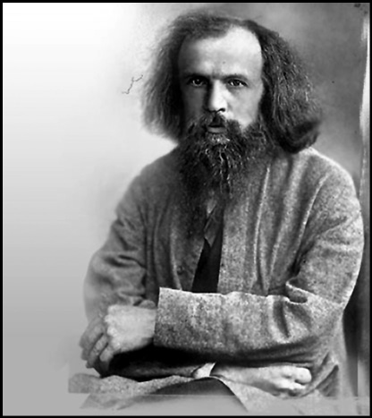
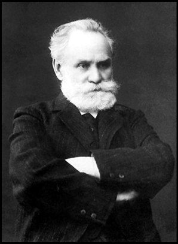

Kehaneti ölümünden 16 yıl sonra gerçekleşti; kuyruklu yıldızın ardındaki sırrı çözdü / EDMOND HALLEY
(1656-1742)
“Bu yıldız ilk çıktığında; Hz. Nuh kavmi helak olmuştur.
Hz. İbrahim ateşe atılmıştır. Hz. Musa ile uğraşan
Firavun ve kavmi yok edilmiştir. Hz. Yahya
öldürüldüğünde de görülmüştür. Siz o yıldızı
gördüğünüzde fitnenin şerrinden Allah’a sığınınız.”
(Kitab-ül Burhan Fi Alamet-il
Mehdiyy-il Ahir Zaman)
Meşhur İngiliz gökbilimci Edmond Halley, Londra Haggerston’da zengin bir sabuncunun oğlu olarak dünyaya geldi. Ailesinin maddi durumu oldukça iyiydi. Bu yüzden adını bilim tarihine yazdıran birçok bilim adamının aksine, hiçbir zaman kuru ekmeğe muhtaç olmadı. Çok iyi okullarda okudu. Bir istediği iki edilmedi. Çocukken matematiğe yatkın olduğu anlaşılınca ailesi onu St Paul’s School’a yazdırdı. Daha sonra Oxford’daki The Queen’s College’a devam etti. Halley bu sırada gökbilimlerine daha çok eğilimli olduğunu fark etmişti. Henüz öğrenci iken güneş sistemi ve güneş lekeleri ile ilgili makaleleri yayımlandı. Kraliyet astronomu Flamsteed’in yanında çalışmaya başladı. Merkür’ün tutulmasını gözlemledi. Ve Kepler’in aksine, bir gezegenin, boş elips odağı çevresinde sanıldığı kadar değişmez bir hareket yapmadığını ispatlayınca da yıldızı parladı.
Teorik bir gökbilimci olarak kalmaya niyetli olmayan Halley, gözlem yapmak istiyordu. Gökbilimde gerçek ilerlemenin, yıldızların koordinatlarının net bir şekilde tespitine dayandığını düşünüyordu. Büyük gözlemevlerindeki gökbilimciler de yıldızların yerlerini doğru tespit etmeye çalışıyordu. Halley, gözlem uğruna 1676 yılında, bitirme sınavlarına girmeden Oxford Üniversitesi’ni bıraktı. Henüz 20 yaşındayken, o güne dek el atılmayan güney yarımküre yıldızlarını incelemek üzere Güney Atlas Okyanusu adalarından St. Helena’ya gitmeye karar verdi. Çünkü Alman gökbilimcisi Johann Hevelius Dantzig’de, İngiltere Kraliyet Gökbilimcisi John Flamsteed de Greenwich’de bu tür çalışmalarla uğraşıyordu. Halley isabetli bir karar vermişti. Çünkü güneyde kalan yıldızlar o çağa kadar hiçbir zaman dikkatli bir biçimde incelenememişti. Sabun tüccarı baba Halley, zenginliğinin yanı sıra ileri görüşlü de olduğu için oğlunu ilk cesaretlendiren kişi oldu. Genç gökbilimcinin cebine 300 poundluk ödenek koydu. Halley, 1676 yılında birleşik krallığın Doğu Hindistan Şirketi’nin gemilerinden biriyle Güney Atlantik Okyanusu’ndaki St. Helena adasına doğru yola çıktı.
0 yaşında adada tek başına
Halley, üç ay süren uzun yolculuktan sonra gelecekte Napolyon Bonaparte’ın sürgün hayatı yaşayacağı, Atlantik’in ortasında tek başına duran St. Helena’ya ulaştı. Ancak hayal kırıklığına uğradı. Bu adanın gözlem için çok uygun olduğu bilgisi doğru değildi. Gökyüzünü sürekli bulutlar kapatıyor, yağmur yağıyordu. Gözlem zorluğuna rağmen üç yüzden fazla yıldızı inceleyip yerlerini tespit etti. Hatta 7 Kasım 1677’de, Merkür gezegeninin güneşin görünür diski üzerinden transit geçişini gözledi. Bir yıl sonra İngiltere’ye döndüğünde ilgiyle karşılandı. 341 güney yıldızının ayrıntılarını içeren ‘Güney Yıldızları Katalogu’ (Catalogus Stellarum Australium) adlı eseri yayımlandı. Bugün birçok genç tek başına yabancı bir ülkeye bile gidemezken, Halley’in, 20 yaşında ıssız bir adaya giderek elde ettiği verilerle Yıldız haritasına önemli katkılarda bulunması bile, başlı başına bir olaydı. Çalışmasını 1677’de Kral II. Charles’a sundu. Kralın devreye girmesiyle okulunu bitirmediği halde, 18 Kasım 1678’de Oxford Üniversitesi’nden lisanüstü derecesi aldı. İki hafta sonra Kraliyet Cemiyeti üyeliğine (Fellow of the Royal Society) seçildi.
Halley, 1698’de Dünya’nın manyetik özelliğini incelemek için HMS Paramore isimli geminin komutasına getirildi ve iki sene kadar Atlas okyanusunda yelken bastı. Bu seferden elde ettiği gözlemlerini ‘Pusula Sapmasının Genel Haritası’ (General Chart of the Variation of the Compass, 1701) isimli bir kitapla yayınladı.) Öte yandan Halley, her ne kadar tarihe, kendi adını alan kuyruklu yıldızın gizemini çözdüğü için geçse de, Newton’a verdiği destekle de bilime başka bir koldan katkı yapmış oluyordu.
Genç bilim adamı 14 Mayıs 1679 tarihinde yeniden yollara düştü. Dantzig’de bir yıldan fazla gözlem yaptı. Ertesi yıl tüm Kıta Avrupa’sını kapsayan bilimsel bir geziye çıktı. Aynı yıl, gökyüzünde bir kuyruklu yıldız belirdi. Halley bu yıldızı Paris Gözlemevi yöneticisi, ünlü Fransız gökbilimcisi Gian Domenico Cassini ile birlikte gözlemledi. Tüm dünyada yankı uyandıran bu gökcîsminin rotası çıkartıldı. Cassini, kuyruklu yıldızın Güneş çevresinde daire şeklindeki yörüngesini iki buçuk yılda dolandığını hesaplamıştı. Ancak bir yerde hata yapılıyordu…
Newton’a sponsor oldu
Hesapları bir kenara bırakan Halley, İngiltere’ye döndükten sonra 1682’de aşkı Mary Tooke ile evlendi. Islington’a yerleşti. Burada yerçekimi ve ay gözlemleriyle ilgilenmeye başladı. 22 Kasım 1682 günü sabah saat 6.30 da, ileride kendi adını alacak olan kuyruklu yıldızı izlerken, Kepler’in gezegensel hareket yasalarının kanıtlanması kafasına takıldı. Halley’in matematik bilgisi, günümüz çağdaş gökbilimin temel yapı taşlarından birini oluşturan ‘Evrensel Çekim Kanunu’nu çözmeye yetmiyordu.
Parlak zekalı ama utangaç arkadaşı Isaac Newton’a danışmak için Cambridge Üniversitesi’ne gitti. Newton problemi çözmüş ama sonuçlarını yayımlamamıştı. Çünkü, üzerinde çalıştığı bu sorunu nasıl çözdüğüne dair hesapları kaybetmişti! Bu cevap karşısında kulaklarına inanamayan Halley, bu olayın ne kadar önemli olduğunu ve sonuçlarının mutlaka bulunarak yayınlanması gerektiğini anlattı. Bir süre sonra Newton kaybolan matematik hesaplarını yeni baştan hazırladı. Sonuca ulaşsa da, bunları yayınlamak istemedi. Zira cebinde parası yoktu. Londra Kraliyet Derneği de kriz içindeydi. Cömert arkadaşı Halley sponsor olunca Newton, ‘Doğa Felsefesi’nin Matematiksel İlkeleri’ (Philosophiae Naturalis Principia Mathematica) isimli çığır açan eserini yayımlayabildi. Newton böylelikle, Halley’in de yakın desteği ile çağının en ünlü bilim adamları arasına giriyordu.
Beş yıl sonra Newton 1685’de İngiliz astronom John Flamsteed’e yazdığı bir mektupta, Kasım ve Aralık 1680’de görünen kuyruklu yıldızların büyük bir ihtimalle aynı olduğunu söyledi. Newton’a göre kuyruklu yıldızlar, Güneş’in çekim kuvvetiyle hareket ediyordu. Bu arada Newton, Halley’e de kuyruklu yıldızların izlediği gerçek yolun aşağı yukarı bir parabol şeklinde olduğunu söylemişti. Saksonya’da, George Samuel Doerfeal adlı bilim adamı da aynı sonuca varmıştı.
Takvimler 1692 yılını gösterirken Newton laboratuvarda geçen bir ömrün sonuna yaklaşmıştı. Depresyon, paranoya, uykusuzluk, hafıza kaybı şikayetleri iyice artmıştı. Yakın arkadaşı Halley’in durumu da, alkol alışkanlığından dolayı hiç iç açıcı görünmüyordu.
Halley, gökyüzü ile olduğu kadar su altı ile de ilgiliydi. Öyle ki yer kabuğunun içinde değişik canlılar yaşadığına bile inanıyordu. 1690’da uzun süre su altında kalabilen ve su altı araştırmaları için penceresi bulunan bir araç olan ilkel bir denizaltı bile planlamıştı. Dalma çanı olarak da isimlendirilen bu denizaltıda hava, yüzeyden gönderilen ağırlık bağlanmış varillerle temin ediliyordu.
Halley’in hesapları doğru çıktı
Halley, 1704’te Oxford Üniversitesi’nde boşalan Geometri Kürsüsü’ne seçilince kendini toparladı ve kuyruklu yıldız araştırmalarına ağırlık verdi. Öncelikle arkadaşı Newton’un ortaya koyduğu genel kuralları uyguladı. Ardından güvenilebilir gözlem kayıtları bulunan, yirmi dört parlak gökcisminin hareketlerini incelemeye aldı. Parabol biçimli yörüngelerin yerine, kesinlikle eliptik olan bazı yörüngeler hesaplandığını görünce büyük bir heyecana kapıldı. Bu hesaplamaya göre özellikle 1682’de kendini gösteren kuyruklu yıldızın, çok az eğimi olan (18°) bir düzlem üzerinde hareket ettiğini ve dışmerkezliliği çok büyük olan gerçek bir eliptik yörüngeye sahip olduğunu gördü. Halley’in ilgilendiği üç kuyruklu yıldız da güneşin çevresinde, gezegenlerin ters doğrultusunda (saat yönünde) dolanıyordu. Nihayet 1705 yılında, yaptığı hesaplamada, bu üç kuyruklu yıldızın, büyük elips bir yörünge üzerinde yol alan ve her 75-76 yılda bir dünya ve güneş yakınlarına gelen tek bir kuyruklu yıldız olduğu sonucuna vardı. Yaptığı hesaplamalar üzerine, kuyruklu yıldızın 1758’de bir kez daha dünyadan görüneceğini ilan etti.
Tahmin edilebileceği gibi Halley’i kıskanan devrin gökbilimcileri bu hesaplamayı kabul etmeyerek, kehanette bulunduğunu öne sürdüler. Kraliyet Gökbilimcisi seçilmek ümidiyle reklam yaptığını söyleyenler bile çıktı. Hatta Halley’in o tarihte hayatta olmayacağı için böyle bir palavrayı kolaylıkla ortaya attığını söyleyecek kadar ileri gidenler de oldu.
Halley’e inanmayanlar haksız da değildi. Çünkü İsviçreli matematikçi ve fizikçi Jacgues Bernoubilli, 1680’de görünen kuyruklu yıldızın 17 Mayıs 1719’da geri döneceğini söylemişti. O tarihte hiçbir şey görünmedi. Diğer tahminler de tutmamıştı. Bu arada Halley 9 Şubat 1720’de, Flamsteed’in ölümüyle boşalan Kraliyet Gökbilimciliği’ne atandı.
Hesaplarının doğruluğundan emin olan Halley, eleştirilere kulak asmadı. Hatta yeni ‘kehanetlerde’ bulundu. Venüs gezegeninin hareketiyle yakından ilgilendiğinden, bu gezegenin 1761’de güneşin önünden transit geçeceğini söyledi. Bu müthiş gök olayı doğru çıkarsa bilim adamları Güneş’in uzaklığını ve Güneş sisteminin boyutlarını ölçebilecekti. 20 Mart 1727’de arkadaşı Newton’u kaybeden Halley, o günleri göreceğinden ümitli değildi.
Halley, ömrünün sonuna yaklaştığında teleskopunu aya çevirdi ve on sekiz yıl boyunca Ay’ın hareketlerini izledi. Ay’ın hareketlerinden yararlanılarak, hareket halindeki bir gemiden boylamın ölçülmesine ilişkin teoriyi geliştirmeye çalışıyordu. 1737 yılında eşini kaybetti. Aynı yıl felç geçirdi. Her şeye rağmen teleskopunun başından ayrılmadı. 14 Ocak 1742’de gökte bir yıldız kaydı. Aynı anda Halley Greenwich Gözlemevi’ndeki odasında yaşama veda ediyordu.
Halley, beklenen kuyruklu yıldızdan önce ölmüştü, ama iddiası halen gündemdeydi. Hazırladığı ‘Gökbilimsel çizelgeler’ (Astronomical Tables) ölümünden sonra 1749’da yayınlanınca, ilginç bir paragraf ortaya çıktı. Ünlü bilim adamı burada şöyle diyordu: “Görüldüğü gibi, bu üçünün yörünge elemanları birbirleriyle çok yakın bir uyum içindedir ve bunların üç değişik kuyruklu yıldız olabilmesi yalnızca bir mucizedir. Bu nedenle, eğer kuyruklu yıldız öngördüğümüz gibi 1758 yılı civarında geri dönerse, gelecek nesillerin, bu durumun ilk kez bir İngiliz tarafından keşfedildiği gerçeğini reddetmeyeceklerine inanıyorum.”
Takvimler 1758 yılını gösterdiğinde heyecan doruğa çıkmıştı. Avrupa’da aralarında ünlü kuyruklu yıldız avcısı Fransız gökbilimcisi Charles Messier’in de bulunduğu çok sayıda araştırmacı Halley’i araştırmaya koyulmuştu. Birçok ünlü bilim adamı, kuyruklu yıldızın geliş tarihini tam olarak hesaplamaya çalışıyordu. 1758 yılının bitmesine sadece 5 gün kalmıştı. Nihayet Almanya’nın Dresden kenti yakınlarında oturan Palitzsch adındaki Saksonyalı bir çiftçi, aynalı teleskopuyla 25 Aralık 1758 tarihinde Halley’in geri dönüşünü ilk gören kişi oldu. Paris Gözlemevi’nde çalışan Nlessier ise, Halley’i 21 Ocak 1759 gecesi gözlemledi. Çıplak gözle de izlenebilen kuyruklu yıldız en son 22 Haziran tarihinde Lizbon’da Chevalier adındaki bir gökbilimci tarafından görüldü. Böylece, İngiliz gökbilimcinin kehaneti ölümünden 16 yıl sonra gerçekleşti. Adı, geri dönen kuyruklu yıldıza verilerek ölümsüzleştirildi. Halley kuyruklu yıldızı, 6 Ağustos 1835’te, 29 Nisan 1911’de ve son olarak 6 Mart 1986’da gözlendi. Bir sonraki ziyareti ise yüzyılın ortasında gerçekleşecek.
NOTLAR
- İngiliz gökbilimci, jeofizikçi, matematikçi, meteorolog, fizikçi ve mucit Edmond Halley, kendi adı ile anılan bir kuyruklu yıldız sayesinde ün yapmış olsa da, on parmağında on marifet olan bir bilim adamıydı.
- 1715’te, 1140 yılından beri Londra kenti üzerinde görülebilen ilk tam güneş tutulmasını izlemiş, bugün korona olarak bildiğimiz Güneş’in en üst atmosfer katmanının varlığını keşfetmiş, ancak bunun Güneş’e mi yoksa Ay’a mı ait olduğunu belirtmemişti.
- Gezegenlerin elips şeklinde yörüngeler izlediği biliniyor ama bunun nedeni bilinmiyordu. Halley, Isaac Newton’a başvurdu. Newton, bunu hesaplamış ancak sonuçlarını kaybetmişti! Halley’in ısrarları üzerine problemi tekrar çözdü ve şaheseri Principia Mathematica’yı tamamladı. Bu önemli eser Newton’un parası olmadığı için Halley’in sponsorluğunda basılabildi.
- Çılgın bilim adamı, anormal pusula ölçümlerini açıklamak için 1692’de ‘İçi Boş Dünya’ fikrini ortaya attı. Bu fikre göre Dünya 800 km. kalınlığında bir kabuktan, eşmerkezli iki iç kabuktan ve en içte yaklaşık Venüs, Mars ve Merkür’ün çaplarında bir çekirdekten oluşuyordu. Bu iki kabuk atmosfer tarafından birbirinden ayrılıyordu ve her birinin ayrı manyetik kutupları vardı.
- Dünya’nın iç kısımlarında yaşayan varlıklar olduğuna inanıyordu. Hatta dalış aygıtı geliştirerek, bunu denizde denedi. Denizde sefer halindeyken boylamı hesaplayabilmek gibi önemli denizcilik sorunlarıyla uğraştı.
- Barometre kullanarak, hava basıncının yükseklerde nasıl değiştiğini araştırmak için dağlara tırmandı.
- Paramour Pink adını taşıyan gemiyle, Manş Denizi’ndeki gelgit akıntılarını ilk kez ayrıntılı ve eksiksiz olarak inceledi.
- Alize rüzgarlarından musonlara kadar dünya atmosferindeki etkin rüzgarların haritalarını çıkarttı.
- Harita parçalarını kesip tartarak İngiliz eyaletlerinin yüzölçümlerini hesaplayan eğlenceli bilim adamı, yaşam süresini önceden bilmeyi hedefleyen birtakım çizelgeler (Breslau Table of Mortality) bile hazırlamıştı!
Ateşin sırrını çözüp, kimyanın kitabını yazdı; kendisi Fransız Devrimi’nin ateşine kurban gitti / ANTOINE LAURENT DE LAVOISIER
(1743-1794)
“Doğayı, içerisinde her türden bileşimlerin
ve çözülmelerin meydana geldiği devasa bir
kimya laboratuarı olarak görüyorum.
Bitki örtüsü ise, Tanrı’nın tüm doğayı harekete geçirmek
için kullandığı temel enstrüman.”
Antoine Laurent de Lavoisier
Kimya biliminin henüz karanlık çağlarını yaşadığı 18. yüzyılda bir bilim adamı, yaşadığı ve yaşattığı iki devrimle kimya sanatında yeni bir dönemin başlangıcı oldu. Onun sayesinde o dönemde ‘simya’ olarak bilinen alan, modern adıyla “kimya” olarak anılmaya başlayacaktı. Simya bilimi adı altında yapılan çalışmalar, onunla bilimsel bir nitelik kazandı ve ‘yanma’ olayı ancak onun çalışmaları neticesinde anlaşılabildi. Büyülü ateşin sırrı onun ile çözülmüştü…
Oksijen ve hidrojeni gerçeğe uygun biçimde tanımlayarak ikisini modern isimleriyle kimyaya kazandıran, yanma olayını açıklığa kavuşturarak element ve bileşik arasındaki farkı açıklayan, Kimya Bilimine Giriş adlı kitabıyla kimya bilimine sağlamlık, açıklık ve bir yöntem kazandırıp onu modern çağa taşıyan, Avrupa’da kimya biliminin mimarı olan, bugün bilinen 110 elementin 20’sini belirleyen ve 1789 Fransız Devrimi’nde siyasi bir rol üslenen bu ‘kimya devriminin’ kahramanı, Fransız kimyager Antoine Laurent de Lavoisier’di.
26 Ağustos 1743’de Paris’te doğdu. Ailesi dönemin şartlarına göre oldukça zengin olan Lavoisier, ilk eğitimini Mazarin Koleji’nde aldı. Annesini küçük yaşta kaybeden ve babası tarafından büyütülen Lavoisier, bir avukat olan babasıyla aynı mesleği yapmak istediğinden, eğitimini hukuk üzerine sürdürdü. Lakin 1764’te kolejden mezun olduğunda, kafasında hukukun üstünlüğünden ziyade başka şeyler vardı. Ancak okulda fen ilimlerine de ilgi duyduğu için, bu alandaki dersleri de yakından takip etmişti. Aynı yıl Paris sokaklarının aydınlatılmasına yönelik bir projeyle birinci oldu ve Fransız Bilim Akademisi’nden altın madalya kazandı. İlk araştırmasını 1765’te yayınlayan Fransız kimyager, 1768’de kimya alanındaki çalışmalarından dolayı Fen Akademisi’ne seçildi. Hukuku tamamen rafa kaldırmış olsa da, devlet işlerine kafa yormaktan vazgeçmiş değildi.
Kimyasal devrimci…
Fransa’da yanmaya başlayan devrim ateşi, ülkenin köklü bir reforma ihtiyacı olduğuna inanan genç adamı da yakmış, de Lavoisier, Fransız Devrimi sırasında aktif şekilde siyasetin içinde yer almıştı. Hükümetin özel bir komisyonunda görev alarak siyasî çalışmalara katılan Lavoisier, seçildiği komitelerde devrin sosyal şartlarını ve ziraat sahalarını inceledi. Fransa’nın jeolojik haritasının çıkarılması ve tarımda verimin artırılması için uğraştı. Bu dönemlerde, sonradan çok yaygınlaşacak olan yaşlılık sigortası ve vergi reformu gibi projelere imza attı. Ülkesinin savunmasına yönelik çalışmalarda da yer alarak barutun üretimini üstlendi.
Lavoisier’in çalıştığı kurum olan Ferme Generale, 1789 Fransız Devrimi öncesinde hükümet adına vergi toplayan özel bir kuruluştu. Bu dönemde aynı kuruluşta çalışan birinin kızı olan Marie Paulze’ye âşık oldu ve 1771’de onunla evlendi. Evlendiklerinde Paulze henüz 13 yaşındaydı. Feodal krallıkla yönetilmekte olan Fransa’da o dönemde tacirlerin veya sanayicilerin devlet yönetimine etkisi yoktu. Yasalar, feodal aristokrat kesimin çıkarlarını gözetecek şekilde tasarlandığından güçlü olmak için soylu sınıfa mensup olmak gerekiyordu. Aynı dönemde bu unvanlar parayla da satın alınabiliyordu ve babası 1772’de Lavoisier’e soyluluk unvanı satın aldı.
1789 Fransız İhtilali’nde ülkenin maliyesi ve ekonomik kaynakları hakkında bir rapor hazırlayan Lavoisier, ölçü sisteminde metrik birimlerin kullanılmasında da önemli rol oynadı. Bu dönemde, yaptığı diğer işlerin yanında kimya alanındaki çalışmalarına kendi kurduğu laboratuarda eşiyle birlikte devam etti. Dönemin en geniş laboratuarlarından birine sahip olan Lavoisier, bu laboratuarını 1768’de satın aldığı Ferme Generale hisselerini satarak kurmuştu. Ancak Ferme Generale, o dönemde halk tarafından sevilmeyen bir kurumdu. Fakirlerden zorla vergi topluyordu. Lavoisier, sahip olduğu hisselerden dolayı halk arasında sevilmese de, aynı kurumla başka bir işe daha girişti. Lavoisier’in girişimiyle Paris’in etrafındaki surlar yeniden inşa edildi ve duvarın masrafları Ferme Generale’nin aracılığıyla halktan toplanan vergiyle karşılandı. Bu yüzden halk bu duvarı hiç sevmemiş, devrim başladığı gün ilk yıkılanlardan biri de bu duvar olmuştu. Bütün bunlar, halkın Lavoisier’den nefret etmesine sebep oldu.
Lavoisier, hayatına mal olacak hatalardan birini de 1780’de yaptı. O dönemde Bilimler Akademisi’nin iki yıllık üyesi olan Lavoisier, akademinin açtığı bir yarışmaya kızılötesi bir dürbünle katılan genç bilim adamı olan Jean Paul Marat’ın bu icadını geri çevirdi. İcadı geri çevrilen Marat, ihtilal zamanında devrimin en önemli isimlerinden biri oldu ve Lavoisier’den intikamını, onu idama götüren yolu açarak aldı.
‘Devrimin bilim adamına ihtiyacı yok!’
Fransız Devrimi gerçekleştiğinde Lavoisier, liberal ve reform yanlısı kişilerin arasında yer almıştı. Etats-generaux toplandığında yedek halk temsilcisi seçilerek Meclis tüzüğünü hazırladı ve Paris Komünü’ne de seçilip, 1789 Derneği’ne katıldı. Bütün bunların yanı sıra devlet hazinesinin idari çalışmalarının içinde yer aldı. Ancak devrime yaptığı bu hizmetlere rağmen, ihtilalcilerin hedefi olmaktan kurtulamayacaktı. Halk, Ferme Generale hisselerine sahip olmasını ve kendisinden zorla alınan vergilerle inşa edilen Paris Duvarını unutmamıştı. Bir yandan basın onun aleyhine yayınlar yaparken, diğer yandan da o sırada Fransa Ulusal Meclisi üyesi olan, bir zamanlar icadını geri çevirdiği Jean Paul Marat, Lavoisier’in mahkemeye çıkarılması ve idam edilmesi için çalışmalarda bulunuyordu.
Devrimin ardından Ferme Generale 1791’de kapatıldı. Barut çalışmalarına son verilen Lavoisier, barut fabrikalarındaki görevinden alındı ve laboratuarından çıkarıldı. 1793 yılı Kasım ayında Ferme Generale’nin yöneticileri ile birlikte aralarında kayınpederinin de bulunduğu 31 kişiyle birlikte tutuklanarak hapse atıldı. Bu kişiler 8 Mayıs 1794’te berber, arabacı, kuyumcu, manav ve kasap gibi çeşitli mesleklerden kişilerin oluşturduğu bir jüri karşısında Devrim Mahkemesi’ne çıkarıldı. 31 kişi, bulundukları makamları kullanarak kazanç sağlamakla suçlanıyordu. Savunması sırasında bir bilim adamı olması öne çıkarıldı. Ancak yargıçlardan biri “Devrimin bilim adamına ihtiyacı yok” diyerek kimya alanındaki çalışmalarını dikkate almadı. Mahkeme sonunda 8 kişi beraat etti. Geri kalanlar aynı günün akşamında Paris Devrim Meydanı’na götürülerek tek tek giyotinle idam edildi.
Modern kimyanın temelini attı
Antoine Laurent de Lavoisier, hukukçu olmak üzere çıktığı yolda kimya alanındaki ilk çalışmalarını yanma üzerine yapmış ve bilim dünyasında adını ilk kez bu şekilde duyurmuştu. 1770’de yanmayla ilgili çalışmalarına başladığında ve tezini ortaya attığında, Avrupa’da kimya henüz bilim konusu olarak bile kabul edilmiyordu. O, herkesin gülüp geçtiği teorisini ortaya attığında, piyasada geçerli olan görüş; antik Yunan’dan kalma; Aristoteles’in doğadaki dört temel element olarak kabul ettiği toprak, su, hava ve ateşi ile yanmaya ilişkin ‘Phologiston Kuramı’ydı. Buna göre yanma hadisesi, yanan maddenin ne olduğu bilinmeyen ama gizemli bir madde olduğuna inanılan ‘ateş maddesi’ (phologiston) çıkarmasıyla gerçekleşiyordu. Yanma konusundaki bilgi eksikliği, bu kimyasal olayın o güne dek açıklanamamasındaki en büyük engeldi. Joseph Black’ın 1756’da keşfederek ‘sabit gaz’ adını verdiği karbondioksit dışında bilinen tek gaz havaydı. Phologiston Kuramı, yanan maddelerin ağırlıklarını kaybettiğini savunuyordu. O dönemde oksit bilinmediği için metal maddelerin havayla temasıyla oluşan kızarıklıklar ise ‘calx’ olarak nitelendiriliyordu.
Lavoisier ise ürünlerin ağırlığının, reaksiyona giren maddelerin ağırlığına eşit olması gerektiğini söylüyordu. Yani kimyasal değişim sırasında madde yoktan var edilemeyeceği gibi varken de yok edilemezdi! Lavoisier, bu konudaki çalışmalarıyla Kütlenin Korunumu Yasası’nı deneysel olarak kanıtladı. Hava dolu bir tüpte yakılan fosforun kütlesinde meydana gelen artışın tüketilen hava miktarına eşit olduğunu buldu. Aynı deneyin tersini de gerçekleştirdi ve kapalı bir kap içindeki HgO’nun (cıva oksit) ısıtılmasıyla kabın içindeki hava kütlesinde meydana gelen artışın, tepkimeye giren maddenin kütlesindeki azalmaya eşit olduğunu belirledi. Lavoisier, böylece “Tepkimeye giren maddelerin kütleleri, tepkime sonucu oluşan maddelerin kütleleri toplamına eşit olmalıdır.” şeklindeki yasayı özetleyerek, bu alandaki tabuları da yıkmış oluyordu.
1870’lerde Antoine Laurent de Lavoisier tarafından kullanılan laboratuar malzemeleri
Çalışmalarını sürdüren Fransız kimyager, solunum sırasında oksijen alınıp, karbondioksit verildiğini belirledi. Nefes almanın karbon ve hidrojenin yavaş yanmasıyla meydana geldiği ve bunun mum veya gaz lambasındaki yanmanın benzeri olduğunu ortaya çıkaran Lavoisier, kullandığı kalorimetrelerle kimyevi reaksiyonların ısısını ölçtü. Bunlarla da kalmadı ve calx adlı kızarıklıkların da hava-metal birleşimiyle oluştuğunu keşfetti. Calxların oluştuğu reaksiyonlar sırasında sonradan oksijen ismini verdiği bir gaz çıktığını tespit etti. Daha önce oksijeni keşfederek ona ‘yetkin gaz’ adını veren ünlü kimyager Priestley’le Paris’te buluştu. Ondan cıva oksit üzerindeki deneyleri sırasında bulduğu bu “yetkin gaz”ın özelliklerini dinledikten sonra, Priestley’in deneylerini sürdürdü. Ancak Lavoisier, yanmadan sonra oluşan cıva oksidi (calx) tarttıktan sonra Priestley’den bir adım daha ileri giderek cıva oksidi daha fazla ısıttı. Kora dönüşen kırmızı oksidin giderek yok olmaya yüz tuttuğunu, geriye cıva taneciğiyle bir miktar ‘elastik akacı’ kaldığını saptadı. Elde kalan bu madde, Priestley’in ‘yetkin gaz’ diye isimlendirdiği maddeydi. Kapta kalan bu maddenin ağırlığının, civanın ilk aşamada ısıtılmasında azalan hava ağırlığıyla eşit olduğunu belirledi. Oksijenin keşfi de yanma-oksitlenme olayının bilimsel olarak açıklanmasını sağladı: “Yanma, yanan maddenin phologiston salmasıyla değil, oksijenle birleşmesiyle gerçekleşir.”
Başta önemsenmeyen bu kuram, Cavendish’in, suyun iki gazın birleşmesiyle oluştuğuna ilişkin deney sonuçlarını açıklamasıyla, bilim çevrelerinin dikkatini çekti. Cavendish, deneylerinde asitlerin metal üzerindeki etkisi neticesinde ‘yanıcı’ bir gaz elde etmiş, bunu phologiston sanmıştı.
Bu açıdan oksijeni ilk keşfeden Lavoisier değildi; ama bu gazın gerçek önemini ilk kavrayan kişi oydu. Lavoisier, ulaştığı sonucu Bilim Akademisi’ne bir bildiriyle sunduğunda da Priestley ve Cavendish’in katkılarından tek kelime dahi söz etmedi.
Lavoisier, ayrıca bir maddenin mutlaka katı, sıvı ve gaz hallerinden birinde olduğunu ilk ortaya atan kişiydi. Deneylerinde havayı analiz ederek azotla-oksijeni ayırdı. En gelişmiş laboratuarında hidrojeni yakmayı başaran Lavoisier, bunun neticesinde de su elde etti. Kimyevi İsimlendirme Metodu’nu geliştirdi.
Aslına bakılırsa Lavoisier, ne yeni kimyasal bir nesne, ne de yeni kimyasal bir olgu keşfetmişti. Yaptığı sadece başkalarının bulduğu nesne ve olguları açıklamak, kimyasal bileşime açıklık getiren bir kuram oluşturmak, kimyasal nesneleri adlandırmada yeni ve işler bir sistem kurmaktı.
Ancak 1789’da yayımlanan ‘Kimyanın Elementleri’ (Traite Elementaire de Chimie) adlı yapıtı, kendi alanında, Newton’un Principia’sı oldu. Newton modern fiziğin temelini atarken, o da modern kimyanın temelini atmış oluyordu.
NOTLAR
- 26 Ağustos 1743’te Paris’te doğdu, 8 Mayıs 1794’te Paris Devrim Meydanı’nda giyotinle idam edildi.
- Fransa’nın köklü bir reforma ihtiyacı olduğuna inandığından, Fransız Devrimi sırasında da aktif şekilde siyasetin içinde yer aldı.
- 1771’de evlendiğinde eşi Paulze henüz 13 yaşındaydı.
- Babası 1772’de kendisine soyluluk unvanı satın aldı.
- 1789 Fransız İhtilali’nde ülkenin maliyesi ve ekonomik kaynakları hakkında bir rapor hazırlayarak ölçü sisteminde metrik birimlerin kullanılmasında da önemli rol oynadı.
- Kütlenin Korunumu Yasası’nı deneysel olarak kanıtladı.
- Solunum sırasında oksijen alınıp, karbondioksit verildiğini belirledi.
- Oksijeni ilk keşfeden olmasa da, bu gazın gerçek önemini ilk kavrayan kişi oldu.
- Yanma-oksitlenme olayını “Yanma, yanan maddenin ‘gizemli bir madde’ salmasıyla değil, oksijenle birleşmesiyle gerçekleşir.” şeklinde açıkladı.
Aşıyı bulup, çiçek hastalığının kökünü kazıdı; bağışıklık fikrinin babası oldu / EDWARD JENNER
(1749-1823)
“Gelecek kuşaklar tarihe baktıklarında,
baş belası bir çiçek hastalığı olduğunu
ve bunun kökünün senin tarafından
kazındığını okuyacaklar.”
Thomas Jefferson’ın 1806’da
Edward Jenner’a yazdığı mektuptan
O çocukların, hatta bazen yetişkinlerin de, korkulu rüyası olan enjeksiyonu eline alan ilk isim olmuştu. Bir diğer deyişle; “Sus, bak iğneci amca geliyor!”cuların da ilham kaynağı! Evet, bugün başta çiçek aşısı olmak üzere onun gibi bulaşıcı hastalıkları önlemek ve bu hastalıklara karşı bağışıklık kazandırmak için uygulanan “aşı yöntemini” ilk uygulayan, İngiliz Doktor Edwar Jenner’dı. Aşıyı ilk olarak çiçek hastaları üzerinden deneyen Jenner, Osmanlı’da kendisi doğmadan çok önceleri uygulanmakta olan çiçek hastalığı tedavisini, bilimsel yöntemle veya diğer adıyla, aşı ile sağlayarak tıp dünyasında yeni bir sayfa açan isim olmuştu.
Her ne kadar çiçek aşısını ilk bulan kişi olmasa da bu tedaviyi bilimsel bir yöntemle ilk kez uygulayan Jenner, önce Avrupa’da ardından da Amerika’da yöntemin gelişmesini sağlayarak milyonlarca kişinin hayatını kurtardı. Bu anlamı ile eli iğneli bir kahraman olarak da isimlendirilebilirdi!
Küçük yaşta babasını yitiren Jenner’ı, yine bir papaz olan ağabeyi büyüttü. İlköğrenimini Gloucestershire’de tamamlayan Jenner, ardından bir cerrahın yanında çalıştı. Londra’ya giderek St. George Hastanesi’nde dönemin ünlü doktorlarından John Hunter’ın asistanı olarak çalışmaya başladı. Burada kaldığı iki yıl boyunca biyoloji ve cerrahi üzerine araştırmalar yapan Jenner, 1773’te Berkeley’e döndü ve doktorluk yapmaya başladı. Burada bulunduğu dönemde, ileride kendisinin tüm dünyada tanınmasını sağlayacak çiçek hastalığına yönelik çalışmalarına da başlamıştı. 1796’da Kraliyet Cemiyeti’ne (Royal Society), Sarah Nelmes isimli bir kıza uyguladığı çiçek aşısının sonuçlarını içeren makalesini gönderdi. Ancak elde ettiği bu bulgular, Kraliyet Cemiyeti tarafından reddedilecekti.
Jenner’in aşısının ise yarayacağına hiç kimse ihtimal vermiyor hatta sık sık kendisi ile dalga geçiliyordu. Çiçek hastalığı, önüne geçilemez bir felaket olarak kabullenilmişti adeta.
Çalışmalarından vazgeçmeyen Jenner, iki yıl sonra kendi yaptığı araştırmalarda elde ettiği sonuçlarla dönemin Osmanlı’sında kullanılmakta olan çiçek hastalığı ve tedavi usulleriyle ilgili bilgileri derleyerek ‘İnek Çiçeği Hastalığının Sebepleri ve Etkileri Üzerine Bir İnceleme’ (An Inquiry Into the Causes and Effects of the Variolæ Vaccine) isimli çalışmasını yayınladı. Kitapla birlikte çiçek aşısı üzerine yaptığı çalışmaları geniş bir alana yayıldı ve önce Avrupa’ya ardından Amerika’ya ulaştı. Hastalığa karşı geliştirdiği yöntemler ve gerçekleştirdiği araştırmalar sayesinde bazı ödüller kazandı.
Milyonların katili Çiçeğe dur dedi…
18. yüzyıl kıta Avrupa’sında veba, kolera ve verem gibi hastalıkların yanı sıra çiçek hastalığı da can alıyordu. İngiliz tarihçi Kenneth Warker’ın 1954’de yayınladığı Tıp Tarihi isimli kitabında belirttiği üzere, o dönemde çiçek salgını, kıta genelinde 60 milyon kişinin canını almıştı! Warker’ın aktardığı istatistiklere göre, her ülke halkının en az yüzde 80’i er geç çiçek salgınına yakalanıyordu. Bunların en az dörtte biri de ya ölüyor, ya görme yetisini kaybediyor ya da ‘çiçek bozuğu’na (çiçek hastalığında ya da su çiçeğinde görülen ufak sivilcelerden kalan izler) yakalanıyordu. Fransa Kralı XV. Louis de 1774’te çiçek hastalığından ölmüştü.
18. yüzyıl İngiltere’sinde de çiçek hastalığının tedavisi yoktu. Hatta birçok aile, çocuklarına daha küçük yaşlardayken, bu hastalığı hafif şekilde atlatmış başka bir çocuktan aldıkları mikropları aşılayarak, çocuklarının bu hastalığa yakalanmasını önlemek yerine, hastalığı hafif geçirmesini sağlama yoluna gidiyordu. Bu şekilde çocuklar ya ölüyor ya da hayatlarının geri kalanını, bu hastalığı hafif şekilde geçirmiş ve bağışıklık kazanmış olarak geçiriyorlardı. Ya da dönemin matematikçilerinden birinin dediği gibi; “Hiçbir anne baba, çiçek hastalığını henüz geçirmemiş çocuklarını, kendi çocukları olarak görmüyor” idi…
İngiltere’nin Sadbury köyünde doktorluk yapmakta olan Jenner, sütçü kızların diğer insanlara göre çiçek hastalığına daha az yakalandığını gözlemlemişti. Meseleyi biraz kurcalayınca bu kızların daha önce inek çiçek hastalığına yakalanmış olduklarını belirledi. Hayvancılıkla uğraşan bu kızlar, çiçek hastalığına yakalansalar bile, ya hastalığı gayet kolay atlatıyor veya herhangi bir ölümcül sonuçla karşılaşmıyorlardı. Çünkü inek çiçeği hastalığı, insanlara çiçek hastalığına karşı bağışıklık kazandırıyordu. Bunun üzerine Jenner, 14 Mayıs 1796’da James Philipps adında 8 yaşındaki bir erkek çocuğuna sol kolundan ‘inek çiçeği’ cerahati verdi. Çocuğu bir süre inek çiçeği hastası olduğu halde bekleten Jenner, iki ay sonra bu sefer çocuğa çiçek mikrobunu enjekte etti. Sonuç hayli ilginçti. ‘Aşıladığı’ erkek çocuğu, çiçek hastalığına yakalanmamıştı! Bunun çiçek hastalığına karşı güvenli bir metot olduğunun anlaşılması üzerine uygulama yaygınlaştı ve bugün aşılama olarak bilinen ‘vaccination’ başlamış oldu. İngilizce ‘vaccination’ kelimesi de, çiçek hastalığı ineklerden alınan örneklerle engellendiği için Latince’de inek anlamına gelen ‘vacca’ kelimesinden türetilmişti.
Kuduz aşısını bulan ünlü bilim adamı Louis Pasteur, başka hastalıkları önlemek için aşı yöntemini geliştirene kadar da çiçek, aşılama yoluyla önlenebilen tek hastalık olarak kalacaktı. Aşılamayı başlatan Jenner ve ondan yaklaşık 100 yıl sonra bunu diğer hastalıklar için de kullanmaya başlayan Pasteur’ün çalışmaları sayesinde bağışıklık sisteminin yapısı anlaşıldı; mikroplar ve virüslerle mücadele yolunda büyük adımlar atıldı.
Çiçek aşısını ilk Osmanlı mı kullanmıştı?
Jenner, her ne kadar Batı dünyası tarafından çiçek aşısını bulan ilk kişi olarak lanse edilse de, bu, daha o doğmadan önce Osmanlı topraklarında uygulanan bir yöntemdi. 1771’de Osmanlı topraklarına gelen İngiliz elçisi Lord Montague’nun eşi Lady Mary W. Montague’nun İngiltere’ye gönderdiği mektuplardan da çiçek aşısının Müslüman Türkler tarafından bulunduğu anlaşılıyordu. Üstelik Jenner, çiçek aşısı üzerinde çalışırken, İstanbul’dayken çocuklarını çiçek hastalığına karşı aşılatan ve bu teknikten İngiltere’ye yazdığı mektuplarda bahseden Lady Montague’nun notlarından faydalanmıştı.
Lady Montague, 1717 yılında İngiltere’nin Osmanlı sefiri olarak tayin edilen eşi Lord Montague ile birlikte İstanbul’a gelmiş; beraberlerinde 3 yaşındaki oğlunu ve kızını da getiren Montague ailesi, Mayıs 1717’de geldiği Osmanlı topraklarında Temmuz 1718’e kadar kalmıştı. Kocasının görevi sayesinde gezdiği yerleri ve burada müşahede ettiklerini yazma gibi bir alışkanlığı olan Lady Montague, İstanbul’dayken de bir Osmanlı kadını gibi giyiniyor, Türk mahallelerini geziyor ve halkla yakın diyalog kuruyor; aldığı bilgileri ve gördüklerini ise hem kocasına aktarıyor hem de İngiltere’deki dostlarına yazdığı mektuplarında dile getiriyordu. Mektupları dünya edebiyat tarihine ‘Montague’nun Mektupları’ (Montague’s letters) olarak aktarılan İngiliz hanımefendisi, çiçek hastalığı ve Osmanlı’da bu hastalığa karşı uygulanan yöntemleri şöyle aktarıyordu:
Edward Jenner’i çiçek aşısını denerken resmeden bir çalışma.
“Bu topraklarda kimse aşıdan ölmüyor. Ben bu yöntemin iyi olduğuna karar verdiğim için aynısını kendi çocuğuma da yaptırdım. Ülkemi çok sevdiğimden aynı yöntemin bizde de uygulanmasını istiyorum. Doktorlarımızın, insanlığın iyiliği için kendilerinden fedakârlıkta bulunarak bu yönde çalışmalar yapacaklarına inansam, yöntemi ayrıntılı bir şekilde yazmaktan çekinmezdim. Ancak onları kızdırmaktan korkuyorum; zira kendileriyle iyi geçinmemek çok tehlikeli bir durumdur. Eğer İngiltere’ye dönersem, onlara karşı bir savaş açacağım.”
Londra’ya dönmeden hemen önce çocuklarını çiçek hastalığına karşı aşılatan Lady Montague, tarihte çiçek aşısı yaptıran ilk İngiliz oluyordu. İngiltere’ye döndüğünde mektubunda yazdığı gibi çiçek hastalığının aşısının bütün İngiltere’de uygulanması için çaba gösteren Montague, Londra’ya geldikten sonra sefaret doktoruyla birlikte aşı üzerine ilk denemelerini yaptı. Ancak bu çabaları fazla bir netice vermedi. Papazlar ve hatta dönemin bazı tıp uzmanları, onun bu çalışmalarına karşı çıktı. Ünlü Voltaire de ‘Felsefî Mektuplar’ adlı kitabının 11. mektubunda Lady Montague’nun, çiçek aşısının İngiltere’de yaygınlaştırılmasına yönelik çalışmalarından bahseder.
Donemin gazetelerinde yayınlanan ve Jenner’in çiçek aşısı ile dalga gecen bir karikatür... Aşıyı olanlarda boynuzlar çıkıyor...
Buna göre çiçek aşısını ilk kez uyguladığı savunulan Edward Jenner, aslında çiçek hastalığını bilimsel manada araştıran ve bu konuda eser yazan ilk kişiydi. ‘İnek Çiçeği Hastalığının Sebepleri ve Etkileri Üzerine Bir İnceleme’ adlı kitabı, Lady Montague’nun çiçek aşısından bahsetmesinden 80 yıl sonra, 1798’de yayımlanacaktı.
Jenner, aşıyı Avrupa’da ilk kez uyguladığında tıpkı Lady Montague gibi zorluklarla karşılaştı. Jenner’ın bulgularına rağmen aşılamanın büyük salgınlara yol açacağı ileri sürüldü. Hatta aşı olanların ineklerde olduğu gibi boynuz ve kuyruklarının çıkacağı iddiaları bile ortaya atıldı. Üstüne üstlük Jenner’a karşı faaliyette bulunmak üzere Aşı Düşmanları Derneği (Anti Vaccanation Society) bile kurulmuştu. Özetle; o zamanların Avrupa’sında bilim yapmak hiç de kolay değildi!
Alman-Prusya Krallığı’nda eczacı ve doktor olan Casper Neuman, tıp alanında yazdığı bir eserinde çiçek aşısından ‘Türkiye’de kullanılan bir metot’ şeklinde bahsediyordu.
Osmanlı topraklarında çiçek aşısı, çiçek hastasının genellikle yüzünde çıkan çiçek kabarcıklarından alınan iltihabın, hastalığa yakalanmamış kişilerin derileri üzerinde açılan küçük yaraların üzerine sürülmesi yoluyla yapılıyordu. Dolayısıyla Jenner, çiçek aşısını bulmamış, yeni bir usul ortaya atarak, aşıyı ilk kez bilimsel metotlarla denemişti. Yine de bu durum, onun, saygıdeğer bir bilim adamı olduğu ve milyonların hayatını kurtardığı gerçeğini değiştirmeyecekti.
NOTLAR
- 17 Mayıs 1749’da İngiltere”nin Berkeley şehrine bağlı Gloucestershire köyünde doğdu.
- 26 Ocak 1823’te Berkeley’de öldü.
- Her ne kadar Batı dünyası tarafından çiçek aşısını bulan ilk kişi olarak lanse edilse de, çiçek aşısı henüz Jenner doğmadan önce Osmanlı topraklarında uygulanan bir yöntemdi.
- İneklerden kaynaklanan çiçek hastalığını aşı ile tedavi edebileceğini öne sürdüğünde, alaya alındı. Gazetelerde kendisini hicveden karikatürler yayınlandı.
- Çiçek aşısını denediği insanlar arasında 11 aylık bebeği de vardı.
- Çiçek aşısını bulunca, pahalı olur ve parası olmayanlar alamaz düşüncesi ile buluşunun patentini almadı.
- Fosil toplayıcılığı ve bahçıvanlık ile de ilgiliydi.
Olağanüstü bir sezgi yeteneğine sahip olan dindar bilim adamı, gözle görülmeyen atomların ve kimyanın felsefesini yazdı / JOHN DALTON
(1766 –1844)
“Dalton, birçok kimyasal fenomeni, kendi teorisi ile
açıklığa kavuşturdu. Teorisi kısa zamanda
kimyadaki teorik temellerinden biri oldu.”
Prof. N. De Leon
(Indiana Üniversitesi)
İngiliz kimyager ve fizikçi John Dalton, 6 Eylül 1766’da Cumberland Cockermouth yakınlarında, tipik bir İngiliz kasabası Eaglesfield’de, Queker mezhebinin bir üyesi olarak dünyaya geldi. Zira, geçimini dokumacılıkla sağlayan babası, 18. yüzyılda İngiltere’de, dini inançları nedeniyle silah kullanmayı, askerlik yapmayı ve vergi vermeyi reddeden ‘Quaker’ mezhebine bağlıydı. Dalton, bir tarikat okulunda öğrenimine başladı. Okulda dinin yanı sıra matematik, fen ve gramer dersleri de okutuluyordu. Dalton’un hayatında o günlerde din ve eğitimden başka bir şey yoktu. Lakin Küçük Dalton’un bir alanda sergilediği farklılık, ileriki yıllarda onu oldukça sıradışı bir konuma oturtacaktı. Bu alan matematikti.
Henüz 12 yaşındayken Cumberland’da bir Quaker okulunu yönetmeye başladı. Evet, yanlış okumadınız, sadece 12 yaşındaydı. Aslında hukuk veya tıp okumayı planlıyordu, ama ailesi karşı çıktı. O da 14 yaşında Kendal’daki bir okulda öğretmenliğe başladı. Burada tam 12 yıl çalışıp, yüzlerce köy çocuğunu eğitti. Bir yandan da matematik ve bilime olan tutkusu doğrultusunda kendini de yetiştirmeye çalışıyordu. Zira, o vakitler İngiltere kilisesine bağlı olmayanlar Cambridge ve Oxford üniversitelerine alınmıyordu. Bu yüzden Presbiteryenler, Manchester’da, hem papaz adaylarına hem de halktan kişilere üst düzeyde nitelikli öğrenim imkanı sunmak için New College’ı kurdular. Dalton, bilimsel bilgisinin çoğunu borçlu olduğu kör filozof John Gough sayesinde Manchester Akademisi’ne matematik ve doğa felsefesi öğretmeni olarak atandı. Fırsat buldukça matematik ve kimya konularında özel dersler verdi. Üstelik kimya üzerine fazla deneyimi olmamasına rağmen. Daha sonra felsefeye merak salan Dalton, Manchester Edebiyat ve Felsefe Derneği’nin sekreterliğine getirildi. Matematik ve kimyayı halka açtı. 1817’de çok sevdiği Felsefe Derneği’nin başkanlığına getirildi. Yaşamının sonuna kadar bu görevde kaldı.
Gizemli ışıkların sırrını çözdü
Öğretmenliğinin ilk dönemlerinde mensubu olduğu Quaker cemaatinin saygın bir üyesinin etkisiyle meteorolojiyle ilgilenmeye başlamıştı. 1787’de, yaşadığı göl bölgesindeki iklim değişikliklerini incelemeye ve kayıt tutmaya başladı. Günlük bir gazetede de hava tahminleri üzerine yazıyordu. Kayıt tutma işlemini hayatının sonuna kadar aksatmadan sürdürdü. Çünkü meteorolojide bir sonuca ulaşabilmek için kayıt ve sürekliliğin önemli olduğunu anlamıştı. Bu görevini, ölümüne dek, 40 yıl boyunca büyük bir özenle sürdürdü. Tam 200 binin üzerinde kayıt tuttu. Bu kayıtlardan yola çıkarak 1793’te ‘Meteorolojiye ilişkin Gözlemler ve Makaleler’ (Meteorological Observations and Essays) isimli kitabını yayımlayacaktı.
Dalton, meteorolojik araştırmaları sonunda, alize rüzgarlarının, yerin kendi çevresindeki dönme hareketinin ve sıcaklık farklılıklarının etkisiyle oluştuğunu açıkladı. Fakat bu kuram daha önce 1735’te George Hadley tarafından öne sürülmüştü. Dalton, aynı şeyi ikinci kez keşfetmişti farkında olmadan. Barometre (basınç ölçer), termometre (sıcaklık ölçer) higrometre (nem ölçer), yağmur bulutlarının oluşumu, atmosfer neminin yapısı, dağılımı ve buharlaşması ile çiy noktası kavramı üzerine makaleler yazdı. Yağmurun, atmosfer basıncındaki değişikliklerden değil, sıcaklığın düşmesinden kaynaklandığını ilk kez Dalton belirledi. Suyun yoğunluğunun en yüksek olduğu sıcaklığı +5,80C olarak saptadı (Bu değer daha sonraları 3,970C olarak düzeltilecekti.) Ayrıca, kendisinde ve kardeşinde bulunan renk körlüğü üzerine, başka bilim adamlarıyla birlikte incelemeler yaptı ve ‘Renklerin Görülmesine İlişkin Olağandışı Olgular’ (Extraordinary Facts Relating to the Vision of colors) başlıklı makalesini kaleme aldı. Bu arada doğa ile iç içe bir ortamda yaşayan Dalton, bitki ve böceklerle de ilgilenmeyi ihmal etmiyordu.
1787’de gökyüzünde ilginç bir olaya tanık oldu. Atmosferdeki elektrik çalkantılarının etkisiyle gökyüzünde oluşan renkli şekiller Dalton’u etkiledi. Dindardı ama hayatında batıl inançlara asla yer yoktu. Olağanüstü sezgilere sahip olan Dalton, ‘kutup ışığı’ denilen bu olayı araştırmaya yöneldi. Kutup ışıkları araştırmaları sonucunda yerin magnetikliği (Hareketli elektrik yükleri ile demiri kendine çekebilme) ile kutup ışınları arasında bir ilişki olması gerektiği sonucuna vardı. Dalton yanılmamıştı.
Kısmi Basınçlar Yasası’nı buldu
Yaşamı boyunca havadan kopamayan Dalton, bu sefer gazların neden tekdüze bir karışım sergilediğini merak etmeye başladı. Bir karışımda karbondioksit gibi ağır bir gazın dibe çökmesine anlam veremiyordu. Bitmek tükenmek bilmeyen deneyler sonucunda ‘basınçların tikel teorisi’ diye bilinen bir önermeyi buldu. Buna göre, bir gazın parçacıkları başka bir gazın parçacıklarına değil, kendi türünden parçacıklara geri itici davranıyordu. Yani her gaz kütlesi, birbirine uzak aralıklarda devinen parçacıklardan oluşuyordu.
Dalton aynı deneylerden, gazların mutlak sıcaklıklarıyla doğru orantılı olarak genleştiklerine ilişkin yasayı (Charles Yasası) da geliştirdi. Atmosferin yapısına ilişkin araştırmaları sonucunda ise, kimyasal bileşimin 4 bin 500 metre yüksekliğe kadar sabit kaldığını buldu. Bu çalışmalar, 1793’te Manchester Üniversitesi’ne öğretim görevlisi olarak çağrılmasını sağladı. Üniversitede matematik ve fen dersleri verdi. Manchester Yazım ve Bilim Akademisi’ne üye seçildi. Yarım asır süren üyelik döneminde 100’den fazla bildiri sundu.
Periyodik Tablo’yu çizdi
O yıllarda kimya sanayinde bir bileşiğin istenen miktarda üretimi için her bileşen maddeden ne kadar gerekli olduğunu belirlemek oldukça önemliydi. Dalton, o güne kadar el yordamıyla çalışan kimya sanayicilerinin minnettar kalacağı bir çalışma yaptı. Bir atomik ağırlıklar tablosu hazırladı. Dalton, kimi değişik atomların göreceli ağırlıklarını da belirledi. En hafif madde olarak bilinen hidrojenin atomik ağırlığını “l” diye işaretledi. Ardından, suyun ayrıştırılmasıyla ortaya çıkan her parça hidrojene karşılık sekiz parça oksijen olacağını söyleyerek, oksijen atomlarının hidrojen atomlarından sekiz kat daha ağır olduğunu ileri sürdü. Ama bu yanlış bir önermeydi. Çünkü oksijenin atomik ağırlığı hidrojeninkinin sekiz değil on altı katıydı. Dalton suyun H2O değil, HO olduğunu savunuyordu. Ancak atomların nasıl bir araya gelip, şimdi ‘molekül’ dediğimiz bileşik atomlar oluşturduğunu gösteren kimyasal simgeler dizgesinde de ilk adımı ona borçlu olduğumuzu unutmamalıyız. Kimyasal elementlerin gösterimine ilişkin bir simgeler sitemi geliştirdi ve elementlerin bağıl atom ağırlıklarını saptadıktan sonra 1803’te bunları bir tablo halinde düzenledi. Dalton, elementlerin simgelenmesi konusunda, çemberlerden oluşan sembollerin kullanılmasını önerdi. En sonunda, 1813’te, Jon Jakob Berzelius isimli araştırmacı, elementlerin adlarının temel alınarak simgelenmesi fikrini ortaya attı. Hâlâ kullanılmakta olan bu yönteme göre:
* Her element, 1 ya da 2 harften oluşan bir simgeyle ifade ediliyor ve bu simgenin ilk harfi her zaman büyük yazılıyor.
* Simgelerde sıklıkla, elementin İngilizce adının ilk harfi kullanılıyor.
Örneğin: H (Hidrojen: Hydrogen), C (Karbon: Carbon), N (Azot: Nitrogen)
Bu arada, Dalton’un meşhur atom teorisi de bu çalışmalar sırasında şekillenmeye başlamıştı bile. En büyük başarısı, gözle görülmeyen atomlarla ilgiliydi. Tüm elementlerin atom adını verdiği, bölünemez parçacıklardan oluştuğunu öne süren atom kuramını geliştirdi.
Dalton’un Atom Teorisi
Çok az sayıda elementin bilindiği zamanlarda, elementler, Plato’nun Eski Yunanlıların kullandığı toprak-hava-su ve ateş sembollerinden yaptığı uyarlamalarla simgeleniyordu. Antik Yunan düşünürleri için toprak, hava, su ve ateş tüm diğer maddeleri oluşturan asal nesnelerdi. Aristoteles’ten Democritus’a hatta 19. yüzyıla gelinceye kadar bu düşüncede pek bir ilerleme kaydedilemedi. İlk kez John Dalton modern atom teorisini geliştirdi. Atom, molekül, element ve bileşiklere ilişkin kimya alanındaki açılımlar işte bu noktada başladı. Dalton, meşhur atom kuramını 1808’de yayınladığı ‘Kimyasal Felsefenin Yeni Yöntemi’ adlı kitabında açıkladı. Dalton’un ilk bilimsel atom teorisi olarak kabul edilen kuramı dört varsayıma dayanıyordu:
Herhangi bir elementin tüm atomları birbirinin aynıdır.
Bir elementin atomları, başka bir elementin atomlarından farklıdır.
Bir elementin atomları, başka bir elementin atomlarıyla birleşerek bileşikler oluşturabilir.
Herhangi bir bileşik, farklı elementlerinden hep aynı oranda içerir.
Atomlar kimyasal bir süreç ile üretilemez, daha küçük parçalara bölünemez ve yok edilemez. Kimyasal reaksiyonlar sadece atomların birbirleriyle nasıl gruplandıklarını değiştirir.
Hemen belirtmeliyiz ki, “Herhangi bir elementin tüm atomları birbirinin aynıdır.” şeklindeki önermesi elementlerin farklı izotoplarının bulunmasıyla çürütülmüştür. İzotopların proton sayısı aynıdır fakat nötron sayıları farklıdır.
Dalton atom teorisi, kimyasal değişme konularının da daha iyi tanımlanmasına olanak sağlıyor:
1. Kütlenin korunumu: Bir kimyasal reaksiyonda reaksiyona giren maddelerin kütleleri toplamı, çıkan maddelerin (ürünlerin) kütleleri toplamına eşittir.
2. Sabit oranlar yasası: İki element birden fazla bileşik meydana getiriyorsa, birleşen iki elementin farklı miktarları arasında, ağırlıkça tam sayılarla ifade edilen basit bir oran bulunur.

Dalton’un elementleri atom ağırlıklarına göre sıraladığı liste.
Örneğin: H2O da 2 g hidrojenle 16 g oksijen birleşirken, OH de 1 g hidrojenle 16 g oksijen birleşmiştir. Buradan her iki bileşikte de aynı miktar oksijenle birleşen 2 g hidrojen ve 1 g hidrojeni birbirine oranlarsak 2 sayısını elde ederiz.
Dalton’un atom modeline baktığımızda bazı özellikleri günümüzdeki bilgilerle ters düşmektedir. Çünkü Dalton’un atom kuramı sonradan yeni buluşların ışığı altında değişikliğe uğradı. Atomların içi dolu küreler olmadığı, bir elementin atomlarının her yönüyle bir birinin aynı olmadığı, proton, nötron, elektron, kuark, pimezon gibi, atomdan daha küçük parçacıkların da bulunduğu anlaşıldı. Üstelik artık atomun en iç bölümü de değiştiriliyor ve bir atom başka bir atoma dönüştürülebiliyor.
Ölümüne kadar hiç durmadan çalışan Dalton, 1882’de Royal Society’nin üyeliğine seçildi ve 1826’da altın madalyayla ödüllendirildi. Fransız Bilimler Akademisi’nin muhabir üyeliğine kabul edildi. İngiliz Bilim Geliştirme Derneği’nin kurucu üyeliğini de yapan Dalton, 27 Temmuz 1844’te yaşamını yitirdi.
NOTLAR
- Çalışmalarıyla kimya matematiksel bir nitelik kazandı, hatta fizikle birleşti. Atom enerjisine ilişkin buluşların kökenindeki payı büyüktür. Maddenin elektriksel olduğu düşüncesini de ona borçluyuz.
- Çok az dostu vardı. Hiç evlenmedi. Hayatının tamamını bilimsel sorunlara çözüm bulmaya adadı. Bununla birlikte kendi döneminde Londra’da yapılan defileleri de kaçırmadığı biliniyor!
- Bir ödül töreninde kralın önüne protokol gereği renkli diz bağı, tokalı ayakkabı, elinde kılıçla çıkması gerekiyordu. Ancak mensubu olduğu Quaker tarikatı buna izin vermiyordu. Bir süre önce Oxford Üniversitesi’nce kendisine giydirilen onur cübbesini giyerek durumu kurtardı. Cübbenin yakasının kırmızı olması da sorun olacaktı ancak, Dalton için yaka kırmızı değil, yeşildi. Çünkü o bir renk körüydü.
- Bir keşfi de kendi hastalığıyla ilgiliydi. Tıp diline ‘daltonizm’ adı ile geçen renk körlüğü hakkında yaptığı araştırmalarla da tanınıyor.
- Titiz bir bilim adamıydı. Her zaman, başkalarının vardığı sonuçları kabul edip uygulamaya geçmeden önce, doğruluğunu kendisi de kanıtlar, işini sağlama alırdı.
- Çalışmaları ‘Kimyasal Felsefenin Yeni Sistemi’ (New System of Chemical Philosophy) adlı yapıtında toplandı.
Fizik ve matematik formülü bile yazamazken bilimin öncüleri arasına girdi. Elektriği günlük yaşamda ilk defa o kullandı / MICHAEL FARADAY
(1791-1867)
“Başarı için gereken 5 temel beceri;
konsantrasyon, ayırd etme gücü, organizasyon,
yenilikçilik ve iletişimdir.”
Michael Faraday
Aslına bakarsanız, Bilim tarihinde “Elektriği kim buldu?” sorusuna verilecek net bir yanıt yoktur. Ancak insanlık tarihinin ilk filozofu kabul edilen, Aydın’ın antik kenti Milet’te doğmuş olan Thales, doğayla ilgili araştırmalar yaparken, kehribarın yünle ovulduğunda tüy ve saman gibi hafif maddeleri kendine doğru çektiğine şahit olmuştu; insan vücuduna yaklaştırıldığında ise küçük kıvılcımlar çıkardığını fark eden ilk kişiydi. Thales’in farkına vardığı şey, aslında statik elektrikten başka bir şey değildi. Bugün odamızı aydınlatan, televizyonumuzu, bilgisayarımızı çalıştıran elektriğin keşfine götürecek yüzlerce yıllık süreç işte böyle başladı. Modern yaşam koşulları üzerindeki etkisi bakımından, ampulü bulan Edison ön plana çıksa da, deneysel bilimin yıldızı Michael Faraday’ın bu süreçteki etkisi tartışılmaz. Elektro-kimyadaki deneyleriyle, kendi adıyla bilinen elektroliz yasalarına ulaştı. Elektrik motorunu icat etti. Bir maddeden geçen belli miktarda elektrik akımının, o maddenin bileşenlerinde belli miktarda bir çözülüme yol açtığını gösterdi. Böylece ilk elektrik sayaçlar üretildi. Benzon ve bütileni keşfetti, ilk paslanmaz çeliği imal etti. Klor gazını sıvılaştırmayı başardı. ‘Amper’, ‘elektrot’, ‘anot’, ‘katot’, ‘elektrolit’, ‘iyon’ gibi bu enerjik dünyanın terimlerini de ona borçluyuz. Maden ocaklarında kullanılan Davy lambasının geliştirilmesine de katkıda bulunan Faraday’ın yetişme koşullarına baktığımızda, içinde bulunduğu imkansızlıklara, karanlığa küfretmek yerine tüm insanlığı aydınlatan bir ışık yaktığına şahit oluyoruz.
Bir kitap okudu, hayatı değişti
Geleceğin bilim adamı, 22 Eylül 1791’de Londra’da yoksul bir ailenin dört çocuğundan biri olarak dünyaya gelmişti. Babası soğuk demirci, annesi hizmetçiydi. Londra varoşlarında bir dilim ekmeğe bile muhtaç olan Faradaylar, çocuklarının doğru dürüst bir eğitim almasını sağlayamamıştı. Küçük Faraday, kilisenin pazar okulunda sadece okuma, yazma, bir miktar da aritmetik öğrenebildi. Sandemancılar tarikatının üyesi olan ailesi iş aramak amacıyla İngiltere’nin kuzeyinden 1791 yılının başında Newington köyüne göç etti. Aile bütçesine katkıda bulunmak zorunda kalan Faraday, küçük yaşta gazete dağıtıcısı olarak çalışmaya başladı. On üç yaşında iken bir kitapçının yanına çırak olarak girdi. Kitap ciltleme işini öğrendi. Ciltlenmek üzere gelen pejmürde kitapların, bir bilim adamının yetişmesine kapı açacağını kim bilebilirdi ki? Küçük Faraday, ciltlediği kitapları bilhassa fizik kitaplarını büyük bir heves ve arzuyla okumaya başladı. Bunlardan özellikle ikisi onu derinden etkilemişti. Biri Britannica Ansiklopedisi, diğeri Jane Marcet’in Kimya Üzerine Söyleşiler isimli kitabıydı. Britannica’nın kendisine gizemli bir dünyanın kapılarını aralayacağına inanıyordu. Ansiklopedinin üçüncü baskısındaki elektrik maddesinden çok etkilendi ve o günden itibaren kimya ve elektrikle ilgilenmeye başladı. İlkel şartlarda elektrokimya deneyleri yapıyordu.
On dokuz yaşına geldiğinde bilime olan tutkusu artık dayanılmaz bir hal almıştı. 1812’de yine kitap ciltletmeye gelen bir müşterinin sağladığı biletle, seçkin bilim adamı Sir Humphrey Davy’nin Kraliyet Enstitüsü’nde düzenlenen konferanslarına katıldı. Faraday, konferans salonundan dışarı çıktığında kafasında tek bir düşünce vardı: Bu sihirli dünyanın bir parçası olacaktı. Dönüşü olmayan bir yola giren genç adam, deneylerine ilişkin verileri bir kitapta toplayarak, asistanlık için Davy’ye başvurdu. Yanıt olumsuzdu. Bir süre sonra Kraliyet Enstitüsü’nden bir asistanın atılması, işsiz Faraday’ın şansını döndürecekti. Davy, Faraday’ı göreve çağırdı. Otuz şilin haftalıkla asistan olarak mineraller koleksiyonundan sorumlu olacağı göreve başladı. Bilim uğruna her işi yapmayı göze alan Faraday, Davy çiftinin İtalya’ya yaptıkları konferans yolculuğunda, protokol görevlisi olarak görev yaptı. Bu yolculuk sayesinde Amper, Volta, Napoleon ve Alexander von Humboldt’un da aralarında bulunduğu, zamanın bilim şöhretleri ile tanışma fırsatı buldu. Bu sayede Davy ile yeni buluşlara da imza atmaya başladı. Davy elmasın saf karbondan meydana geldiğini kanıtladığında yanında Faraday vardı. Ustasıyla birlikte, kömür madenlerinin aydınlatılması için bir lamba geliştirdi. Bu lamba sayesinde grizu patlamasının önüne geçildi. Kısa sürede yeteneğini ispatlayan Faraday, ilk yıl içinde, yaptığı deney sonuçlarını yayımladı. Ardından Enstitü’de ders vermeye başladı.
Eşine Noel hediyesi almadı; elektrik motorunu icat etti
Faraday, 1821’de hayatının kadınını buldu. Onu ömrü boyunca mutlu edecek olan Sarah Bamard ile evlendi. Zaten büyük buluşları da, “Her başarılı erkeğin ardında bir kadın vardır.” sözünü doğrularcasına, bu evlilikten sonra gelmeye başladı. O yıllarda bilim adamları çalışmalarını elektrik üzerinde yoğunlaştırmıştı. Volta, elektrik pilini geliştirmiş, Orsted 1820’de bir telden geçen elektrik akımının tel çevresinde manyetik bir alan oluşturduğunu bulmuştu. Fransız fizikçi Amper de tel çevresinde oluşan manyetik kuvvetin dairesel olduğunu ispatlamıştı. Elektrik enerjisinden manyetizma üretildiğinden bu yana fen adamları, manyetizmadan elektrik enerjisi elde edilip edilemeyeceğini sorguluyordu. Cevabını aradıkları en büyük soru buydu. Bulmak ise Faraday’a kısmet olacaktı. Bu karmaşık mesele üzerinde çalışmalarını yoğunlaştıran Faraday, bir mıknatıs etrafında tersine karşılıklı dönebilen bir kablo sistemi geliştirdi. Böylece ilk defa elektrik enerjisi mekanik enerjiye dönüştürülmüş oldu. Faraday’ın ilk bilimsel keşfi, elektrik motorlarının esası kabul edildi. Faraday, buluşundan ilk önce, yeni evlendiği eşini haberdar etti. Daha doğrusu bu müthiş buluşu ona Noel hediyesi olarak sundu. Fizik ve kimya kadar kadın ruhundan da iyi anlayan Faraday, bunun için özel bir plan hazırladı. Noel sabahı eşi Sarah Bamard’ı Kraliyet Enstitüsü’ne götürdü. Bayan Faraday’ın karşısında Noel hediyesi olarak elektrik akımıyla sürekli mekanik devinim sağlayan bir düzenek duruyordu. Oyuncaklardan, büyük elektrikli tren lokomotiflerindeki makinelere varıncaya kadar, bildiğimiz elektrik motorlarının ortaya konmuş ilk örneğiydi bu hediye. Faraday aslında bu hediyeyi yalnızca eşine değil, tüm dünyaya vermişti.
Bilim çevrelerindeki popülerliği hızla artan genç alim, yeniden kimyaya yöneldi. Karbondioksit ve sülfikhidrit gibi gazları sıvılaştırmayı başardı. Havagazından benzolü, kauçuktan dipenteni ayırmayı başardı. Hocası Davy’nin yerine, Kraliyet Enstitüsü Müdürlüğü’ne yükseldi. İki yıl sonra hiç yüksek öğrenim görmeyen Faraday’a, yeni oluşturulan kimya kürsüsü verilmişti! 1823’te Kraliyet Bilim Akademisi üyeliğine seçildi. Kitap ciltlediği günlerde zengin bir müşterinin sağladığı biletle Londra’daki konferansa gelebildiğini hatırlayan Faraday, bilimi halka indirdi. ‘Cuma akşamı konferansları’ (Friday Evening Discourses) başlıklı bilimsel sohbet toplantıları düzenlemeye başladı. İlginç deneylerin yapıldığı konferansları her defasında heyecanlı bir topluluk izliyordu. Kraliyet Enstitüsü’nde halk için düzenlediği yıllık konferans ve dersler ise geleneksel hale geldi. Bu uygulama, günümüzde de devam etmekte.
Faraday’ın kanunları hayatımızı değiştirdi
On yıl boyunca kimya alanında yoğunlaşan Faraday, kırkında yeniden elektriğe döndü. Elektro-kimya alanındaki çalışmasıyla yetinseydi bile, bilim tarihinde önemli bir yeri olacaktı. Ancak bilimin öncüleri arasına girmesini sağlayan asıl başarısı, elektromanyetik konusundaki buluşuydu. Elektriğin kimyasal etkileri üzerinde araştırmalar yaparken kendi adıyla anılacak kanunları buldu. Faraday Kanunları’nın en önemlisi, bir maddeden geçen elektrik miktarıyla o maddeden ayrılan bileşenlerin miktarı arasındaki ilişkiydi. Bunun ortaya koyduğu sonuç, atomların yalnızca belli miktarlarda elektrikle bağıntılı olmasıydı. Bunun bilimsel açıklaması ancak yüzyılımızın başında Rutherford’un atomun yapısını belirlemesiyle verilebilmişti. 19. yüzyılın başlarına gelinceye dek elektriğe gizemli bir olay gözüyle bakılırken, Faraday ilk kez elektriği bir ‘kuvvet’ olarak niteledi. Önemli deneylerinden birinde mekanik enerjiyi bir mıknatıs yardımıyla elektriğe dönüştürdü. Böylelikle manyetizmadan elektrik enerjisi elde etmenin yolunu bulmuştu. İşte bu, elektrik jeneratörlerinin esasını teşkil edecek adım olmuştu. Araştırmalarını daha da derinleştiren Faraday, iki önemli buluş daha gerçekleştirdi. Elektriksel kuvvet kimyasal molekülleri, o güne değin sanıldığı gibi, uzaktan etkileyerek ayrıştırmıyordu. Moleküllerin ayrışması, iletken bir sıvı ortamdan akım geçmesiyle ortaya çıkıyordu. Ayrışan madde miktarı, çözeltiden geçen elektrik miktarına doğrudan bağımlıydı. 1839’da yeni bir kuram daha geliştirerek, iletken maddeleri tanımladı. Faraday, mıknatıs kutupları arasında döndürdüğü bir bakır yuvarlak ile devamlı bir akım elde etmeyi de başardı. 1832 ve 1833’te elektrolizin iki temel kanununun formüllerini buldu. 1840’da ışık enerjisi ile elektromanyetik enerjinin aynı olduğu kuramını geliştirdi.
Faraday’ın kafesi günlük yaşamda
Çılgın bilim adamının buluşları bunlarla sınırlı değildi tabi ki. Bir de kendi adını verdiği meşhur kafesi var. Bu kafes, elektriksel iletken metal ile kaplanmış, içteki hacmi dışarıdaki elektrik alanlardan koruyan bir muhafaza sisteminden oluşuyor. Örneğin yıldırımlar gibi güçlü elektrik akımları iletkenlerden geçiyor ama içeriye sıçramıyor. Kafes, aynı zamanda elektromanyetik alanları içeriden dışarıya geçirmiyor.
Faraday Kafesi, bugün de günlük hayatın çok farklı noktalarında kullanılıyor. Yanıcı, parlayıcı maddelerin depolandığı binalar bunların başında geliyor. Binanın dışındaki yüksek noktalara sivri uçlu (paratoner) metaller yerleştirilir. Bütün iletkenler, bu sivri metaller yardımıyla toprağa aktarılır. Radyo frekansı yayan cihazlarda ise cihaz, çevreye parazit radyo sinyalleri yaymasın diye dış metal kılıfından topraklanır. Gizli bilgilerin muhafaza edildiği, önemli konuşmaların yapıldığı binaların güvenliği de Faraday Kafesi ile sağlanır. Bina içindeki telsiz haberleşme sinyallerinin dışarıya sızmasını ve dinlenmesini önlemek için bina dışına Faraday Kafesi inşa edilir. Radyo-televizyon vericileri, cep telefonu alıcı verici devreleri gibi radyo frekans amaçlı modülleri kullanan kuruluşlar da Faraday Kafesi takmak zorunda. Aksi halde bu cihazlar gerek radyo sinyali olarak, gerekse iletken hatlar üzerinden etrafa parazitler yayar. Elektronik cihazlar yönetmeliğine göre, bu cihazların kontrol altında tutulması için bu önlemin alınması zorunlu.
Görüldüğü gibi, deneysel bilimin prensinin, modern yaşam koşullarının üzerindeki etkisi tartışılmaz. Bir ömre sığmayacak kadar çok buluşa imza atan Faraday’ın bu çalışmalarından bazılarının değeri o günlerde yeterince kavranamamıştı. Zaten kendisi de buluşlarının pratik sonuçlarıyla pek ilgilenmiyordu. Dönemin, İngiltere Başbakanı Gladstone, kendisine dinamonun ne işe yarayabileceğini sorduğunda, esprili üslubuyla “Bilmiyorum, ama hükümetinizin bir gün ondan vergi alabileceğini söyleyebilirim.” diyecekti.
Peki, doğru dürüst formül bile yazmasını bilmeyen dahi bilim adamı tüm bunları nasıl başarıyordu? Bilime getirdiği yeniliklerle döneminin en önemli bilim adamı olan Faraday’ın başarısının sırrı bugüne kadar açıklanamadı. Varoşların yoksul çocuğu Faraday, 1838 yılında, bugünkü Nobel Ödülü’ne eşdeğer sayılabilecek Cobley Madalyasi’nı aldı. Ancak Royal Society’nin soyluluk unvanını ve başkanlık makamını reddetti. Asalet unvanını değil, bilim adamı kimliğini tercih etti. Kraliçe Victoria, bilime yaptığı katkılarından dolayı Faraday’a Hampton Court’ta bir ev bağışladı. Dur durak bilmeyen bilim adamının sağlığı 1839’da iyice bozuldu. Altı yıl hastalığıyla mücadele etti. Araştırmalarına 1845’te yeniden başlayabildiyse de 1855’ten sonra zihinsel gücü iyice zayıfladı. 25 Ağustos 1867’de büyük buluşlarıyla kolaylaştırdığı hayata gözlerini yumdu.
NOTLAR
- Londra’nın varoşlarından bilimin öncüleri arasına yükseldi. Elektriği, laboratuardan çıkarıp günlük yaşamda kullandı.
- Elektro-kimyadaki deneyleriyle, kendi adıyla bilinen elektroliz yasalarını buldu.
Buharın dilini çözdü; Makinelerin verimini arttırdı ve modern termodinamiğin temellerini attı / NICOLAS LEONARD SADİ CARNOT
(1796-1832)
“Carnot belki de asrımızın fizik bilimi alanında
yetiştirdiği en parlak beyindi!”
Dr. Robert H. Thurston
(Amerikan Makine Mühendisleri Cemiyeti Kurucusu)
İdeal bir ısı makinesinin çalışma prensibini inceledi. ‘Isı hareketi’ olarak da bilinen ve ısı ile diğer enerji şekilleri arasındaki bağıntıları inceleyen termodinamiğin temellerini attı. Yaşamı oldukça kısa sürdü ama bu onun, bilim dünyasına kendi damgasını vurmasına engel olamadı. Fransız fizikçinin, 36 yıllık yaşamında bilim dünyasına bıraktığı en büyük mirası, bugün adıyla anılan ‘Carnot Makinesi’ veya ‘Carnot Çevrimi’ (Carnot Cycle) oldu.
Nicolas Leonard Sadi Carnot, 1 Haziran 1796’da Paris’te soylu bir Fransız ailesinin ilk oğlu olarak dünyaya geldi. Fransız ordusunda etkili bir asker ve geometrici olan babası Lazare Nicholas Marguerite Carnot, 1887-1894 yılları arasında Fransa Cumhuriyeti Cumhurbaşkanı olan Marie François Sadi Carnot’un amcasıydı.
16 yaşına geldiğinde dönemin bilim alanında seçkin eğitim kurumlarından olan Ecole Polytechnique’e girdi. Claude-Louis Navier ve Gaspard-Gustave Coriolis gibi çağdaşları ile birlikte Joseph Louis Gay-Lussac, Siméon Denis Poisson ve André-Marie Ampère gibi ünlü profesörlerden ders aldı.
Daha önce matematik, fizik, yabancı diller ve müzik konularında almış olduğu iyi eğitime Ecole Polytechnique’de bulunduğu 1812–14 yılları arasında analiz, mekanik, tasarı geometri, kimya gibi dersleri ekledi. Okulda askeri mühendis olarak yetiştirilmesine rağmen, buhar makinelerinde ısı enerjisinin harekete dönüştürülmesi daha çok ilgisini çekiyordu. O alan üzerine yoğunlaşmayı tercih edecekti. 1814’te sınıfının altıncısı olarak mezun oldu ve Metz’de bulunan Ecole de Genie adlı askerî okula, iki yıl sürecek askeri mühendislik eğitimi için gönderildi. Mezun olduktan sonra Fransız ordusunda subaylık yapmaya başladı. Orduda göreve başladığı 1814 yılının Mart ayında Paris kuşatmasında Vincennes çatışmasının içinde yer aldı. Metz’de bulunduğu sırada babası, I. Napolyon tarafından İçişleri Bakanlığına atandı; ancak sadece 100 gün süren II. İkinci Napolyon Dönemi’nde değişken Fransız siyasetinin kurbanı oldu ve Ekim 1815’te başlayan ‘Restorasyon Dönemi’ ile birlikte Almanya’ya sürgüne gönderildi. Bir daha da asla dönmedi. Artık hayatında askerliğe yer yoktu. Ölüm kusan makineleri bir kenara bırakıp, buhar kusanlarla ilgilenmeye başladı.
Bilim dünyasına yapacağı en büyük katkısı olan ‘Carnot Çevirimi’ üzerindeki araştırmalarına 1820’lerde başlamıştı. 1823’te buharın yaptığı mekanik işi veren bir formülü anlattığı yirmi bir sayfalık bir makale yayınladı. Bir süre sonra, 1824’te ‘Isının Hareket Ettirici Gücü Üstüne Düşünceler’ (Réflexions sur la puissance motrice du feu) adlı kitabını geldi. Kitap, birkaç araştırma notu, buhar makinesinin mucidi İskoç James Watt’a ait iki bilimsel makalenin çevirisi ve çeşitli matematik ve fizik derslerine ait notlardan oluşuyordu. Carnot, bu kitabında hareket enerjisine dönüşen ısı gücünün ve buhar makinelerinde gerçekleştirilecek gelişmelerin sınırsız olup olmadığını, sonsuza dek yapılıp yapılamayacağını ortaya koydu. Ancak bu çalışması, tezini ‘kalori kuramına’ dayandırdığı için ölümünden iki yıl sonrasına, Augistin Fresnel’in ‘ışığın titreşim kuramı’ ile radyasyon yoluyla yayılan ısının ışığa olan benzerliğini göstereceği 1834’e kadar dikkat çekmedi. Fresnel, bazı eş ısılı olayları ‘kalori kavramı’ ile açıklayamayınca Carnot’u inceledi. Frensel, sürtünmenin oluşturduğu ısının katı ve sıvılardaki etkilerini inceleyerek ısının bir çeşit hareket enerjisi olduğunu temel alan ‘kinetik teori’sini belirleyince, Carnot’un çalışmalarının değeri de anlaşılmış oldu.
Carnot Çevrimi termodinamiğin ufkunu genişletti
Fransa’da ve kıta Avrupa’sında Carnot zamanında yaygınlaşmaya başlayan buhar makineleri, her ne kadar kısa bir sürede yaygınlaşsa da, çalışma prensibi tam olarak anlaşılmamıştı. Verimleri düşük olan buhar makineleri, ısı enerjisinin yüzde 10’undan fazlasını işe dönüştüremiyordu. Buna bir çözü yolu bulunmalıydı. Carnot, daha önce Watt tarafından icat edilmiş olan buhar makinesinin verimini arttırmaya yönelik çalışmalarına 1824’te başladı. Buhar makinelerinde su buharı yerine cıva buharı kullanılmasının verimi artıracağını düşünüyordu. Çalışmaları sonunda, verimin makinede iş gören maddeye bağımlı olmadığını fark etti. Elde ettiği bulgulara göre makinenin verimi, çalışmakta olduğu iki sınır sıcaklığa; dış vasatın ve buharın sıcaklığına bağlıydı. Carnot’un, ilk ve tek kitabında bahsettiği ‘buhar makinelerinin yaptığı iş ile sıcaklıkları arasında bir ilişki olduğu’ kuramı, ileride enerjinin asla yok olmadığını ve sadece bir türden ötekine dönüştüğünü öngören termodinamik yasasının temelini oluşturacaktı.
Bir makinenin veriminin, ısı kaynağı arasındaki sıcaklık farkına bağlı olduğunu keşfeden Carnot, kazan ve kondansatörün buhar makinesinin temel öğeleri olduğunu ve sıcaklık farkı olmaksızın buhar makinesinin çalışmasının imkânsız olduğunu belirledi. Makinenin verimini (işi) artıran üçüncü etkenin ise ısıyı iletecek bir akışkan olduğunu ortaya koydu. Bu akışkan, buhar makinesinde su buharına tekabül ediyordu.
Carnot, ısınan buharın yinelenebilir bir çevrim oluşturduğu bir makine/çevrim tasarladı. Tasarımında ısınan buhar bir pistonu itiyor, yoğunlaşınca da piston geri dönüyordu. Ancak bu çevirimin, enerjinin bir bölümü her zaman sürtünme yoluyla yitirildiği için, uygulamada gerçekleşmesi mümkün değildi. Bu açıdan Carnot Makinesi aslında bir kurgu ve sadece soyut boyutta kalmış bir modeldi. Bu makine modeli ile özdeş çevrime göre çalışan bir ısı makinesi, yüksek sıcaklıkta aldığı ısıl enerjiyi en yüksek verimle işe dönüştürüyordu. Bu çevrimde kaybı ‘0’, verim ise ‘1’ şeklinde formüle etti.
Carnot’un teorisine göre her termodinamik sistem özel bir durum içinde var olmaktaydı. Bir ısı makinesi, enerjinin sıcak bölgeden soğuk bölgeye transfer edilmesini sağlıyor, bu süreç içerisinde enerjinin bir kısmı mekanik enerjiye (iş) dönüşüyordu. Bu süreç aynı zamanda tersinden de gerçekleşebilir bir özelliğe sahipti. Carnot, eğer sistem bir dış kuvvet ile çalıştırılabilir ve bu süreç içinde soğuk sistemden sıcak sisteme ısı transfer edilirse, bir ısı makinesinden çok bir soğutucu olarak da faydalanılabileceğini ortaya koydu. Böylece Carnot’un çalışmalarıyla termodinamiğin ikinci kanunu olarak da bilinen “Isı, sıcak bir yerden daha soğuk bir yere doğru kendiliğinden akar. Akan ısı miktarının bir kısmını işe çevirme imkânı mevcuttur.” kuramı şekillenmiş oluyordu.
Carnot tarafından 1820’lerde ortaya konan bu çevrim, Emile Clapeyron tarafından 1830 ve 1840’lı yıllarda geliştirildi. Clausius ve Kelvin gibi başka bilim adamları, Carnot’un çalışmalarını daha sonra geliştirmişlerse de, buhar makinelerinde yaşanan sürecin en net şekilde çözümleyen yine Carnot olmuştu.
Carnot çevrimi, termodinamiğin ikinci yasasının temelini oluşturmakla kalmamış; aynı zamanda Lord Kelvin’ in termodinamik sıcaklık ölçeğinin ve Clausius’un entropi tanımının da yolunu açmıştı. Otto ve Diesel çevrimleri (motorları) Carnot çevriminden faydalanılarak oluşturuldu. Carnot’ un kaleme aldığı tek kitap olan ‘Isının Hareket Ettirici Gücü Üstüne Düşünceler’, bugün hala termodinamik alanında çalışan bilim insanlarına başucu eserlerinden biridir.
NOTLAR
- Adını babasının büyük hayranlık duyduğu İranlı şair Sâdi’den aldı.
- Matematik ve politika ile ilgilenmesinin yanı sıra güzel sanatlarla da meşgul oldu.
- Termodinamiğin temellerini atan ilk ve tek kitabı 1824’te basıldıktan sonra kısa sürede tükendi. Çalışmalarını geliştirecek olan Kelvin bile kitabı uzun süre bulamadı.
- Kuramlarıyla termodinamiğin ikinci yasasının oluşmasını sağladı.
- İlkelerini takip edenler dizel motorunu geliştirdi.
- 1832’de koleraya yakalanarak 36 yaşında öldü. Kolera salgını endişesinden dolayı birçok eşyasıyla birlikte notları da Carnot’la beraber gömüldü.
Bir yolculuğa çıktı, hayata bakışımızı değiştirdi / CHARLES DARWIN
(1809 -1882)
“Canlılardan hayatta kalanlar, en güçlüleri
ya da en akıllıları değil; kendilerini değişime
en iyi adapte edenlerdir.”
Darwin
(Evrim teorisini izah ediyor.)
Kutsal kitaplardan sonra en çok ses getiren kitap hangisi oldu, diye sorsak, cevap; tartışmasız, doğa bilimci Charles Darwin’in ‘Türlerin Kökeni’ (Origin of the Species) isimli eseri olurdu. Zira Darwin, bu eseriyle, insanoğlunun ‘Biz nereden geldik?’ şeklindeki var oluş hesaplaşmasına iddialı bir cevap vermeye soyunuyor; üstelik bunu, kabaca ‘maymundan geldik’ demek suretiyle yaparak, tüm insanlığı, ‘din ve bilim’ çatışmasının kucağına itiyordu.
Darwin’in 1843’te insanoğlunun zihnine attığı bu el bombasının patlamasından kaynaklanan şok dalgaları dinmiş değil; dinecek gibi de görünmüyor. Kutsal kitapları referans alanlar; ‘maymun ile akrabalık’ kurma fikrine tiksinti ile bakarken, evrimciler, dünyanın dört bir yanında, kendilerini haklı çıkartacak fosil arayışlarına ‘bıkmadan’ devam ediyor.
Bilim tarihinin bu en tartışmalı adamının hikayesi, 1809’da İngiltere’de başlamıştı. Ailesi zengindi. 16 yaşına bastığında, tıp eğitimi almak için Edinburgh Üniversitesi’nin bahçesinde turluyordu. Ama onun aklı tıpta değil, çiçekte, böcekteydi. Sürekli gözü ve zihni ile doğayı analiz ederken, bir yandan da ona din adamı olmasını öğütleyen, başarılı bir hekim olan babasının “Köpeklerle oynamak ve fare yakalamak dışında bir şey seni ilgilendirmiyor anlaşılan. Ailenin yüz karası olacaksın!” şeklindeki ikazlarına aldırış etmemeye çalışıyordu. Ailede doğanın harikulade yapısına kafa yoran sadece genç Charles değildi. Dedesi Erasmus Darwin de “Nereden geldik?” sorusuna kafa yormuş, bu soruya kısmen evrim alternatifi ile cevap bulmaya çalışmıştı. Torunu, dedesinden aldığı bayrağı öyle bir yere dikecekti ki, o bayrak, adeta evrimcilerle yaradılışçılar arasındaki fikir savaşının startını da verecekti.
Şubat 2007’de İstanbul’da düzenlenen ‘Yeryüzünde Yaşamın Kökeni’ isimli programa katılan Discovery Institute’den Dr. Paul Nelson, bilim adamlarının hamamböceklerinden ilham alarak yaptıkları, ancak onlar kadar verimli ve başarılı işlemekten çok uzak olan ‘robot böcekler’den söz ederek, “Bu konferansa geldiğinizde girişte böcek şeklinde bir robot görseydiniz, ‘Bunu kim yaptı?’ diye sorardınız. Peki canlı böceği görünce neden aynı soruyu sormayalım?” diyerek, evrim teorisine karşı sıkı bir savunucusu olduğu Akıllı Tasarım’a atıfta bulunuyordu.
Darwin’in hayatını değiştiren isim Cambridge’deki öğretim görevlilerinden Joseph S. Henslow oldu. Onunla kurduğu arkadaşlıkla yeni dünyaların kapısını aralayacaktı. Nitekim bir süre sonra Henslow’un da yardımıyla, hem kendi hem de bizlerin hayatını oldukça etkileyecek bir yolculuğa çıktı. Kendisini beş yıl boyunca dünyanın dört bir yanında dolaştıracak olan kraliyet ailesine ait araştırma gemisi Beagle’ın güvertesine adım attığı andan itibaren aklında tek bir düşünce vardı. Doğanın sırlarını çözmek…
Beagle, İngiltere’den demir alıp, Güney Amerika etrafından dolaşarak Avustralya ve Güney Afrika üzerinden tekrar İngiltere’ye döndüğünde, aradan tam beş yıl geçmişti ve Darwin’in çantasında yolculuk boyunca tuttuğu, zooloji ve jeoloji üzerine birbirinden ilginç notlar vardı. Bu uzun seyahat boyunca değişik coğrafyalarda onlarca canlı türünü incelemiş, kendince, sürekli aklını kurcalayan var oluş merkezli soruların cevabını bulmuştu. Patagonya kıyılarında dev deniz kaplumbağalarını, Avustralya ormanlarında devasa bitkileri incelemiş, binlerce örnek toplamış ve tüm bunların sonucunda; insan da dahil olmak üzere, canlı türleri arasında bir evrim zinciri olduğu kanaatine ulaşmıştı. Yolculuk dönüşü zooloji ve jeoloji konusundaki incelemelerini ve yolculuk günlüğünü yayınlayınca, birden ismi bilim çevrelerinde parladı. Üstelik bu gezide edindiği bilgiler onu Londra bilim çevrelerinde saygın bir konuma da getirmişti. Fakat kafasında çok daha derin düşünceler vardı, şimdiye kadar kabul gören gerçekleri değiştirecek kadar etkili düşünceler. Gördükleri ona, türler arasında bir evrim olduğunu fısıldıyordu, üstelik işin içinde insanoğlu da vardı.
Dünyayı değiştiren kitap: Türlerin Kökeni
1843 yılında döndüğünde beş yıllık gözlemlerini paylaşmaya başladı ve bilim çevrelerinin bir numaralı gündemi oldu. Evrim ve türlerin gelişimi üzerine sergilediği aykırı fikirleri ile ezberleri bozuyor, dinin yaradılış inancına kafa tutuyordu. Ama asıl bombayı 1859’da patlatacaktı. Bu yılda yayınladığı Türlerin Kökeni isimli kitabı gündeme bomba gibi düşmekle kalmıyor, aynı zamanda yaradılış teorisine mesafeli biyologların da adeta kutsal kitabına dönüşüyordu. Bu eserini kaleme alırken Thomas Malthus’un Toplumun Gelecekteki Gelişmesine Etkileri Açısından Nüfus Üzerine Bir Deneme eserinden de fazlasıyla etkilenmiş olan Darwin, Malthus’un, insan ve hayvanların üreme tarzlarına dönük fikirlerinden hareketle, o çok tartışılan Doğal Ayıklanma (Doğal Seleksiyon) tezini geliştiriyordu. Söyledikleri gayet çarpıcıydı: “Hayvanların belli bir nüfusu korumaları, zayıf olanların, büyüme yaşına gelmeden ölmesine bağlıdır. Ayakta kalacabilecek kadar güçlü olanlar, üreme yaşına gelebilir. Sanki bir el, zayıfları elemektedir.”
Türlerin Kökeni’nin iç kapak sayfası.
Darwin’in bu sonuca ulaşmasında özellikle Gallapagus adalarındaki dev kaplumbağalar ile kuşlar üzerinde yaptığı gözlemler etkili olmuştu. Buradan kimi canlı türlerinin çevresine uyum sağlayarak hayatta kaldığı, buna ayak uyduramayanların ise yok olduğu sonucunu çıkarmıştı. Ona göre bu doğal ayıklanma, evrimin motoruydu. Güçsüzler eleniyor, hayatta kalanlar, evrim geçirerek yeni ortama uyuyor ve ilerleme devam ediyordu. Tüm bu mekanizmanın özünde de, ortaya attığı evrim teorisi ile kendince insanın nasıl ortaya çıktığını cevaplıyordu. Ona göre denklem çözülmüştü: Organizmalar zamanla değişiyordu. Şu anda yaşayan canlılar, daha önce yaşayanlardan farklıydı. Önceki birçok canlı çoktan yok olmuştu. Dünyada sürekli bir değişim söz konusuydu ve canlılar da bunun bir parçasıydı. Zaten fosiller de bunu destekliyordu. Bütün canlıların ataları ortaktı. Bunlar zamanla belli kollara ve farklı türlere ayrılmışlardı. Aynı atalardan gelenler benzerlik gösteriyordu.
Darwin tüm bu teorisini fosiller üzerine bina ediyordu. ‘Değişimler yavaş ve süreklidir ve çok uzun zaman alır. Bunu ancak fosil kayıtlarında görebiliriz, hiçbir doğabilimci, türlerdeki ani değişimleri fosilleri incelemeksizin gözlemleyemez.’ diyor, bu evrimin merkezine de doğal seleksiyonu yerleştiriyordu. Darwin durmadı. 1871’de yayınladığı ‘İnsanın Türeyişi ve Cinsiyete Mahsus Seçme’ (The Descent of Man and Selection in Relation to Sex) ile teorilerinde zirveye çıktı! İşte bu çalışmasında, insan türünün maymun ile ortak atadan gelmiş olduğunu, zamanla doğal şartlar gereği serpildiğini, bazı organlarının yok olurken, ortama ve ihtiyaca binaen diğer organlarının gelişmiş olduğunu ve insanoğlunun şimdiki halini aldığını iddia ediyordu!
Darwin, bu söylemi ile farkında olmadan, günümüzün kapitalist dünya görüşünün acımasız temel kabullerinden ‘büyük balık küçük balığı yer, ayakta kalmak istiyorsan güçlü olacaksın.’ şeklindeki inanışın temellerini de atmış oluyordu. Buna benzer sarsıcı fikirler, tepki çekmekte gecikmeyecekti. Kilise ayaklandı. Özellikle teoriye felsefi açıdan karşı çıkanlar, Darwin’i, ırkçılığa kadar gidebilecek bir kapı açmakla suçluyorlardı. Öyle ki kopan fırtınada ne şeytanlığı ne de şarlatanlığı kaldı. İngiliz Bilimsel İlerleme Derneği’nin 30 Haziran 1860’ta Oxford’da toplanan yıllık oturumunda Anglikan Piskoposu Samuel Wilberforce, “Maymunla akrabalık bağın annen tarafından mı, baban tarafından mı?” diyerek, Darwin’e yönelik en sert eleştirileri dile getirdi.
Darwin’in fırtınalı hayatı 1882’de sona erse de, ortaya attığı kuramların çıkardığı fırtına tüm şiddetiyle devam ediyor.
Sadece bir teori
Darwin’in bu teorisi, adı üzerinde bir teori olmasına rağmen, özellikle batıda ve kısmen de Türkiye’de, mutlak bir bilimsel gerçeklikmiş gibi lanse edilmeye devam ediyor. Oysa ne suyun kaldırma kuvveti ne de yerçekimi kanunu gibi doğruluğu ispatlanmıştır! Kısmen yaradılış teorisinin ve buna paralel Intelligent Design (yaşamın yaratıcı tarafından gerçekleştirilen akıllı bir tasarım olduğu düşüncesi) teorisinin de müfredata girdiği Amerika’yı dışarıda tutarsak, teori özellikle Avrupa’da, okullarda mutlak bir gerçekmiş gibi sunulmaktadır. Peki gerçekten öyle midir?
Her şeyden önce Darwin’in iddia ettiği ve teorisinin bel kemiği olarak gösterdiği türden, maymundan insana geçişi kanıtlayan bir fosil kaydı bulunamamıştır. Kaldı ki birçok biyolojik ve çevresel faktörün yıpratıcı etkisinden dolayı fosillerin karşılaştırmayı imkansız kılacak derecede deforme olması, söz konusu takibi zorlaştırmaktadır.
Evrim teorisine göre, bizler, yani modern insan, üç aşamadan geçerek şu anki yapımıza kavuştuk. Buna göre milyonlarca yıl öncesinde yaşayan ilk atamız Homo Hibilisler vardı. Ardından Homo Erektus geldi. Ve son halka olarak da bizler, yani Homo Sapiensler geldik. Bununla birlikte modern bilimin bu öngörüsünü destekleyecek fosil zinciri bulunmazken, yanlışlayan birçok fosil bulunmaya devam ediyor. Ve bazı deliller de, bazı canlı türlerinin bir anda ortaya çıktığına işaret ediyor.
Söz gelimi, evrimin alternatifi olarak sunulan Akıllı Tasarım’ın savunucularından Amerikalı bilim adamı Dr. David Berlinski, doğal seleksiyonun yeni özellikler yaratan bir mekanizma olmadığını, zaten ‘yapay seleksiyon’ yoluyla canlılarda gözlemlenen değişimlerin hiçbir zaman belirli bir sınırı aşamadığını söylüyor ve “Tavukları ne kadar farklı biçimlerde seleksiyona uğratırsanız uğratın, küp şeklinde yumurtlamalarını sağlayamazsınız.” diyerek, ilginç bir örnek veriyor: “Uzun süren sessizlik ve durağanlık dönemlerinden sonra aniden yepyeni canlılar beliriyor yeryüzünde. Sonra yine sessizlik ve durağanlık ve sonra yeniden devrimsel değişimler. Bu, Darwinizm ile taban tabana zıt.”
Her ne kadar kitabımızın Darwin’i çürütmek gibi bir iddiası olmasa da, bilimsel bir kanıtı olmayan bu teorinin Kanada ve Amerika’daki birçok Katolik okulunda müfredattan çıkartılmış olduğunu hatırlatalım. Buna sebep olarak, evrim teorisinin, ispatlanmadığı halde, dini inanışların yerine Natüralizm olarak tanımlanabilecek bir din tesis etme yolunda alet edilmesi gösterilmiştir. Bununla birlikte, Darwin’in, kanıtlanmamış olan bu teorisi ile, bilimden dine, oradan politika ve felsefeye varıncaya kadar dalgalanmalar yarattığı gerçeği yadsınamaz. Çağdaşı T. H. Huxley’in, “Biz canlıların oluşumuna ilişkin, doğruluğu olgusal olarak yoklanabilir bir açıklama arayışı içindeydik. Aradığımızı Türlerin Kökeni’nde bulduk. Kutsal kitabın masalımsı açıklaması geçerli olamazdı. Bilimsel görünen diğer açıklamaları da yeterli bulamıyorduk. Darwin’in kuramı her yönüyle bilimsel yeterlikte idi.” diyerek, Darwin’i dinlerin yaradılış felsefesine karşı bir anti-tez olarak sahaya sürmesinden bu yana, evrimciler ile evrim karşıtları arasındaki mücadele devam ediyor.
Dile getirdiği iddialar, Kopernik, Galileo ve Newton gibi bilim adamlarının 16. ve 17. yüzyılda başlattıkları ve Kopernik Devrimi adıyla anılan devrimin ikinci ve son perdesi olarak isimlendirilse ve mutlak bir gerçekmiş gibi savunulmaya çalışılsa da, Darwin’in hayatın oluşumuna dair çizdiği şablon, bir fanteziden öteye geçebilmiş değil.
NOTLAR
- 1831’de Cambridge’den Teoloji derecesi ile mezun oldu.
- Babası, ileride din adamı olmasının önüne geçeceği korkusu ile uzun bir süre, Beagle ile yolculuğa çıkmasını engellemeye çalıştı.
- Beş yıl boyunca Darwin’i dünyanın etrafında gezdiren geminin adı (Beagle:Tazı), 2003’de Avrupa Uzay Ajansı tarafından Mars’a gönderilen araştırma robotuna verildi. Robot, Mars yüzeyinde kayboldu.
- 1858’de doğal seleksiyonla ilgili notlarını yayınladı.
- 1871’de yayınladığı ‘İnsanın Türeyişi ve Cinsiyete Mahsus Seçme’ (The Descent of Man and Selection in Relation to Sex) ile ilk kez insanın maymundan geldiğini ortaya attı. Böylelikle insanoğlunun yaradılıştan itibaren aynı olduğunu öngören dinlere karşı alternatif bir görüş geliştirmiş oldu.
- Evrim teorisi, onunla tarihe mal olsa da, bu fikrin patenti kendisinde değildi. Yunanlı filozoflar Thales, Anaximander, Herakleitus ve Aristo’dan Montesquieu, Diderot, Buffon ve Lamarc’a varıncaya kadar birçok isim evrim teorisi etrafında şekillenen farklı görüşler dile getirmişti.
- 1859’de ortaya attığı iddialar, mutlak bir gerçekmiş gibi lanse edilmeye devam etse de, günümüzdeki hiçbir bilimsel veri, bir canlı türünün doğal ayıklanma yolu ile başka bir türe dönüştüğünü/ dönüşebileceğini ispatlayamamıştır.
- Çağımızın önde gelen evrimcilerinden Oxford Üniversitesi zoologlarından Richard Dawkins, “Darwin ateistlere entelektüel yönden tam tutarlı ateistler olma şansı sağladı.” demesine rağmen, Darwin’in kendisi evrim teorisini kaleme aldığı sırada teist (Tanrı tanır) idi, daha sonraları agnostik (şüpheci) oldu.
Manastıra kapandı, 20 yıl sonra kalıtımın sırrı ile dışarı çıktı / GREGORY MENDEL
(1822-1884)
“Mendel, ‘kavramsal bir devrim’ yaratmıştı. Mendelizm,
20. asır sonrasının heyecan verici, belki de korkutucu
biyolojisine doğru atılmış bir adımdı.”
Peter J. Bowler, Biyoloji Tarihçisi
Evet doğruydu. O bir keşişti. Hiç ara vermeden yirmi yıl bir manastırın bahçesinde insanoğlunun oluşumuna dair sırların peşinde koştu. 1865’te kalıtım yolu ile anne babanın özelliklerinin çocuklarına geçtiğine dair üç kanun ortaya atsa da, döneminin yetersiz tıbbi şartları, iddialarını kanıtlamasına imkan tanımadı. Fikirleri kabul görmeyince çaresizlik içinde öldü. 20. yüzyılın teknolojisi, kalıtım ve genlerle ilgili fikirlerindeki doğruluk payını gözler önüne serdiğinde, kendisinin haberi olmasa da, tarihe genetik biliminin babası olarak geçiyordu. Her ne kadar bilim çevreleri, ortaya attığı iddialarla, aslında demek istedikleri arasında fark olduğunu iddia etse de, Mendel bazı çevreler tarafından ‘evrimin anahtarını elinde tutan papaz’ olarak tanımlanmış ve şüphesiz ki biyoloji biliminin üzerine mührünü sıkıca basmıştır.
Adı genetik biliminin atası olarak tarihe işlenen Gregory Mendel, hayata gözlerini açtığında, ülkesi Çekoslovakya, Avusturya İmparatorluğu’nun bir parçası, kendisi de, birçok akranı gibi, fakir bir çiftçi ailesinin çocuğuydu. Dönemin şartları, sefillikten yırtmak için eğitimden başka çıkış yolu tanımıyordu. Tarlalarda ter dökmek Mendel’e cazip gelmemiş olsa gerek, tüm benliği ile kendini okumaya vermiş, icabında boğazından kesmiş, ama eğitiminden taviz vermemişti. Ta ki, yüksek öğretime kadar. Zihin dünyası ile tamamen botanik bilimine kitlenmiş olan Mendel’in fikir dünyası zengin olsa da, cebi için aynı şey söylenemezdi. Öyle ki, kız kardeşi çeyizini bile kardeşinin eğitimi için gözden çıkarmaktan kaçınmasa da, Mendel için yüksek eğitim, aşılmaz bir Çin Seddi idi adeta. Peki pes edecek miydi? Tabi ki hayır. O da bu kitapta kendine yer bulan birçokları gibi soluğu, dinin huzur ve de aynı zamanda zihinsel faaliyetler için fazlasıyla imkan, en azından zaman veren dünyasında alacaktı. Mademki botaniğe meraklıydı, o halde, Avusturya’daki, botanik müzesi, bahçe bitkileri ve zengin kitaplığıyla ünlü Brünn Manastırı’ndan daha ideal bir çalışma ortamı olamazdı.
Yirmibeşinde papaz olan Mendel, birkaç kez denese de üniversite eğitimi almaya hak kazanamaz. Zira, her defasında sınav kurulunda, özelikle kalıtım ve evrimle ilgili olarak seslendirdiği aykırı görüşler, kapıların yüzüne kapanmasına yol açmaktadır. Ümitsizlik içinde tekrar manastır bahçesine kapanır. Mademki kendisine bir eğitim dünyası sunulmuyordur, o halde kendisi bir dünya kuracaktır!
Viyana Üniversitesi’nde bir süre fizik ve doğal tarih öğrenimi görse de, o biyolojiye aşıktır. Kapandığı manastırın bahçesi, canlıları incelemesi açısından eşsiz bir ortamdır aslında. Mendel’in kafasını kurcalayan soru ise, canlılardaki özelliklerin nasıl olup da, yavrularına geçiyor olduğuydu. Öyle ya, herkes yeni doğan yavruların bir şekilde anne ya da babaya benzediğini görüyor ama kimse bunun sebebini açıklayamıyordu. İşte Mendel, bu sebebin peşindeydi. Bir şekilde bunu bulmaya kararlıydı ve bulacaktı da. 1856’da bir avuç bezelye ile başladığı çalışmalarla yaradılışın büyük sırlarından birini çözmeye koyulacaktı…
Mendel, evrim teorisinin ilk teorisyenlerinden Jean Baptiste Lamarck’dan (1744-1829) etkilenmişti ve kendince onun bulgularının gerçekliğini gösterme heveslisiydi. İlham kaynağı Lamarck, evrimin yavaş ilerleyen bir süreçle gerçekleştiğini ve birçok neslin geçmesiyle yepyeni bir türün oluştuğunu söylüyordu. Lamarck’a göre çok uzun bir sürecin sonunda canlılar, bugünkü karmaşık ve mükemmel yapılarına kavuşmuştu. Mendel de süs bitkilerini yabani otlar arasına dikerek gözlemlemeye başladı. Uzun bitkilerle, kısa bitkileri çaprazlayarak orta boylu bitkiler elde etmeyi hesaplıyordu. Ama evdeki hesap çarşıya uymadı. Zira yetiştirdiği bitkilerin tohumları kuşaktan kuşağa aktarıldıkça sahip oldukları farklı özellikleri kaybetmiyorlar; bilakis, bu özellikleri ile bir şekilde diğer bitkiler arasından sıyrılıyorlardı. Ne kadar uğraşırsa uğraşsın, elde ettiği hep uzun boylu bitkiler oluyordu. Peki neden böyle oluyordu? Bu soruya zihin yoran Mendel, doğadaki bazı temel kalıtım birimlerinin, diğerlerine nazaran daha güçlü olabileceğini düşünmeye başladı. Kalıtımın sihirli dünyasıyla ilgili sisler dağılmaya başlamıştı.
Birbirinden farklı özelliklere ait 22 çeşit bezelyeyi, çaprazlama6 adını verdiği teknik ile birbiri ile dölledi. Bu arada birçok başarısızlık yaşasa da bezelyelerin ardından aynı çalışmaları fareler üzerinde de yapmaya başlamış ve bir süre sonra deneklerin kalıtsal özelliklerinin her seferinde belli bir oranda döllerine geçtiğini görmüştü. Artık kafasındaki kalıtım kanunları ete kemiğe bürünmeye başlamıştı.
Kalıtımda, insan vücudundaki sihirli bir şey rol oynuyordu. Döneminde gen ve kromozom gibi kavramlar henüz bilinmediği için kendisinin ‘faktör’ olarak adlandırdığı birimlerle, kuşaklar arası özelliklerin nakledildiği sonucuna ulaştı. Her ne kadar kendisi on yıl süren bu çalışmalarını ‘Bitki Melezleri ile Çalışmalar’ (Versuche Über Pflanzenhybriden) başlığı ile yayınlasa da, ilginçtir, bu eseri hayatta olduğu sürece hiç ses getirmedi. Dolayısıyla onun için de ‘öldükten sonra heykeli dikilen adamlardan’ biri demek, yanlış olmayacaktı.
Mendel, istatistiki rakamlarla da desteklediği bulgularını şöyle özetliyordu: Asırlar boyunca, kalıtımın, çocuklarda, anne ve babanın karakterlerinin bir karışımı olarak ortaya çıktığına inanılıyordu. Oysa kalıtımsal özellikler gelecek kuşaklara tesadüfen geçmez. Temel kalıtım birimleri (gen yerine kullandığı ifade) birbirlerine karışmadan temel özelliklerini korurlar. Bu öğelerin bazıları baskın (dominant), bazıları ise çekiniktir (resesif). Çiftleşen bireylerin çocuklarına aktardıkları birimlerin birbirine göre baskın ya da çekinik olma durumları, çocuğun kalıtsal özelliklerini belirler.
Mendel’in bu bulguları, ölümü ile birlikte derin bir uykuya daldı. Ölümünden 16 yıl sonra, Avusturya’da E. Von Tschermak, Hollanda’da H. De Vries ve Almanya’da Carl Erich Correns isimli üç biyolog, birbirlerinden habersiz olarak farklı bitki türleri üzerinde yaptıkları araştırmalarla Mendel ile aynı sonuca ulaştıklarında, Mendel de bilim tarihinde hak ettiği yeri almış oluyordu. Üçlü, bulgularını, ustalarının adı ile; Mendel Yasaları adı altında toplayarak, literatüre soktuklarında, insanoğlu bir bilinmeyeni daha geride bırakıyordu.
İlerleyen yıllarda biyologların böcek, balık, kuş ve memeliler üzerinde yaptıkları benzer çalışmalar ve ardından da gen biliminin ortaya çıkması, Mendel’in kalıtıma dönük bulgularını kesin olarak ispatlamıştı. Günümüzde ise genetik mühendisleri, ustaları Mendel’in izini sürerken, büyük ustanın şu sözleri bilim koridorlarında yankı bulmaya devam ediyor: “En basit bitkilerde bile arzu edilen özellikleri sağlayan genler, diğerlerine göre daha baskın. Bu yüzden insanlığın kötülüğe evrileceğini düşünüp kötümserliğe kapılmak yerine; iyiliğin, kötülüğe baskın geleceğine emin olup, umutlarımızı tekrardan yeşertmemiz daha akla uygundur...”
NOTLAR
- Çalışmaları ve keşifleri kendisi hayatta iken hiç kimsenin dikkatini çekmemiş olsa da, (Birçok bilim adamına tezlerini anlatmış ve birçok makalesi yayınlanmış olsa da, muhatapları, sonuçlarını kesinleyen istatistik bilimine yabancı oldukları için söyledikleri havada kalmıştı.) ölümünden sonra doğrulanan bulguları ile modern genetiğin temellerini atmış oldu.
- Doğa aşkı ile kendince yaratıcı güç olarak gördüğü doğanın sırlarını çözmeye soyundu.
- Meteoroloji, arıcılık ve itfaiyeciliğin yanı sıra Darwin’in evrim teorisi ile de ilgilendi. Havayla ilgili gözlemleri Avusturya-Macaristan Doğa Bilimleri Cemiyeti’nin dergisinde yayınlanmıştı
- Bilimde çığır açan iddialarını test etmek için bezelyeleri kullandı. Zira bezelyeler, kalıtımın esrarengiz ilkelerinin çözülebilmesi açısından en uygun bitkiydi. Yedi farklı fenotipik (genetik) karakteri olması, Mendel’in çalışmalarını zenginleştirmişti.
- Deneyleri için 28 bin bitki yetiştirmek zorunda kalmış, bunu da “Evrimin tarihi ile ilgili eşiği geçmek için cesaret verici işlere soyunmak gerekir” diyerek açıklamıştı.
Bir kölenin torunuydu; insanlığı kuduz belasından kurtardı / LOUIS PASTEUR
(1822-1895)
“Hiç kuşkum yok ki, bilim ve barış; cehalet
ve savaşı yok edecektir. Ulusların yıkmak, yok etmek
için değil, yaşamı yüceltmek için birleşeceğine,
geleceğimizi bu yolda, uğraş verenlere
borçlu olacağımıza inanıyorum.”
Pasteur
Dericilik yaparak zar zor geçinen ailesinin içinde bulunduğu ekonomik güçlükler onun iyi bir eğitim almasına engel oldu. Napolyon’un ordusunda astsubay olan babası çılgın kumandanın düşmesiyle ordudan ayrılmıştı. Fransız Devrimiyle özgürlüğüne kavuşan bir kölenin torunu olan Louis, kendisi ve kardeşleri için her türlü sıkıntıyı göze alan ailesini mahcup etmemek için büyük bir özveriyle çalışıyordu. Ancak, okulun gelecek vadeden öğrencileri arasında değildi. Sadece resme meraklıydı. İleride büyük bir bilim adamı olmasa da, belki Picasso gibi bir ressam olabilirdi. Çizdiği portreler üstün bir yeteneğin yetiştiğinin habercisiydi. Ancak Louis, 19 yaşında, sanatı bırakıp bilime yönelmeye karar verdiğinde, kendisi farkında olmasa da insanlık için büyük bir adım atmıştı.
Bilime ilgisini keşfettikten sonra ünlü eğitim enstitüsü Ecole Normale Superieure’in yolunu tutan Louis, kısa sürede hocalarının dikkatini çekmeyi başardı. Enstitüdeki kimya profesörünün asistanlığını yapmaya başlamıştı. Genç bilim adamı, gece gündüz demeden çalışıp tartarik asit kristalleri üzerindeki optik deneyler üzerine yoğunlaştı. Bir süre sonra laboratuardan bilim çevrelerinin dikkatini çeken buluşlarla çıkınca, dikkatleri üzerine çekmeye başladı. Çalışmaları Fransız Bilimler Akademisi’nde değerlendirildi. Bilim dünyasında tanınmaya başlayan Louis, bir yıl sonra Strasburg Üniversitesi’ne yardımcı profesör olarak girmiş ve rektörün kızına aşık olmuştu. Rektör’e bir mektup yazarak kızıyla evlenmek istediğini bildirdi. Bu arada mektubunda, beş parasız olduğunu da belirtmeyi ihmal etmemişti. Açık yürekliliği ve cesareti rektörü etkilemiş, olurunu almıştı. Böylece, Marie Laurent’le 1849’da yaşamını birleştirdi. Bu mutlu beraberlikten dört çocuk dünyaya gelecekti.
Louis, 1854’te Lille Fen Fakültesi’nde kimya profesörlüğüne getirildi. Hemen ardından, kurulmasını istediği araştırma laboratuarının yöneticiliğine atandı. Genç bilim adamı burada, tüm insanlığın yaşamını etkileyen buluşlara imza attı. Kristaller üzerindeki çalışmaları sayesinde ‘fermantasyon’u (mayalanma) açıklayan mikrop teorisini keşfetti. Organik maddelerdeki değişikliklerin gözle görülemeyen birtakım canlılar tarafından yapıldığını ispatladı. Şarap, bira, süt, meyve suyunun uzun süre bozulmadan saklanabilmelerini sağlayan ‘pastörizasyon’ yönteminin gelişmesini sağladı. Bugün süt ve şarap sektörleri yüksek cirolarını bir bakıma Pasteur’e borçlular.
İpekçiliği kurtardı
Fransız bilim adamı, aynı yıllarda tekstil sektörünü de kurtaracak bir işe imza atmış, dönemin lokomotif sektörlerinden ipekçiliği tehdit eden bir hastalığı ortadan kaldıran bir karışım geliştirmeyi başarmıştı. Böylelikle ipekçilik de güvenilir bir üretim teknolojisine kavuşmuş oluyordu. Onun bu gayretleri olmasa, ipekböcekçiliği bugünkü kadar gelişemeyecek ve belki de ipekten dokunmuş kıyafetler, çarşı pazarı süsleyemeyecekti.
Ancak Pasteur’ü bilimin öncüleri arasına yükselten bilimsel çalışmaları bundan sonra başlayacaktı. Pasteur, bakterilerin ya da mikropların var olduklarına inanıyordu. Bununla birlikte, tıp dünyası onunla aynı düşüncede değildi. 1800’lü yılların doktorları teorilerine hep karşı çıktılar. Çünkü o doktor değil, bir mikrobiyolog ve kimyagerdi. Tıpla ilgili çalışmalar ona mı kalmıştı! Lakin bilim Pasteur’ü haklı çıkardı. Mikrop teorisi, özellikle bulaşıcı hastalıkların denetim altına alınması yolunda yeni araştırmalara imkan verdi. Şarbon, kangren, kan zehirlemesi, loğusa humması gibi hastalıklar üzerinde araştırmalarını derinleştiren Pasteur, asıl bilimsel buluşunu, insanlığı tehdit eden kuduza karşı aşı geliştirerek yapacaktı. 1883’te Kopenhag’daki tıp kongresinde kuduzla ilgili deneylerini ve bağışıklık teorisini açıkladı. Hayvanlar üzerindeki deneylerden olumlu sonuçlar alındı. Lakin aşının insanlarda işe yarayıp yaramayacağı bilinmiyordu.
İlk aşının yapılmasında tereddüt etti
O günlerde Joseph Meister adlı bir çocuk, kuduz bir köpek tarafından on beş yerinden ısırılınca, aşıları insanlar üzerinde denemenin vaktinin geldiğine karar verildi. Ancak Pasteur, daha önce insanda denenmemiş bu aşıyı zavallı çocuğun üzerinde denemek istemiyordu. Geriye kuduza karşı bilinen tek tedavi yöntemi; ısırılan yerin kızgın bir demirle dağlanması kalıyordu. Zaman daralıyordu. Mikroplar, ısırılan yerden beyne ulaştığında hiçbir yöntem çocuğu kurtarmaya yetmeyecekti. Pasteur’ün aşısı uygulanmazsa çocuk her halükarda ölecekti. Çocuğun annesinin feryatlarına ve meslektaşlarının ısrarına daha fazla direnemeyen Pasteur, sonunda aşıyı çocuğun vücuduna zerk ettirdi. Sonuç inanılmazdı. Çocuk ölmedi. Artık kuduza çare bulunmuştu. Bir yıl içinde yaklaşık 2 bin 500 kişi aşılarla tedavi edilmişti. Tüm dünya bu mucize aşıyı üretmek için seferber oldu. Napoli, Varşova, Aires, İstanbul, Harkov, Pauda, Palermo, Samara, Buenos, Moskova, Vilnada ve Tiflis’te Pasteur’ün yönetiminde kuduz aşısı üretim merkezleri açıldı.
Tevazuyu asla elden bırakmadı
İnsanlığın başına musallat olan bu illeti ortadan kaldırması ile elde ettiği üne rağmen, bir bilim adamına yaraşır bir vakurla, alçakgönüllülüğü hiç elden bırakmadı. Öyle ki Londra’da katıldığı uluslararası bir tıp kongresinin yapıldığı salona büyük alkışlar eşliğinde girdikten kısa bir süre sonra kürsüye davet edilince, konuşmasına asık bir yüzle başlamıştı. “Bu kadar alkış olduğuna göre galiba veliaht prens de bugün aramızda. Keşke dışarıda bekleseydik, gelişini izleyebilirdik.” deyince, oturum başkanı, “Hayır sayın Pasteur. Gelen sizsiniz. Herkesin takdir edip, ayakta alkışladığı sizsiniz.” şeklinde karşılık verecekti.
Kuduz virüsü ise ilk kez, ünlü bilim adamının ölümünden 67 yıl sonra, 1962’de görüntülenecekti. Pasteur, bu büyük düşmanını kendi gözleri ile görememiş, ama onu tarihten silmişti.
NOTLAR
- 1760 yılında Mead ve Morgani adlı doktorlar, ilk olarak kuduzun tüm klinik tespitlerini yaptılar. Ancak kuduza karşı aşıyı bulmak, 123 yıl sonra Pasteur’e nasip oldu.
- Bir mikrobiyolog ve kimyager olduğu için tıp doktorları onun çalışmalarını görmezden geldi. Hatta kuduza karşı bulduğu aşının ilk uygulamasını bir doktor yaptı.
- Bulduğu kuduz aşısı ilk kez, kuduz bir köpek tarafından ısırılan Joseph Meister adlı çocukta denendi. Aşı işe yaradı. Meister ile birlikte insanlık da kurtulmuştu.
- Halen dünya genelinde en sık görülen ölümcül enfeksiyonlar listesinin 10. sırasında yer alan kuduz, 80’den fazla ülkede her yıl 50-70 bin kişinin ölümüne yol açıyor. Ya Pasteur aşıyı bulmasaydı?
- Küçükken imkansızlıklar içinde eğitimini tamamlayan ünlü bilim adamı alçak gönüllü, mütevazı bir yaşam sürdü.
- Dört çocuğundan üçü küçük yaşlarında tifo ve benzer bulaşıcı hastalıklar nedeniyle öldü. Geride kalan oğlu ise 1871’deki savaşta Almanlara esir düştü. Daha sonra kurtuldu ama Pasteur Almanları hiç affetmedi.
- Osmanlı İdaresi tarafından koza üretimini geliştirme programı çerçevesinde Türkiye’ye davet edilmiş, ama o kendi yerine, Montpellier Ziraat Mektebi mezunu Kevork Torkomyan’ı göndermiş, Bursa’daki ilk ipekböcekçiliği okulu Torkomyan’ın idaresinde 1888’de Harir Darü’t-talimi (İpekçilik Enstitüsü) adıyla açılmıştı.
- El sıkmaya karşı alerjisi vardı. Mikrop kapar endişesi ile, kraliyet ailesi mensupları da dahil, hiç kimse ile tokalaşmamaya dikkat ederdi.
Manyetizmanın temel kurallarını açıklamasaydı radyo ve televizyon henüz icat edilmemiş olacaktı / JAMES CLERK MAXWELL
(1831 –1879)
“Fizik dünyası Maxwell’i tanır.
Ama bilim dünyası dışındakiler; renkli televizyonlarını
ya da cep telefonlarını açanların çok azı,
bu teknolojileri mümkün kılan ismin,
Maxwell olduğunun farkındadır.”
Prof. Francis Everitt
(Stanford Üniversitesi, Fizik Bölümü)
Newton ve Einstein’dan sonra tüm zamanların üçüncü büyük fizikçisi olarak tarihe geçti. Genç yaşta öldüğü için fizikte ileri sürdüğü kuramların kanıtlandığını göremedi. Satürn halkalarının sayısız küçük parçacıktan oluştuğunu tümüyle kuramsal hesaplarla ortaya koydu. Gezegene giden Voyager I ve Voyager II uzay araçları Maxwell’i 100 yıl sonra doğruladı.
Adam olacak çocuk geninden belli olurmuş. Ancak 19. yüzyılda henüz gen teknolojileri bugünkü kadar ilerlememişti. Yine de küçük James’in davranışlarından ileride büyük bir adam olacağı belliydi. Akranlarının gözü biberondan başka bir şeyi görmezken James, kapı, kilit, anahtar, zil gibi şeylerle ilgilenir, yeni bir şey gördüğünde “Anne, nasıl bir şeydir bu, göster bana.” derdi. Bir başka merakı da, kırlarda dolaşırken suların akışını, derelerin çizdiği yolları izlemekti. Zaten ünlü bilim adamının matematik öğretmeni William Hopkins de James’in yaşamında karşılaştığı en olağanüstü öğrenci olduğunu söylüyordu. Küçük James, önlenemeyen merakı sayesinde büyüyünce elektriğin ve manyetizmanın temel kurallarını keşfederek adını tarihe yazdırdı. Hatta 19. yüzyılın en büyük fizikçisi olmakla kalmadı, tüm çağların sayılı bilim adamlarından biri oldu.
İskoçyalı dahi matematikçi-fizikçi, 1831 yılının sıcak bir Haziran gününde, Edinburgh’un tanınmış Maxwell ailesinin tek çocuğu olarak dünyaya geldi. Babası Edinburgh’un meşhur avukatlarından biriydi. Ne yazık ki, henüz 8 yaşındayken annesini kaybetti. Ölünceye kadar birlikte yaşayacağı babasıyla baş başa kaldı. Babası ona hem annelik hem de babalık yaptı. 8 yaşında okula başladığında, babasının özenle hazırladığı elbiseleri giyiyordu. Şehirden uzaktaki bir okulda ilköğrenimini tamamladıktan sonra babası onu üyesi olduğu Edinburgh Kraliyet Akademisi’ne gönderdi. Burada 3 yıl boyunca matematik ve fizik öğrendi. Babasının sağladığı imkanlarla her fırsatta Edinburgh Gözlemevi’ne uğrayarak gezegen ve yıldızları gözlemledi. Aslında sınav kağıtlarına bakılırsa, James geleceği parlak bir öğrenci gibi gözükmüyordu. Ancak 14 yaşında elips üzerine ilk geometrik çözümlemesi yayımlandı. Bu onun ilk bilimsel makalesiydi. James’in müthiş başarısı karşılıksız kalmadı ve Edinburgh Kraliyet Akademisi tarafından ödüllendirildi.
Bilime ‘ışık’ tuttu
1847’de Edinburgh Üniversitesi’ne girdi. Burada okurken iki bilimsel makale ve iki denemesi daha yayımlandı. 1850’de Edinburgh’u tamamlayarak Cambridge Üniversitesi’ne girdi; ama burs kazanmak için Trinity College’e geçti. Matematik dalında sınıf ikincisi oldu. O günlerde özellikle elektrik, manyetizma ve ışık konularındaki çalışmalar bilimin gündemini meşgul ediyordu. Işığın yapı ve niteliği bilim adamları için çözülemeyen bir denkleme dönüşmüştü. Işık kimine göre dalgasal nitelikteydi, kimine göre ise parçacıklardan oluşmuştu.
Maxwell, uzun uğraşlar sonucunda bilimin karanlıkta kalmış bu kısmına ‘ışık’ tuttu. Işığı uzayda dalgasal ilerleyen hızlı titreşimli bir elektro-manyetik alan olarak tanımladı. Ayrıca, ışığın yanı sıra başka elektromanyetik radyasyon formlarının varlığının da araştırılmasını önerdi. Maxwell’in ömrü bu araştırmaları görmeye yetmedi, ancak kuramsal olarak varsaydığı olaylar gerçekten de ölümünden sonra deneysel olarak ispatlandı. Üstelik Alman fizikçi Heinrich Rudolf Hertz’in düşük frekanslı radyo dalgaları ile Wilhelm Conrad Röntgen’in yüksek frekanslı X-ışınları Maxwell’i doğruluyordu. Aslına bakılırsa elektromanyetik dalgaları ilk kez Michael Faraday fark etmişti. Fakat bu olayı 1864’de Maxwell formüle dökecekti. Maxwell’in ışığın tüm özelliklerini bu dalgalarla açıklayan matematiksel kuramı bilim tarihine ‘Maxwell denklemleri’ olarak geçti. Maxwell, modern elektromanyetik kuramın özünü oluşturan bu 4 denklemle, elektrik ve manyetik özelliklerle, bu alanların maddeyle etkileşimlerini açıklıyordu. Bu denklemler sırasıyla, elektrik alanın elektrik yükler tarafından oluşturulduğunu (Gauss Yasası), manyetik alanın kaynağını, manyetik yükün olmadığını, yüklerin ve değişken elektrik alanların manyetik alan ürettiğini (Ampere-Maxwell Yasası) ve değişken manyetik alanın elektrik alan ürettiğini (Faraday’ın İndüksiyon Yasası) gösteriyordu.
Maxwell, denklemleri ile elektrik ve manyetik alanların birbirlerini oluşturarak elektromanyetik dalganın uzayda yayıldığını kanıtladı. Bu formüller sayesinde, elektromanyetik dalgaların boşlukta ışık hızında yayıldıkları, enerji ve momentumu bir bölgeden diğerine aktardıkları da ortaya çıktı. Böylece Maxwell sayesinde, fizikte Newton’unki kadar önemli bir buluşa imza atılmış oldu. Bu denklemler, bugün de geçerliğini koruyor. Oysa ilk başlarda Maxwell’in getirdiği kuramsal açıklamalara hemen herkes karşı çıkmıştı. Özellikle İngiliz bilim çevreleri onu görmezden geldi. Newtoncular açıkça buluşlarını tanımadı. Aslında onlar Maxwell’in matematiğini anlayamamıştı ve bilimi reddediyorlardı. Çünkü elektromanyetik dalganın var olduğunu ve ışığın kendisinin elektromanyetik bir hadise olduğunu kabul etmiyorlardı. Ama Maxwell yılmadı, çalıştı. Ümitsizliğe düşmeden, rakipleriyle kavgaya tutuşmadan doğru bildiği yolda ilerledi. Öne sürdüğü bilimsel gerçekler zamanla anlaşıldı. Ne yazık ki Maxwell’in varlığını matematiksel olarak kanıtladığı elektromanyetik dalgalar, ancak onun ölümünden dokuz yıl sonra, 1888’de Alman fizikçi H.Hertz tarafından deneysel olarak kanıtlanacaktı.
Maxwell’in elektromanyetik bir dalganın çarptığı yüzeyde bir basınç oluşturacağı şeklindeki önermesi ise yirmi yedi yıl sonra 1900’de Rus fizikçi Lebedev tarafından doğrulandı. Özellikle elektromanyetik kuramı açıklama gücü, bilim dünyasını kendisine hayran bıraktırdı. Ne de olsa Maxwell, Faraday’ın ‘elektromanyetik indüksiyon’u ortaya koyduğu yıl dünyaya gelmişti. Adını bilim tarihine altın harflerle yazdırdı. İlginçtir bu mütevazi bilim adamı, hayatı boyunca bilimsel bir unvan almamıştı. 1871’de elektrik, manyetizma ve optik konularında tüm bilgileri içeren ‘Elektrik ve Manyetizma’ (Electricity and Magnetism) adlı en önemli eseri yayınlandı.
Uzaya gitmeden Satürn gezegeninin sırrını çözdü
Zekası kadar sezgileri de çok güçlü olan Maxwell, tıpkı Faraday gibi evreni dolduran son derece ince ve esnek bir ortamdan bahsediyordu. Elektromanyetik etkilerin dalgasal yayılımı, ‘esir’ denen ortamda gerçekleşiyordu. Daha sonra bu görüşten vazgeçildi. Ancak Müslümanların kutsal kitabı Kur’an-ı Kerim’de de bahsi geçen esir maddesiyle ilgili araştırmalar günümüzde de sürüyor.
20. yüzyıl fiziğini etkileyen Maxwell, fiziğin başka alanlarında da önemli buluşlar yaptı. Çocukluğundan itibaren uzaya meraklı olan Maxwell, Satürn gezegeninin halkalarının sayısız küçük parçacıktan oluşması gerektiğini ileri sürüyor; bunların katı olmadığını düşünüyordu. Aksi halde dağılacaklarını matematiksel olarak ispatladı. Bunu da yine tümüyle kuramsal hesaplarla ortaya koydu. 68 sayfalık ‘dünyadışı’ başlıklı çalışması sayesinde 1852’de Adams Ödülü’nü aldı. Maxwell’in Satürn’e dair vardığı bu sonuç, ancak gelecek yüzyılda teyit edilecekti. Çünkü bu gizemli gezegen hakkında detaylı bilgilere ilk kez, 1979 yılı Ekim ayında gezegen yakınlarına giden Pioneer 11 uzay aracı sayesinde ulaşıldı. Satürn ve uydularının yakın plan fotoğrafları çekilerek dünyaya ulaştırıldı. Pioneer 11 uzay aracından sonra Voyager I ve II uzay araçları yola çıktı ve Kasım 1980 ve Ağustos 1981’de Satürn’e ulaştı. Elde edilen yeni veriler sayesinde Jüpiter’in Büyük Kırmızı Leke’sinin küçük benzerleri keşfedildi. Satürn üzerinde manyetik bir alan bulunduğu ve Dünya’nınkinin yaklaşık altı yüz katı olduğu ortaya çıktı.
İlk renkli fotoğrafı o bastı
Maxwell’in gazların kinetik kuramı üzerindeki çalışmaları da ilgi çekiciydi. Uzun uğraşlar sonucu 1860’da gazların, her doğrultuda ve her hızda devinebilen, birbirleriyle ve gazın içinde bulunduğu kabın çeperiyle çarpışmaları tam esnek olan moleküllerden oluştuğunu açıkladı. Bu varsayımdan hareketle bir gazdaki moleküllerin hız dağılımını saptama sorununu çözdü. Böyle bir hesaplamayı olasılık ve istatistik yöntemlerini kullanarak yaptı. Modern fiziğin doğumuna öncülük eden Maxwell, fotoğrafçılığa da el attı. Görme yetisiyle ilgili araştırmalar yaparken kırmızı, yeşil ve mavi ışıkla resmi çekilen bir nesnenin rengini, olduğu gibi elde edebileceğini kanıtladı. 1861’de Londra Kraliyet Enstitüsü’nde yaptığı deneyde negatiflerden kırmızı, yeşil ve mavi filtrelerden beyaz perdeye yansıttığı, siyah beyaz üç diyapozitif elde etti. Daha sonra dünyanın ilk renkli fotoğrafını bastı. Şaşkınlıktan dona kalmış seyirci topluluğu görülmeye değerdi doğrusu.
Ünlü bilim adamı, bilimsel çalışmalardan fırsat buldukça özel hayatını da ihmal etmedi. Bazı bilim adamları gibi hayatını laboratuarda geçirmedi. 1858 Haziran ayında Katherine Mary Dewar ile nişanlandı. 1859’da da evlendi. Katherine ile birlikte otuz mutlu yıl geçirdi. Maxwell, 5 Kasım 1879’da yaşama veda etti. İskoçya’da bulunan Parton köyündeki kilise bahçesinde toprağa verildi.
NOTLAR
- İlk bilimsel makalesini yayınlandığında henüz 14 yaşındaydı.
- Küçüklüğünden itibaren gözlemevine giderek gezegenleri izledi. Satürn’e dair yaptığı tespitler, bir asır sonra, Voyager I ve Voyager II uzay araçları tarafından doğruladı.
- Bilime en büyük katkısını ‘Elektro Manyetik Alan’da yaptı. Varlığını matematiksel olarak kanıtladığı elektromanyetik dalgaları, ancak ölümünden 9 yıl sonra, deneysel olarak ispat edildi.
- Elektromanyetik ve ışık alanlarındaki buluşları radyo, radar, televizyon gibi günlük yaşamımızda kullanılan iletişim araçlarının icatlarına yol açtı.
- Geometrik optik alanındaki bir makalesiyle ileride ‘balık gözü’ merceğinin bulunmasına yol açacak ilkeleri ortaya koydu.
- 1861’de ilk renkli fotoğrafı bastı.
- İsmi Venüs üzerindeki bir sıradağa ve dünya üzerindeki en büyük teleskopa verildi.
- Einstein’in ‘izafiyet teorisi’ne giden yolun taşlarını döşediği kabul edilir. Aynı zamanda kuantum fiziğinin temelleri atan bilim adamlarından biridir.
Görmediği bir dünyanın sırlarını keşfeden kimyacıların babası, elementleri hizaya soktu / DIMITRI MENDELEYEV
(1834 –1907)
“Doğadaki düzenin genel hakimiyetinin varlığını ve bu
düzeni idare eden sebepleri keşfetmek, bilimin görevidir.
Ve bu keşif, eşit derecede, insanoğlunun bir bütün
olarak, kainatla sosyal ve politik tüm ilişkilerini kapsar.”
Mendeleyev
Kimyasal elementler arasında atom ağırlıklarına dayalı temel bir bağıntı bulunduğunu keşfetti. Çağdaş kimyanın bel kemiği olarak kabul edilen bu buluşunu, elementleri periyodik bir cetvel halinde sıralayarak açıkladı. Sibirya’nın Tobolsk kentinde soğuk bir Şubat günü dünyaya geldi. Büyük babası Sibirya’nın ilk gazetesini çıkarıyordu. Babası ise bir lise müdürüydü. Kahramanımız Dmitri İvanoviç Mendeleyev’in doğduğu yıl babası kör oldu. Öğretmenliği bırakarak, emekliye ayrıldı. Ardından sürgün yılları başladı. Babası çalışamadığı için ailenin geçimi annesinin ince omuzlarına yüklendi. Babasız ve yurtsuz kalan Mendeleyev için sıkıntılı yıllar başlamıştı. On yedi çocuktan en küçüğü olan Mendeleyev, ilköğrenimini sürgünde tamamladı. Ailenin direği yıkılınca annesi ona daha iyi öğrenim koşulları sağlamak için, deyim yerindeyse saçını süpürge yaptı. Bir cam fabrikasında işe başladı. Cam fabrikasının müdürlüğüne kadar yükseldi. Fabrika, 1848’de çıkan bir yangında kül oldu. Yeniden maddi sıkıntılar başladı. Tüm bunlar yetmezmiş gibi 1849’da babasını kaybetti. Küçük çocuğunu sonuna kadar okutmakta kararlı olan anne Mendeleyev, aynı yıl liseyi bitiren oğlunu yanına alarak otostopla Petersburg’a gitti. 6 bin kilometrelik yolu otostopla kat etmek hiç kolay olmadı. Ne yazık ki çekilen bunca çileye rağmen Mendeleyev üniversiteye giremiyordu. Sibirya kökenli olduğu için ne Moskova Üniversitesi, ne de Petersburg Üniversitesi onu kabul etmemişti. Nihayet 1850’de Petersburg Üniversitesi Pedagoji Enstitüsü’ne kabul edildi. Fakat eşini kaybetmenin acısına ve sürgün gibi geçen yolculuğun yorgunluğuna daha fazla dayanamayan annesi, bu mutlu haberi aldıktan kısa bir süre sonra ölecekti.
32 yaşında profesör oldu, kimyanın kitabını yazdı
Parlak bir öğrenci olan Mendeleyev, peş peşe kaybettiği anne ve babasının yüzünü kara çıkartmadı.1855’te altın madalya alacak kadar iyi bir dereceyle mezun oldu. Doktorasını ‘alkol ve suyun birleşmesi’ üzerine yaptı. Kırım’da bulunan Simferopol Üniversitesi Hazırlık Okulu’na öğretmen olarak atandı. Oradan Odessa Lisesi’ne geçti. Dağınık saçları ve sakallarıyla tanınan Mendeleyev, kimya çalışmalarını burada sürdürdü. Takvimler 1860 yılını işaret ettiğinde lisansüstü eğitimi için Fransa ve Almanya sokaklarını turluyordu. Heidelberg Üniversitesi’nde molekül kolezyonu araştırmalarına başladı. Burada katıldığı bir kongrede İtalyan kimyacı Stanislao Cannizzaro ile tanışmış, Cannizzaro’nun atom ağırlığı ile molekül ağırlığı arasında yaptığı ayrım, onu bir hayli etkilemişti. Fransa ve Almanya’daki incelemeleri, ona, 1858 Karlsruhe Kimya Konferansına katılma olanağını sağladı. Bu konferansta Avogadro Yasası7 üzerinde ateşli tartışmalar yaşanmıştı. Gariptir ki, bugün bir yasa kuvvetinde ve kesinliğinde olan Avogadro Yasası, neredeyse yarım asır kadar, kimyacılar tarafından körü körüne reddedilmiş, ancak 1860’da kabul edilmişti.

Mendeleyev, elementlerin sihirli dilini çözdüğünde, bilinen 63 element vardı. Periyodik Cetveli insanlığa sunup ölmesinin ardından ise, bilinen elementlerin sayısı 86’ya yükselecekti. Bu artışta, onun parlak beyninin ürünü olan bu tablonun, kendisinden sonra gelen gelen kimyacılara mükemmel bir kılavuz olmasının payı büyüktü. Kendisi her ne kadar bir kaçını öngörse de, hiçbir yeni element keşfedememişti. Yine de çabaları sonuçsuz kalmayacak; bilim dünyası, katkılarından dolayı, 1955’te Amerikalı fizikçiler tarafından sentezlenen 101 atom numaralı elemente, ‘mendelevyum’ adını verecekti.
Mendeleyev, Avrupa’daki deneyimlerinin ardından, ilk petrol kuyusunu görmek için Pennsylvania’daki petrol bölgelerini gezdi. Yeni bir ticari damıtma yöntemi geliştirdi. Artık saygın bir kimyacı olarak anılmaya başlamıştı. Süratle kimya dünyasının merdivenlerini tırmanmaya başladı; 1864’te, henüz otuz iki yaşındayken Petersburg Teknoloji Enstitüsü’nde kimya profesörü, 3 yıl sonra da Petersburg Üniversitesi’nde genel kimya profesörü olmuştu.
1868-1870 yılları arasında Kimyanın İlkeleri adlı kitabını yazdı. Kısa sürede sekiz baskı yapan kitap, 1891’de İngilizce’ye çevrilmiş, ardından da ders kitabı olmuştu. Ünlü kimyacı, bu kitabı yazdığı sırada, elementleri sınıflandıracak bir sistem kurmayı planlıyordu. Elementlerin, özellikleri aralarındaki ilişkileri araştırmaya başladı. Çünkü, birçok elementi ayrı ayrı incelemek çok zor bir işti. Bu yüzden elementleri, kimyacıların incelemelerini kolaylaştırmak ve özelliklerini daha kolay hatırlayabilmelerini sağlamak amacıyla, bir sınıflamaya tabi tutmayı eskiden beri düşünüyordu. Geçen yüz yılın ortalarında, şimdi bilinen elementlerin yarısından biraz fazlası biliniyordu. Bunların, özelliklerine göre bir sınıflandırma yapmak için, o zaman da kimyacılar, değişik fikirler ileri sürmüşlerdi. Mesela Dalton’un ileri sürdüğü atom teorisi ve onu hemen takip eden Avogadro Yasası, modern kimyanın kapılarını açmıştı. Berzelius’un atom kütlelerini tayini ile, atom kütleleri ile elementlerin özelliklerini karşılaştırma imkanı ortaya çıktı.
Elementlerin atom kütleleri ile özellikleri arasındaki ilişkiyi ilk sezen ise Alman kimyacı Johann Wolfgang Döbereiner olmuştu. Kimyacılar zamanla bütün elementleri içine alan, tam bir sıralama sisteminin var olabileceği düşüncesine kafa yormaya başladı. İngiliz kimyacı John Alexander Reina Newlands 1864’te, o zaman bilinen elementleri atom kütlelerine göre artan bir şekilde sıralamakla, her yedi elementten sonra gelen sekizinci elementin özelliğinin, bu sekiz elementin başlangıç elementinin özelliğine benzediğini keşfetti. Ancak kalsiyum Newlands’ın bütün hesaplarını alt üst etmişti. Kafası karışan bilim adamı, kalsiyumdan sonra gelen elementlerin bağlantısını çözemiyordu.
Nihayet periyodik sistem, bugünkü dizilime yakın şekliyle 1869’da Mendeleyev tarafından oluşturuldu. 1870’te Alman bilim adamı Lother Meyer de Mendeleyev’den habersiz olarak, bir periyodik cetvel yapmıştı. Meyer; elementleri atom hacimlerine, Mendeleyev ise, kimyasal özelliklerine göre sınıflandırmıştı. Ancak daha sonraki çalışmalarında Meyer, periyodik yasanın doğasını anlamada yetersiz kaldı. Sonunda herkesin peşine düştüğü Periyotlar Yasası’nı Mendeleyev bulmuştu. Elementlerin atom ağırlıklarına ve ortak özelliklerine göre yapılan ayırımın aynı tabloda birleşebileceğini herkesten önce görmüş, o gün için bilinen 63 elementi atom ağırlıklarına göre bir sıraya koymuştu. Hatta bu cetvelden yola çıkarak o zaman henüz bilinmeyen bazı elementlerin bulunacağını ve bu elementlerin bazı özeliklerini tahmin etti. Akıp giden zaman onu haklı çıkardı. Varlığını haber verdiği elementlerden bazıları birkaç yıl sonra bulununca periyodik tablonun önemi anlaşıldı. Mendeleyev’in ne kadar büyük bir bilgin olduğu da…
Mendeleyev çalışmaları sırasında elementlerin, birbirleriyle kimyasal olarak birleşme gücünün ölçüsü olan değerlerinde belirli bir yükselme ve düşme gözlemişti. Eğer aynı değerdeki elementler alt alta sıralanıp, ayrı kolonlar halinde düzenlenecek olursa; herhangi bir kolonun üyelerinin öteki birçok kimyasal özelliklerinde de benzerlikler bulunduğu görülebiliyordu.
Bu özelliklerin periyodik olarak ortaya çıkmaları üzerine Mendeleyev, sınıflandırmasına ‘Elementlerin Periyodik Cetveli’ adını verdi. Ancak, periyodik tablosu, her ne kadar elementlerin periyodik özelliklerini gösterse de neden özelliklerin tekrarlandığı konusunda herhangi bir bilgi vermiyordu. Bilim adamı daha sonra periyodik cetveldeki boşlukları tanımladı. Bunların, daha keşfedilmemiş olan elementler olduğunu iddia etti. 4 yıl sonra haklı çıktı. Bulunmadan tanımını yaptığı elementlerden ilki; galyum keşfedildi. Bunu diğer elementler izledi. Sonraki 20 yıl içinde skandiyum ve germanyum elementleri bulunarak boşluklar doldurulmaya başlandı.
Mendeleyev’in hazırladığı ilk periyodik tablo, 17 grup (sütun) ile 7 periyottan oluşuyordu. Böylece Mendeleyev’i tüm dünya tanıdı ve başarısını kabul etti. Mendeleyev, ilk periyodik cetveli bastırdığında, henüz 63 element biliniyordu. Ölümünden bir yıl sonra bilinen element sayısı 86’ya çıktı. Periyodik Tablo 19. yüzyıl başlarında, kimyasal çözümleme yöntemlerinde hızlı gelişmelerin yanı sıra, elementlerin ve bileşiklerin fiziksel ve kimyasal özelliklerine ilişkin bilgi birikiminin genişlemesine kapı araladı. Mendeleyev’in periyodik tablosu o güne değin tek başına incelenmiş kimyasal bağlantıların pek çoğunun birlikte gözlemlenmesine de imkan tanımıştı.
101 atom numaralı element; ‘mendelevyum’
İster inanın ister inanmayın ama Mendeleyev’in periyodik cetveli hazırlarken Kuzey Amerika’da solitarie, başka yerlerde patience adıyla tanınan tek kişilik bir kağıt oyunundan esinlendiği iddia ediliyor. Bu oyunda kartlar suitlerine göre, yani maça, kupa, karo ve sinek sırasına göre yatay doğrultuda, rakamlarına göre ise dikey doğrultuda sıralanıyor. Mendeleyev de benzer bir yöntemle elementleri periyotlar denilen yatay diziler halinde ve gruplar denilen dikey sütunlar halinde sıraladı. Meydana gelmiş olan tablo, boyuna okunduğu zaman bir ilişki grubunu, enine okunduğu zaman başka bir ilişki grubunu gösteriyor. Periyotlar yasasına göre elementler artan atom ağırlıklarına göre sıralandığında, ortaya çıkan tabloda elementlerin özellikleri de periyodik olarak sıralanıyor.
Günümüzde kullandığımız, yeni elementlerin de yerleştirilebilmesine olanak tanıyan Mendeleyev’in periyodik tablosu. Ancak ilk halinden farklı olarak, elementler atom kütlesi yerine atom numarasına göre düzenlenmiştir. Buna göre periyodik tabloda, soldan sağa ve yukarıdan aşağıya doğru atom numarası artar. Tablodaki yatay sıralar ‘periyot’ olarak adlandırılır. Bir elementin periyot numarası, o elementin sahip olduğu elektronların bulunduğu en yüksek enerji seviyesini gösterir.
Sadece kimya ile değil hayatın her alanı ile ilgilendi
Mendeleyev, birçok bilim adamının aksine ticari bir zekaya da sahipti. Buluşlarını, araştırmalarını ülke yararına dönüştürmenin yollarını aramaktan da geri durmazdı. Mesela, 1867’de bir sergi nedeniyle Fransa’ya gitmişti. Orada kaldığı süre içinde kimya sanayisini inceledi. Ülkesine döner dönmez soda üretimine katkıda bulundu. 1876’da Amerika’ya yaptığı gezide petrol ürünlerinin verimliliğini ve üretim sürecini inceledi. Ülkesine dönünce bu konulardaki önerilerini Rus yöneticilerine rapor etti. Mendeleyev havacılıkla bile ilgilendi.
Tüm insanlığın yanı sıra yaşadığı topluma karşı da kendini sorumlu hisseden Mendeleyev, ticaretin yanı sıra siyasetten de geri durmadı. Siyasi eğilimi, hep ilerici ve toplumsal reformları desteklemek şeklinde kendini gösterdi. Bu yüzden çarlık rejimi sık sık başını ağrıtmıştı. Yönetimin çeşitli baskılarına maruz kaldı, ama yılmadı. Öğrencilerin haklarını aramak için mücadele etti. Hükümetin tavrını protesto etmek için üniversitedeki görevinden bile istifa etti. Liberal düşünceleri destekledi. Sembolü haline gelen saçlarını kestirmeyi reddetti. Çar’ın bütün isteklerine karşı koydu. Fakat çarlık rejimi onu hiçbir zaman işsiz bırakmadı. Bilim adamı kimliğine hep saygı gösterdi. 1891’de ağır kimyasal maddelerin dışalımı konusunda yeni bir sistem kurmakla görevlendirildi. 1893’te başına getirildiği Ağırlıklar ve Ölçüler Bürosu’ndaki görevine ölünceye dek devam etti.
Mendeleyev, Periyodik Tablo’nun yanı sıra geride 25 büyük kitaptan oluşan bir de külliyat bırakmıştı. İzomorfizm hakkındaki bilgileri organize etmesi, jeokimyanın gelişmesini sağlayacaktı. Ayrıca, kritik kaynama noktasını bulup, çözeltilerin hidrat teorisini geliştirmesi, onun büyük bir fiziksel kimyacı (fizikokimya) olarak anılmasına da kapı araladı. Yetmişten fazla akademi ve ilim topluluğunun üyesi olan Mendeleyev, Rus İhtilali’nden birkaç yıl önce 2 Şubat 1907’de St. Petersburg’da hayatını kaybetti.
Kimyanın babası Mendeleyev’den sonraki iki asır boyunca kimyacılar, elementler ve bileşikler hakkında pek çok yeni bilgiye ulaştı. 1817’de Döbereiner, benzer kimyasal özelliklere sahip olan stronsiyum, kalsiyum ve baryuma bakarak, stronsiyumun atom ağırlığının kalsiyum ve baryumun atom ağırlıklarının ortasında olduğunu keşfetti. 1829’da klor, brom ve iyot üçlüsünün de benzer özellikler gösterdiği bulundu. Fransız jeolog Alexandre Béguyer de Chancourtois ise, her yedi elementte bir, aynı özelliklerin tekrarlandığının farkına vardı. Bu tablo kullanılarak birkaç metal oksidin stokiyometrisi (element ölçüsü) önceden tanımlanabildi. Ne yazık ki bu cetvel üzerinde elementlerden başka bazı iyonlar ve elementler de yer alıyordu.
İngiliz kimyacı John Newlands, 1863’te yazdığı bir yazıda benzer fiziksel özelliklere göre elementleri 11 gruba ayırmıştı. Atom ağırlıkları sekizin katı kadar olan elementlerin özellikleri benzerdi. 1864’te yazılan bir yazıda Newlands bunu Oktav Kanunu (Law of Octaves) olarak tanımladı. Bu kanuna göre herhangi bir element, tablodaki sekizinci elementle benzerlikler gösteriyordu.
1955’te Glenn Seaborg başkanlığındaki Amerikalı fizikçiler tarafından sentezlenen 101 atom numaralı elemente, Dimitri Mendeleyev’in anısına ‘mendelevyum’ adı verildiğinde, ünlü Rus kimyacı, hemen hemen her sınıfın duvarındaki yerini de garantilemiş oluyordu.
NOTLAR
- İnsanlığı kimyanın sihirli dünyasıyla tanıştırdı. Şu anda varlığı bilinen 113 element var. Bütün bu elementler arasındaki sihirli bağı, periyodik tablo vasıtasıyla o bizlere gösterdi.
- İlginçtir, bulduğu elementlerden tamamına yakını yaşadığı coğrafyada ortaya çıktı. Tablodaki elementlerden 99’u Kazakistan’da bulundu. 70 tanesinin rezervi tespit edilmiş durumda. 60’ı ise işleniyor.
- Germanyum, Scandium, Technetium, Francium ve Gallium gibi elementlerin varlığını öngördü.
- Bilim ve sanayiyi birleştirmeyi başaran Mendeleyev, ilk petrol kuyusunu görmek için Pennsylvania’daki petrol bölgelerini gezmiş, yeni bir ticari damıtma yöntemi geliştirmişti. Rusya, Karadeniz Bölgesi’ndeki modern petrol sanayini Mendeleyev’e borçlu.
- Moskova’da kendi adını taşıyan Kimya Teknolojisi Üniversitesi bulunur.
- Havacılıkla da yakından ilgiliydi. Geleceğin, havacılık teknolojisinde yattığını sıklıkla vurgulamış ve 1887’de güneş tutulmasını gözlemlemek için balonla havalanmıştı.
Röntgen ışınını keşfetti, Patentini bile almadı, Yoksulluk içinde öldü / WILHELM CONRAD RONTGEN
(1845-1923)
“Düşünmedim, deney yaptım…”
W.C. Röntgen
Bir tüccarın tek çocuğu olan Wilhelm Conrad Röntgen, 27 Mart 1845’te Rhine’in küçük taşrası Lennep’te dünyaya geldi. Tarihçiler, diğer bilim adamları gibi onun da özel bir yeteneği olmadığını kaydeder. Küçük Wilhelm, sadece mekanik alet yapımına yatkındı. Çocukluğu ve ilköğretim yılları Hollanda ve İsviçre’de geçen Wilhelm, 1862’de Utrecht Teknik Okulu’na başladı. Çizdiği bir karikatür, bu okuldan atılmasına neden oldu. Wilhelm, aslında başkasının karikatürünü çizmişti ama öğretmenlerinden birinin karikatürünü yaptığı iddia edilince kapı dışarı edildi. Geleceğin ünlü bilim adamı okuldan kovulduğu için, üniversiteye gidemiyordu. Bu kez Zürih’teki bir başka teknik okula giderek mühendis olmaya karar verdi. Fakat Alman fizikçi August Kundt’un yanında asistanlığa başlayınca, fiziğin çeşitli dallarını keşfedecek ve kendini fizik çalışmalara verecekti.
Uğradığı haksızlık karşısında bilime küsmeyen Wilhelm, 1865’te fizik okumak üzere Utrecht Üniversitesi’ne girdi. Ancak başarısız oldu. Hiç vakit kaybetmeden Zürih’teki Polyteknik okulunun sınavlarına girdi ve makine mühendisliği bölümünde okumaya başladı. Bir başka Alman fizikçi Rudolf Clausius’un derslerine ve Kundt’la laboratuvar çalışmalarına katıldı. Her iki bilim adamı da ondan etkilendiler. 1869’da Zürih Üniversitesi’nde doktora yaptı.
Tıp dünyasının minnettar olduğu Alman fizikçi Wilhelm Conrad Röntgen, bilimsel buluşların sonuçlarının tüm insanlığa ait olduğuna inanıyordu. X (Röntgen) ışınlarını buluşu, tıbbi teşhis ve tedavi yöntemlerinde devrim yarattı. Bilim ve endüstri alanında ise son derece önemli yeni gelişmelere kapı araladı.
Bürokratik angaryaları hallettikten sonra laboratuvarına kapanan ünlü fizikçi, gazların özgül ısıları hakkındaki ilk yazısını 1870’te yayımladı. Quartzların elektriksel özellikleri, farklı sıvıların kırılma indislerinin basınç altında etkilenimleri, elektromanyetik etki altındaki polorize edilmiş ışığın değişimi, su ve diğer sıvıların sıcaklık ve sıkıştırılabilirlik fonksiyonları ve yağ damlacıklarının su üzerinde yayılışı gibi ilginç konularda araştırmalar yaptı. 1875’te Wurtemberg’de Hohenheim Tarım Yüksekokulu’na profesör olarak atandı. 1876’da Strasburg’a geri döndü ve 1879’da Giessen Üniversitesi Fizik Bölümü’nden gelen teklifi kabul ederek, orada çalışmaya başladı.
İlk önce karısının röntgenini çekti
Bilimsel çalışmalarına aralıksız devam eden Röntgen, 1895’te düşük basınçlı gazların içinden geçen elektrik akımı üzerine çalışmalarını yoğunlaştırdı. Çoğu araştırmacı gibi, o da katot ışın tüplerinde oluşan lüminesans olayını incelemekteydi. Ancak Röntgen’in Cathode ışınları üzerine yaptığı araştırmalar yeni bir çeşit ışınımın keşfine yol açacaktı. ‘Crookes tüpü’ adı verilen içi boş bir cam tüpün içine yerleştirilen anot ve katot deney düzeneği ile çalışıyordu. Katottan kopan elektronlar anoda ulaşamadan cama çarparak, floresan adı verilen ışık parlamaları meydana getiriyordu. O dönemde birçok bilim adamının laboratuarında bulunan Crookes tüpleri sadece boşlukta elektron transferi için kullanılıyordu. Bu ışınları inceleyen Röntgen, X ışınlarının elektrik veya manyetik alanların etkisiyle yön değiştirmediğini ispatladı. X ışınlarının, cisimlerin içinden geçme kabiliyetlerini inceledi ve bu ışınların havayı iyonlaştırdığını ortaya çıkardı. Nihayet 8 Kasım 1895 günü deneyi biraz değiştirip tüpü siyah bir karton ile kapladı. Işık geçirgenliğini anlayabilmek için de odayı kararttı. Ardından deneyi tekrarladı. Deney tüpünden 2 metre uzaklıkta baryum platinocyanite sarılı kağıtta bir parlama belirdi. Deneyi defalarca tekrarladı ve her seferinde aynı olayı gözlemledi. Işınların yolu üzerine konan değişik kalınlıktaki cisimlerin farklı geçirgenlik özelliklerine sahip olduğunu gördü. Baryum platin siyanür levhasından yayılan radyasyonun, şeffaf olmayan cisimlerin içinden geçebildiğini fark etmişti. Radyasyonun 15 mm. kalınlığındaki alüminyumdan, daha indirgenmiş yoğunlukta geçebildiğini gözlemledi. Röntgen, mat yüzeyden geçebilen yeni bir ışın keşfetmişti. Bu yeni ışına bilinmeyeni simgeleyen ‘X ışını’ ismini verdi. Bu ışınları inceleyen Röntgen, X ışınlarının elektrik veya manyetik alanların etkisiyle yön değiştirmediğini ispatladı. Daha sonra ‘Röntgen ışınları’ olarak anılacak bu ışınları, eşinin yardımıyla bir kez daha test etti. Anna Bertha Ludwig, elini ışınların üzerinde bir süre tuttu. Çok geçmeden elindeki kemiklerin ve parmağındaki yüzüğün gölgesinin palete düştüğünü gördü. Yumuşak dokudan geçebilen X ışınları kemikler tarafından emilerek kemiğin fotoğrafını görünür hale getirmişti. Tarihteki ilk röntgen filmi de böylece çekilmiş oluyordu. Daha sonra kemiğe saplanan bir kurşunun yerini röntgen sayesinde tespit etti. Röntgen’in karısının elinin filmini çekmesini takip eden seksen yıl içinde, konvansiyonel röntgen film tekniği çok fazla değişmeyecekti.
Eti delip geçen ışınlar Nobel ödülü getirdi
Röntgen, bu önemli keşfini 28 Aralık 1895 tarihinde resmi olarak duyurdu. Olayın fiziksel açıklaması ancak 1912’de yapılabildi. Buluş fizik ve tıp dünyasında büyük heyecan ile karşılandı. Çoğu bilim adamı, bu buluşu modern fiziğin başlangıcı olarak kabul edecekti. Çünkü bir maddeye X ışını verilerek maddenin atom yapısı kesinlikle tespit edilebiliyordu. X ışınlarının keşfi ile tıpta yeni bir dönem başladı. Ancak bu durumdan hoşnut olmayanlar da vardı. Röntgen, X ışınlarını bulmasından dolayı kıskanç, hazımsız bilim adamlarının saldırılarına uğradı. Daha sonra Max Von Laue ve öğrencileri bu ışınların, ışıkla aynı elektromanyetik yapıya sahip, fakat yüksek frekanslardaki salınımlarda farklı özellikler gösterdiğini keşfettiler. X-ışınları Aralık 1896’da ilk kez tedavi amacıyla kullanıldı. Ünlü fizik profesörü 1900’de Bavyera hükümetinin özel teklifini kabul etti. Hayatının sonuna kadar kalacağı bilim yuvasına, Münih Üniversite’sine gitti. Röntgen, 1901’de fizik dalında Nobel Bilim ödüllüne layık görüldü. Mütevazi bilim adamı ödülün tüm gelirini Würzburg Üniversitesi’ne bağışladı. Hatta tüm insanlığın özgürce kullanabilmesi için X ışınının patent altına alınmasını kabul etmedi. Çünkü o birçok bilim adamının aksine bilimsel buluşların sonuçlarının tüm insanlığa ait olduğuna inanıyordu. Nitekim öyle de oldu. Röntgen’in kendi adını taşıyan buluşu sayesinde bilimin günlük yaşama uygulanması, tüm ulusların yararına oldu.
Röntgen, 19. yüzyıl sonlarına doğru savaş alanlarında da kullanılmaya başladı. Ne acıdır ki, bu mütevazi bilim adamı, 1923 yılında, I. Dünya Savaşı’nın yol açtığı ekonomik çöküntü ortamında maddi sıkıntılar içinde Münih’te hayata gözlerini kapadı.
Alman fizikçi buluşuyla, tıbbi teşhis ve tedavi yöntemlerinde devrim yapmıştı. X ışınları bilim ve endüstri alanında son derece önemli çözümlerin kapılarını araladı. Wilhelm Conrad Röntgen’in adı bugün dünyanın bütün hastanelerinde yaşıyor. 1895’te X ışınını bulmasından kısa bir süre sonra bu güçlü ışınlar, tümör tedavisinde kullanılmaya başlandı. Geçen yüzyıldaki teknik ilerleme sayesinde tedavilerde büyük başarılar kazanıldı. Röntgen, X ışınlarını keşfettiğinde tıp teknolojisinin bugünkü kadar ilerleyebileceğini tahmin bile edemezdi. Ama onun yaktığı bu ışık sayesinde, bugün bir hasta X ışını yayan bir cihazın altından geçtiğinde tüm vücudu, radyoloji, ultrason, tomografi, MR, invivo gibi görüntüleme sistemleri tarafından didik didik ediliyor, sorunları ile ilgili tüm bilgilere ulaşılabiliyor.
Röntgen’in X ışınlarını keşfetmesinin ardından 19. yüzyılın sonuna gelinirken pek çok bilim adamı, artık fizikte gerçekleştirilecek bir yenilik kalmadığı inancındaydı. Oysa Röntgen’in keşfi tümüyle yeni bir fizik dalının ortaya çıkarılmasını tetikleyecekti. Röntgen’in X Işını’nı bulduğunu açıklamasının ardından, J.J. Thomson ve Ernest Rutherford gibi fizikçiler bu konuda çalışmaya başladılar. Ve X Işını’nın gazlar içinden geçerken çok sayıda artı ve eksi elektrik yüklü parçacık ortaya çıkmasına, yani iyonlaşmaya yol açtığını ve bu parçacıkları yeniden birleştirerek nötr atom oluşturduğunu keşfettiler. Rutherford ayrıca bu iyonların hızını ve birbirleriyle birleşerek yeniden gaz molekül oluşturma süresini belirlemeye yönelik bir yöntem icat etti. İyonlaşma gücü yüksek olan ama kolaylıkla soğurulabilen ışın türünü Alfa Işını, daha az iyonlaşmaya yol açan, ama girim gücü daha yüksek olan ışınları da Beta Işını olarak isimlendirdi. Rutherford üç yıl gibi kısa bir süre içinde fizikte Radyoaktiflik dalını ortaya çıkardı. Radyoaktifliğin, bir elementin atomlarının başka bir elementin atomlarına kendiliğinden dönüşme süreci olduğu sonucuna vardı. Rutherford 1911’de meşhur ‘Atom Modeli’ni geliştirecekti.
1895’de çekilen bu ilk röntgen filmi, ünlü bilim adamı Röntgen’in kendi eşi Anna Bertha Ludwig’e aitti. Röntgen, buluşunu ilk olarak eşinin eli üzerinde denemişti.
Yaralı Türk askerleri ve röntgen
X ışını teknolojisi, diğer buluşların aksine iki yıl sonra Türkiye’ye ulaşmıştı. Türkiye’deki ilk röntgen cihazı mütevazı imkanlarla Dr. Esad Feyzi tarafından Tıbbiye’de kuruldu. Bu cihaz, o yıl patlak veren Yunan savaşında yaralanan askerlerin rahatsızlıklarının teşhis ve tedavileri için kullanıldı. Dr. Esad Feyzi, Opr. Dr. Cemil Paşa ve Dr. Rıfat Osman öncülüğündeki hekimler, Yıldız Hastanesi’nde, bu teknik sayesinde yaralı erlerin vücutlarındaki kırık, çıkık ve mermi parçalarını tespit ettiler.
Dr. Esad Feyzi Bey, daha sonra X ışınlarının, radyoloji ders müfredatına girmesini sağladı. Cerrahi kliniği şefi Cemil (Topuzlu) Paşa’nın oluruyla Röntgen Işınları ile Muayene Şubesi’ni açtı. Geleceğin radyoloji uzmanlarını yetiştirdi. 1899’da klinik radyoloji uygulamalarını ve Yıldız Hastanesi’ndeki çalışmalarını kapsayan uzunca bir makaleyi Nevsal-i Afiyet’te yayınladı. Röntgen, çalışmalarını Şuâ’âtı ve Tatbikat-ı Tıbbiye ve Cerrahiyesi isimli 176 sayfalık kitapta topladı. Böylece Türkiye’nin ilk klinik radyoloji eseri yayınlanmış oldu.
NOTLAR
- Başka bir bilimsel çalışmayı hedeflerken tesadüfen bulduğu X ışınları, tıpta bir çığır açtı.
- X ışınlarını keşfi her 8 Kasım’da ‘Dünya Radyoteknoloji Günü’ olarak kutlanıyor.
- X ışınlarını keşfinden dolayı diğer bilim adamlarının kıskançlık dolu saldırılarına maruz kalsa da, tüm bunlar 1901’de fizik alanında Nobel ödülü almasını engelleyemedi.
- Tüm insanlığın özgürce kullanabilmesi için x ışını olayının patent altına alınmasını reddetti.
- Mısır tarihinin en gizemli firavunlarından biri olan Tutankamun’un ölüm nedeni bile röntgen sayesinde çözülmeye çalışılıyor. Bilim adamları, 3 bin 300 yıllık mumyanın ölümüyle ilgili sır perdesinin aralanması için özel bir röntgen yöntemi kullanıyor.
Telgrafları konuşturan; sinemaya hayat veren; yüzlerce icadı ile elektrik dünyasını alt üst eden ve hepsinden önemlisi ampul ile karanlık dünyamızı aydınlatan süper mucit / THOMAS EDISON
(1847-1931)
“Eğer bir şeyi yapamamanın on bin yolunu bulmuş isem,
bu başarısız olduğum anlamına gelmez.
Moralim bozulmaz. Çünkü her başarısız adım,
başarıya giden yeni bir adımdır.”
Edison (Ampüle giden yolda
deneylerinin başarısız olması üzerine)
O, bu kitabın, bilim adamı sıfatına sahip olmayan tek konuğu. O aslında bir mucit. Diğer bir deyişle, bilim adamlarının beyin güçlerini uygulamaya döküp, hayatımızı kolaylaştıran icatlara dönüştüren bir tür sihirbaz. Ama sokaktaki insan açısından bunun bir önemi yok; zira bu müstesna şahsiyetin adı, zihinlerimizde, haklı ya da haksız ‘bilim adamı’ olarak yer etmiş durumda. Yaptıkları ile de, akademik boyutta olmasa da, o ‘gönüllerin bilim adamı’. Diğer bir deyişle, bu kitabı belki de ışığı altında okuduğunuz ampulün mucidi Thomas Edison. Ama onu, her ne kadar olağanüstü bir icat da olsa, sadece ampul ile özdeştirmek, ‘dünyamızı aydınlatan’ bu adama haksızlık olacaktır. Neden mi? İşte hikâyesi.
Algısı güç diye okuldan alındı ama…
1847’de Amerika’nın Ohio eyaletinde doğan Edison, yedi yaşındayken ailesi ile Michigan’a taşınmış; Yüzlerce icada imza atmış bu parlak beyin, ilginçtir, ilkokul öğretmeninin “Bu çocuk okuyamayacak kadar aptal!” demesi sonucu okuldan alınmıştı! Oysa aptal falan değildi. Küçükken geçirdiği bir hastalık, algılamasında yavaşlamaya sebep olmuştu. Öğretmeni gibi düşünenler, yanıldıklarını ileride anlayacaklardı. Bu arada eğitimci olan annesi çocuğunun eğitimini evde devam ettirdi. Bu arada çocuğunun fizik ve kimya kitapları ile kendinden geçtiğini de fark etmişti. Bu arada Edison, okuldaki durağanlığına rağmen, dışarıda oldukça parlak bir girişimciydi! Üstelik küçük yaşına rağmen.
12 yaşındayken tren istasyonlarında gazete satarak harçlıklarını çıkarmaya başladı. Bu arada Edison merakını icraata döküp, evlerinin bodrumunda bir laboratuar kurmuştu! Burada yaptığı kimyasal deneylerle kendinden geçiyor, bilim denizinin sihirli dünyasında kulaç atıyordu. Bu arada elektriğin gizemli dünyasını da keşfetmiş, Volta kaplarından elektrik akımı elde etmek için girişimlerde bulunmaya başlamıştı. Kurduğu kendine özgü telgraf sistemi arkadaşlarıyla haberleşiyordu! Yalnız bir sorunu vardı; işitme güçlüğü çekmeye başlamıştı. Bunun sebebi olarak, Port Huron Detroit demir yolunda deney yaparken çıkardığı yangın sonucu istasyon şeflerinden birinin sert tokadının kulağında patlaması gösterilir. Yine de bu konudaki rivayetler muhtelif, ciddi işitme güçlüğü çektiği gerçekti. İletişimini kolaylaştırmak için mors alfabesini bile öğrenmişti. Bu arada Edison, telgraf konusundaki merakı derinleşmiş, telgrafın gelişmesinde büyük rol oynamış mucit Franklin Leonard Pope’un çalışmalarından çok etkilenmişti. Akıl hocalığını da yapan Pope, genç adamdaki cevheri görmüş, güçlükle geçinen Edison’u himayesi altına almıştı. Edison’un bilime ve elektrikli aletlere merakının meyveleri çok geçmeden dibine düşmeye başlayacaktı. 1864’te tek tel üzerinden karşılıklı konuşmayı sağlayan telgraf aletini icat edince, birçok şirketin mühendisliğini yapmaya başladı. Bu aleti 40 bin dolar gibi, o zaman için iyi bir rakama satınca ekonomik açıdan rahatladı. Şimdi icatları ile daha fazla ilgilenebilecekti. Bu arada bir mucit olarak şöhreti de yayılmaya başlamıştı. Çok geçmeden elektrikli telgraf alanındaki bir başka icadına imza atıyordu. Bu, borsadaki değerleri kaydeden (stock ticker) bir cihazdı ve Edison’ın cebi ile birlikte kariyerini de dolgunlaştırmıştı. Ardından 1 Haziran 1869’da bilinen ilk patentli icadı; elektrikli oy kaydedicisi gelecekti. Ama ilginçtir bu icadına kimse ilgi göstermemişti!
New Jersey’de kurduğu Menlo Araştırma Laboratuarı’nda fizik, kimya ve elektrikle ilgili çalışmalarına hız verdi. Bu laboratuarda patlama yapmıştı adeta. İcatları peş peşe gelmeye başladı. 1876’da Graham Bell’in geliştirdiği telefona yoğunlaştı. Neden daha iyisini yapamasındı ki? Cihaza karbondan biriletici, diğer bir deyişle mikrofon ekleyerek Graham Bell’in aslında ‘sesli telgraf’ olarak da tanımlanabilecek telefonunu, gerçek anlamda bir telefona dönüştürdü. Ses dalgalarının doğasına dair yaptığı bu çalışmalar, bir başka icadı getirecek ve 1877’de sesi kaydedip yineleyebilen Fonograf’ı (ilk ses kaydedici) geliştirecekti. Bu buluşlar, Edison’ın marka değerini yükseltmişti. Aynı yıl elektrikli yazı makinesi Motograf’ı geliştirmiş, bunu Telefonograf ve Aerograf (basınçla ilgili meteorolojik olayları takip etmek için kullanılan cihaz) takip etmişti. Ama bunlar, sadece devede kulaktı. Ya da büyük icadı öncesindeki ısınma turları.
Karanlıkları aydınlatıyor…
1878’de William Wallace’ın ürettiği 500 mumluk ark lambası, Edison’ı tam anlamı ile kamçıladı. Kendisi daha ucuz, güvenli ve rahat kullanılabilir bir elektrik lambası geliştirmeliydi. Bu işin kolay olmadığını ve desteğe ihtiyaç duyduğunu biliyordu. Bunun üzerine kendi adı ile kurduğu Edison Electric Light Company çatısı altında çalışmalarına, zengin iş adamlarından aldığı paralarla bir de fon oluşturarak başladı. Wallace’ı geçebilmek için oksijenle yanan elektrik arkı yerine havası boşaltılmış, vakumlu bir ortamda ışık yayan ve düşük akımlarda çalışabilen bir ampul yapmalıydı. Tam on üç ay sürecek olan deneyler serisine başladı. Tek hedefi flaman olarak kullanabileceği bir metal tel geliştirebilmekti. Ve nihayet takvim yaprakları 21 Ekim 1879’u gösterdiğinde Edison, özel yüksek voltajlı elektrik üreteçlerinden elde ettiği akımla çalışan karbon flamanlı elektrik ampulünü elinde tutarak laboratuvar kapısında belirdi. Ampul ışıl ışıl parlıyordu. Edison, geride on bin kadar başarısız deney bırakmış olmasına rağmen pes etmemiş ve hayalini gerçekleştirmişti! Elektrikli cihazlarda devrim olarak kabul edilen ampul, gündelik hayatımızın ayrılmaz bir parçası olmakta gecikmedi. Çok geçmeden başta Amerikan şehirleri olmak üzere, dünyanın önde gelen şehirleri Edison’ın ‘alın teri’ ile aydınlanmaya başlamış, ampul devrimi tüm dünyayı etkisi altında almıştı.
Edison aynı zamanda bir sinema meraklısı idi. Her ne kadar şöhretini telgraf ve ampul üzerine yaptığı çalışmalar ve icatlarla geliştirmiş, ses kaydeden ve çalan gramafon’un patenti ile cilalamış olsa da, sinema sektörüne de büyük katkıları olmuştu. 1891’den itibaren kullanılmaya başlanan ve beyaz perdeye ivme kazandıran Kinetograf (kamera) ve Kineteskop (sinema göstericisi) gibi icatların ardında da yine o vardı. 1908’de kurduğu The Motion Picture Patents Company (Hareketli Resimler Patent Şirketi) ile bu sektörde onlarca yeniliğe imza atacaktı.
1880’lerde zengin ve şöhretli bir adamdı. Bilime inanmış, çalışmış ve tüm dünyanın saygınlığını kazanmış bir mucit olmuştu. Florida’ya yerleşti ve komşusu, otomobil endüstrisinin önde gelen ismi Henry Ford ile sıkı bir dostluk geliştirdi. İcatlarıyla gelen ekonomik gücü ve şöhreti ile ticarete atılarak, aralarında Amerika’nın dev şirketlerinden General Electric’in de bulunduğu onlarca devasa şirketin temellerini attı.
NOTLAR
- Michael Faraday’ın ‘Elektrikte Deneysel Araştırma’ (Experimental Research in Electricity) isimli eserini okuyunca adeta dünyası değişti ve onun deneylerini taklit ederek çalışmalarına başladı.
- Başta ampul olmak üzere inanılmaz icatları ile hayatımızı değiştirmesine rağmen, ortaya hiçbir bilimsel yenilik koymamıştı! Hep bilinenlerden hareketle, farklı ürünler geliştirdi.
- 1883’te molekül boşluğunda ısıtılmış bir telin elektron yaydığını keşfetmişti. Bilime yaptığı bu ‘biricik’ katkısı, ‘Edison Etkisi’ olarak isimlendirilse de, ilginçtir, bu etkiden hareketle Diyot Lambasını geliştiren J.F Fleming olmuştu.
- İlk çalışmalarını yaptığı Menlo halkı tarafından, o zaman için garip gelen icatları üzerine ‘Menlo Park’ın Büyücüsü’ olarak isimlendiriliyordu.
- Bilimsel çalışmalarını yürütmek için New Jersey’de kurduğu Menlo Park Laboratuarı, Amerika’daki ilk kurumsal bilim merkeziydi.
- Hep yapılanın daha iyisini yapmak için gayret gösterdi. Telgraf, ampul ve gramofon gibi icatları ilk bulan o değildi, ama hepsinin ‘daha iyisini’ yaptı!
- İcatlarından dolayı Amerikan hükümeti tarafından dört yüz kez farklı şekillerde ödüllendirildi; adı savaş gemilerine verildi.
- Tanrı kavramına inanmaz ama büyük bir yaratıcı gücün varlığına inandığını ve kendisini Hıristiyanlıkla, saldırgan agnostisizm arasında bir yerde gördüğünü söylerdi. Birçok demecine bakılırsa da natüralistti.
- İki kez evlendi. Altı çocuk sahibi oldu. Ardında çığır açan bin kadar icat ve devasa şirketler bırakarak 1931’de New Jersey’de hayata gözlerini yumdu.
İlahiyat öğrencisiyken bilime merak sardı; köpeklerin dilini çözdü, ‘Fizyolojinin Prensi’ oldu / IVAN PETROVITCH PAVLOV
(1849-1936)
“Sadece gerçekleri kaydetmekle kalmayın, aynı
zamanda kökenindeki sırlara da nüfuz etmeye çalışın.”
Pavlov
Üzerinde düşünülmeden verilen tepkilerden sonra kullandığımız ‘Pavlov’un köpekleri gibi!’ benzetmesinin mimarı İvan Petrovitch Pavlov, çağrışım ve öğrenme alanında yaptığı çalışmalarla çığır açmakla kalmadı, sürekli kulaklarını çınlattığımız için, aynı zamanda gündelik hayatın reyting listelerine de girmiş oldu. Peki bunu nasıl yaptı? Pavlov, bilim tarihine ‘şartlı refleks’ olarak geçen kuramı bulmuştu. Çağdaş psikolojinin pek çok alanında etkisi hissedilen Pavlov, fizyoloji ve psikoloji alanındaki çalışmaları ile psikofizyoloji8 ve deneysel psikolojiyi de derinden etkiledi. İşte refleks kavramının üzerindeki sır perdesini kaldıran adamın hikayesi.
Rusya’nın bir taşra kasabasında köy papazının 11. çocuğu olarak dünyaya gelen Pavlov, 7 yaşında geçirdiği kazada kafasına önemli bir darbe alınca, 11 yaşına kadar okula gidemedi. Babası, teoloji eğitimi almasını planladığı Pavlov’un parlak zekasını farkedince fikrini değiştirdi ve onun bilim adamı olması gerektiğine karar verdi. Bu yüzden 1860’ta papazlığa hazırlanma niyetiyle başladığı teoloji okulundan ayrıldı. Zaten kendisi de, henüz çocuk yaşlarda gittiği kasaba okulunda, Darwin’in teorileri ile tanıştığında, ilahiyat eğitiminin kendisine göre olmadığına karar vermişti. Bu aşamadan sonra Pavlov’un hayatının yönü tamamen değişecekti.

Orta öğretim yıllarında, öğretmeninin teşvikiyle su yüzüne çıkan araştırma merakı, zamanla yaşam boyu sürecek bir tutkuya dönüştü. Eğitimini, yaşadığı kasabada tamamladıktan sonra Petersburg Üniversitesi Doğa Bilimleri Fakültesi’nde tıp okuyan Pavlov, hiçbir zaman gerçek anlamıyla hekimlik yapmadı. Zaten tıbbı da bu alanda çalışmak için tercih etmemişti. Tek amacı bilimsel çalışmalarını sürdürebileceği bir laboratuvar açmaktı. Bir süre sonra, özel bir klinikle birlikte küçük çaplı bir laboratuvar kurdu ve çalışmalarına burada devam etti.
Fakir ama yoluna sadık bilim adamı!
Pavlov’un hem çocukluk yıllarında, hem de eğitim ve çalışma hayatı boyunca belirleyici olan faktör, yoksulluk oldu. Çok zor şartlarda ve kısıtlı imkanlarla aldığı eğitiminden sonra, yine kısıtlı şartlarda çalıştı. Uzun bir süre asistan bile tutmadan çalışan bilim adamı, ancak yaptığı deneyler ses getirdikten sonra Petersburg Askeri Tıp Akademisi’ne profesör olarak atanabildi. Bir süre sonra da Deneysel Araştırma Enstitüsü’nün başkanlığına getirildi. Yoksul, ancak her güçlüğün üstesinden gelebilecek kadar inançlı olan Pavlov’un en büyük yardımcısı eşi Sara oldu. Onu, günlük hayatın rutinlerinden ve sorumluluklarından kurtarırken, bir anlamda gözü kulağı haline geldi. Eşiyle bir evi paylaşacak ve bir apartman dairesi tutacak kadar maddi gelire sahip olmayan Pavlov, geceleri laboratuvardaki bir yatakta uyurken, karısı akrabalarının yanında kalıyordu! 1883 yılında doktora tezini hazırlarken ilk çocukları doğdu. Zayıf ve sağlıksız olan bebek, ailesinin ona temiz havalı, kırsal bir bölgede yaşama imkanı sunamamasından dolayı ölecekti. İkinci çocukları olduğunda ise, eşi ve oğlu, bir akrabalarının yanında pansiyoner olarak kalıyordu. Pavlov’un işsiz-güçsüz, eğitimsiz bir insanmışçasına, hayatı boyunca yaşadığı maddi sorunlarından haberdar olan öğrencileri, konferansları karşılığında ona bir miktar para bile vermişti. Fakat Pavlov’un gözü bilimsel çalışmalarından başka hiçbir şeyi görmüyordu. Bu parayı da laboratuvarındaki çalışmalarında kullandığı hayvanları için harcamayı tercih edecekti.
Maaşını çekemez, tramvaydan düşer...
Kendisini bilime adayan Pavlov’un, giyim, kuşam ve alışveriş gibi günlük ritüellerle de ilgisi yoktu. Neredeyse bir keşiş gibi yaşıyordu, bile denilebilir. Bu işleri kendisi adına yapabilecek birileri bulunursa ne ala, ancak bulunmadığında mutlaka bir sorunla karşı karşıya kalırdı. Akademide ders verdiği yıllarda, maaş tarihini unutan profesöre, parasını alması gerektiğini sürekli karısı Sara hatırlatırdı. “O kendisine bir takım elbise alma konusunda bile güvenilemeyecek birisidir.’’ diyen Sara, eşinin normal hayatın akışından kopukluğunu böyle dile getiriyordu. Bununla ilgili bir başka anekdota göreyse, 73 yaşındayken laboratuvarına gitmek için bir tramvaya binmiş ve tramvay durmadan inmeye çalıştığı için düşüp bacağını kırmıştı. O sırada trende bulunan ve olaya şahit olan bir yolcu “Burada çok zeki ama ayağını kırmadan tramvaydan nasıl ineceğini bilemeyen bir adam var” ifadelerini kullanacaktı. Hayatın diğer alanlarında beceriksiz görünen ve günlük hayata adapte olamayan bilim adamı, konu kendi işine geldiğinde son derece hassas davranıyordu. Hatta ihtilali bile bahane kabul etmeyecek kadar! Anlatılanlara göre, 1917 Rus İhtilâli’nin yapıldığı gün, yollardaki askerlerden, onların kontrollerinden ve ortalığa dökülen kalabalıktan dolayı, işine bir saat geciken asistanı kendisinden sıkı bir azar işitir. Kızgınlığı karşısında, “İhtilâl yüzünden geciktim.” diyen asistanı, hocasını yine sakinleştiremez ve Pavlov’dan, “Bir bilim adamının, ölüm dışında ihtilâl veya herhangi bir olay dolayısıyla çalışmalarını bir saat bile geciktirmeye hakkı yoktur!” cevabını alır.
Pavlov ekibi ile köpekler üzerinde çalışırken.
Şartlı mı şartsız mı!
Ünlü bilim adamı laboratuvarda uykusuz geçen yılların karşılığını almaya başlamıştı. ‘Sindirim Bezleri Üzerine Çalışma’ (Lectures on the Work of the Principal Digestive Glands) adlı yapıtıyla 1904’te Tıp ve Fizyoloji alanında Nobel ödülünü aldı. Nobel alan ilk Rus bilim adamı olan Pavlov’un, akut deneye karşı kronik deneyi kullanması, metodolojide önemli bir aşama olarak kabul edildi. İşlediği ana tez, sindirim dahil, bedensel tüm fonksiyonların sinir sisteminin denetiminde olduğuydu. Tabi, o zamanlar hormonların sindirim sürecindeki rolü bilinmiyordu. Cerrahi yeteneği sayesinde köpeklerin midelerinde, tükürük bezlerinde ve pankreatik bezlerinde fistüller (iki organ ya da iki doku yüzeyi arasında normalde olmayan bir bağlantı) oluşturarak, başka bakımlardan sağlıklı olan bu hayvanlarda, bu organların fonksiyonunu inceledi.
Nobel’i almasına rağmen Pavlov’un bilim dünyası tarafından tanınmasına neden olan başka bir şeydi: köpekler üzerine yaptığı deneyler. Hatta bu nedenle Türkçeye bile bir deyim kazandırmıştır. Birine “Pavlov’un köpekleri gibi... ” dendiği zaman, bunun ne anlama geldiğini herkes çok iyi bilir!
“Düşünmeden, yani otomatik olarak yaptığımız davranışlar ve gösterdiğimiz tepkiler acaba öğrenilebilir mi?” sorusunu kendisine soran bilim adamı, bu sorunun cevabını köpekler üzerine yaptığı deneylerde aradı. Kapalı yerde tuttuğu bir köpeğe zil sesinden sonra yemek veren Pavlov, önce, havyan üzerinde herhangi bir tepkiye rastlamadı. Ancak kısa bir süre sonra bunun alışkanlık yaptığını ve köpeğin zil sesinden sonra yemek beklediğini keşfetti. Zil sesi duyduğunda köpek, yemeğin geleceğini biliyor ve ağzı sulanıyordu. Aynı deneyi farklı bir şekilde tekrarlamak isteyen Pavlov, bunun için de, köpekleri uyarmak için zil sesi yerine birbirinden farklı iki ışık kullandı. Çember ışıktan sonra köpeğe yiyeceğini verip, oval ışıktan sonra vermeyen Pavlov, köpeğin bu duruma da refleks geliştirdiğini ve bir süre sonra çember ışığa tepki verirken, ovale vermediğini gördü. Daha sonra, oval ve çember ışığı birbirine karıştırarak aynı deneyi tekrarlayan bilim adamı, köpeğin hırçınlaşarak havlamaya başladığını gözlemledi. Tezini ispatlamak için farklı deneyler ortaya koyan Pavlov, bu aşamadan sonra ‘koşullu refleksten kurtulma’ aşamasına geçti.
Öğrenilmiş çaresizlik
Şartlandırdığı köpekleri aynı yolla çözmeye çalışan Pavlov, bu defa yaptığı deneylerde zili çaldı, ama yemeği vermedi. Köpekte bir süre sonra beklenti zayıflarken, deney süresi sonunda da koşullanma ortadan kalkmıştı. Zil sesine karşılık köpekte hiçbir refleks görülmedi. Deneyimle kazanılan ve kaybedilen refleks, salt fizyolojik bir olay değil, psikolojik bir davranıştı. Pavlov’un ulaştığı bu sonuç, Davranış Psikolojisi (Behaviorism) denilen sahanın temelini oluşturacaktı.
Şartlı refleks konusunda, bitişiklik, habercilik, pekiştirme, sönme, genelleme, ayırt etme, birden fazla uyarıcıya koşullanma ve gölgeleme kavramlarını ortaya koyan ve bu durumları inceleyen Rus bilim adamı, bunların da ötesinde günlük hayatımıza, sıklıkla kullandığımız bir kavramı da hediye etti. Aslen psikolojik olan, ancak toplumsal konularda sıklıkla kullanılan, öğrenilmiş çaresizlik kuramı Pavlov’a aittir ve bu deneyin bir parçasıdır. Şöyle ki; insan veya bir canlı ne yaparsa yapsın durumu değiştiremeyeceğini öğrenirse, bütün olumsuz durumlar karşısında pasif kalmayı tercih eder. Öğrenilmiş çaresizlikte kanaati tamamlamak ya da cezadan kaçınmak için davranış göstermeye karşı isteksizlik, pasiflik, korku, depresyon ortaya çıkar.
Ölüm döşeğinde bilim merakı
Tüm sanat ve bilim adamları gibi Pavlov da ülkesindeki yönetimle iyi geçinemiyordu. Sovyet rejimi ile olan ilişkileri karmaşık ve kötü olan bilim adamı, hükümeti ve devrimi açıktan eleştiriyordu. Stalin’e eleştiri mektupları yazan ve bilim toplantılarını boykot eden Pavlov, bununla birlikte hayatının son yıllarında siyasi otoriteyle barış içinde yaşadı. Muhalif tavrına rağmen, bilim adamlığı sıfatı ile Rus hükümetinden cömert yardımlar alan ve baskıdan uzak kalan Pavlov, hayatının sonuna kadar da bilimsel çalışmalarını sürdürdü. Ekim Devrimi’nden sonra Lenin’in çıkarttığı özel bir kararname ile Pavlov’un yaşam ve çalışma şartları düzeltilmişti. Hatta kendisine bir biyoloji istasyonu bile kurulmuştu.
Pavlov hayatının son devresinde sinir patolojisi ile ilgilendi. Deneysel nevroz kavramını geliştirdi. Son önemli çalışması Sovyet Büyük Tıp Ansiklopedisi için yazdığı Şartlı refleks maddesiydi. Her ne kadar Sherrington’un buluşları, Pavlov’un yayılma ve yoğunlaşma kuramının yıkımına sebep olsa da, Pavlov’un çalışmaları, psikoloji ve psikofizyoloji konularındaki bilgi birikiminin temellerini oluşturmaya devam etti.
Hastalandığında kendi hastalığını inceleyecek kadar bilim tutkunu olan Rus alim, zatürreden yatağa düştüğünde bile bir doktor çağırarak şunları söylemişti: “Beynim iyi çalışmıyor, saplantılı duygular ve istemsiz hareketler ortaya çıkıyor; kangren yerleşiyor olabilir” Doktoru ile bu belirtilerin anlamını tartışan Pavlov, bu tartışmadan sonra uyudu. Uyandığında eşini son kez dünya gözüyle gördü, ardından vefat etti.
NOTLAR
- Sindirim sistemi üzerine yaptığı önemli çalışmalarla 1904 yılında Tıp ve Fizyoloji alanında Nobel ödülünü alan ilk Rus bilim adamı oldu.
- Asıl ününü köpekler üzerine çalışmalarıyla kazandı. Daha hayattayken ‘Dünya Fizyolojisinin Prensi’ olarak kabul edilmiş, köpeklerin tükürük bezlerini beyinlerine açılan bir pencere olarak görmüş, yaptığı binlerce deney sonucunda meşhur koşullu refleks kavramlarını oluşturmuştu.
- Bolşevik devriminden sonra Sovyet yönetimi, kendisini el üstünde tuttu. Bu, belki de onun yöntemiyle ‘Halkların’ Marksist ideolojiye kolayca koşullandırılabileceği beklentisinden ileri gelmişti.
- Hastalandığında bile kendi hastalığını inceleyecek kadar bilim tutkunuydu. Zatürreden yatağa düştüğünde, doktorlarıyla kendi hastalığının bilimsel yönlerini tartışmıştı.
- Kendisi ünlü kuramcı Darwin’i okuyarak din adamlığından bilime yönelirken, torununun torunu Konstantin Leon İdas Pavlov, Yalova depreminden sonra yardım çalışması için geldiği Türkiye’de Müslüman olup, Barbaros ismini aldı.
- İkinci kuşaktan torunu Dmitry Pavlov, İngiltere’de tanıştığı Türk kızı Duygu Taşlıca ile Eskişehir’de Ağustos 2007’de dünya evine girdi.
- Koşullu refleks üzerine çalışmaları sadece tıp alanında değil, reklamcılık sektöründe de, tüketicileri daha çok alışveriş yapma yönünde kışkırtmak/teşvik etmek için sıklıkla kullanılıyor.
Bastırılmış duygularımızı ortaya çıkardı; rüyaları sayesinde psikanaliz kuramının temellerini attı / SIGMUND SCHOLOMO FREUD
(1856-1939)
“Marx ve Freud Hıristiyanlığı yıkanlar arasında
en önde gelen isimlerdir. İlki, sevgi yerine
nefreti yerleştirmiş; ikincisi ise insani sorumluluk
kavramının altını boşaltmıştır.”
Malcolm Muggeridge
(İngiliz Gazeteci)
Bir oda hayal edin. Bir odadasınız, karşınızdaki kişi size sorular soruyor ve arkasından o klasik cümleyi ekliyor: “Çocukluğunuza inelim lütfen...” Bu, daha çok film karelerinde karşılaştığımız bir sahne. Psikiyatr, hastasının sorunlarına çözüm bulabilmek için onunla konuşmaktadır. İşte bu, ünlü tıp doktoru ve ruh bilimci Sigmund Freud’un hayatını adadığı ve temellerini attığı psikanalist kuramının bir parçasıdır. Freut; tıp alanındaki çalışmalarından dolayı, ‘ekstra ordinaryüs’ derecesini alan ve Yahudi olduğu için kitapları Berlin’de Naziler tarafından büyük bir meydanda yakılan isim.
Tıbba, özelde ise psikolojiye pek çok kuramı kazandıran ünlü bilim adamı Sigmund Freud, hem yaşadığı dönemlerde hem de ölümünden sonra pek çok konuda çığır açıcı ve üstat olarak kabul edilirken, birçok bilim adamının başına geldiği gibi, eleştiri oklarından fazlasıyla nasibini almıştı.
Freud, Avusturya İmparatorluğu’nun Pribor şehrinde (Bugün Çekoslavakya sınırları içinde kalır.) 6 Mayıs 1856’da doğdu. Yahudi bir yün tüccarının tek erkek çocuğu olan Freud, ‘okulda tıntın, sonradan alim’ bilim adamı prototipine karşın, lise yıllarında gayet parlak bir öğrenciydi.
Öncelikle okumayı planladığı Hukuk Fakültesi’ne girdi, lakin, bir konferansta dinlediği ve Goethe’ye ithaf edilen ‘Doğaya dair’ (On Nature) isimli denemenin etkisiyle okulunu terk etti. 1873’te Viyana Üniversitesi Tıp Fakültesine giren geleceğin bilim adamı, mezun olduktan sonra da üniversitede çalışmalarını sürdürdü. 1876’da Viyana Fizyoloji Enstitüsü’nde Ernst Brücke’nin yanında çalışmaya başladı. Bu enstitüde özellikle merkezi sinir sistemi üzerine araştırmalar yaparken, anatomi ve fizyoloji üzerine ilk yazılarını da yayımlamıştı.
O dönemde öğretim görevlilerinin aldığı ücretler çok düşüktü. Hem bu yüzden hem de Yahudi olduğu için üniversitede kariyer yapmasının zor olacağını düşündüğünden, üniversiteden ayrılarak Viyana Hastanesi’nde çalışmaya başladı. 1883’te dönemin en büyük beyin anatomisi ve nöropatoloji9 uzmanı sayılan Theodor Meynert’in yönetimindeki psikiyatri kliniğinde asistan olarak çalışmaya başladı. Onun yaptığı çalışmalardan etkilenerek nöropatolog olmaya karar verdi. Kokain üzerine yaptığı araştırmalarda, bu maddenin ağrı kesici, uyuşturucu ve bağımlılık yapıcı etkilerini izledi. Bu aşamadan sonra ise, tamamen psikolojiye yönelmesine sebep olan dünyaca ünlü nörolog Dr. Jean Martin Charcot ile tanışacak ve hayatının akışı değişecekti.
Hipnoz’dan Psikanaliz’e giden yol
O günlerde insan beyninin işleyişi üzerine kafa yoran arkadaşı Viyanalı hekim ve fizyolog Josef Breuer’in çalışma yöntemlerini inceliyordu. Hatta, Breuer’in bir hastasına uyguladığı tedavinin, Freud’a psikanalizin kapısını açtığı bile söylenebilirdi. Anna isimli bir hastada, babasının ölümünden sonra histeri belirtileri görülmeye başlamıştı. Görme ve konuşmada sıkıntı yaşıyor, kol ve bacaklarına felç geliyordu. Breuer, hastası kendisine bu rahatsızlıklardan söz ettikçe, belirtilerin yok olduğunu gözlemledi ve bir sonraki aşama için de hipnoz uygulamaya karar verdi. Tedavi sürecinde Breuer’i izleyen Freud, hekim arkadaşı ile birlikte hastayı konuşturarak tedavi etme yöntemini geliştirdi.
Freud’a ilham veren ikinci önemli gelişme ise Paris’te yaşanacaktı. Bir sinir kliniğinde hastasına, sihirli bir çekim kuvveti uygulayan doktor Jean-Martin Charcot’u yakından izledi. Doktor, histeri hastalarını hipnoz ve telkinle tedavi etmeye çalışıyordu. Bunu yaparken insan bilinci ve zihni çalışmıyor, doktor da hastasının bilinçaltına ulaşıyordu. Ancak kısa bir süre sonra aralarında görüş ayrılıkları belirdi. Breuer’in duygusal boşalmayı sağlayan yönteminin ve Charcot’un hipnozunun ancak geçici rahatlamalar sağladığı görüşünden yola çıkan Freud, serbest çağrışım tekniğini geliştirdi. Böylece cinselliğin insan yaşamında oynadığı rolü ve bilinçdışının gücünü keşfedecekti.
İki ünlü meslektaşından gördükleri üzerine kendi kuramını bina eden Freud’un asıl esin kaynağı serbest çağrışım düşüncesiydi. Ona göre, bilinçaltındaki olayları yeniden bilinç düzeyine çıkarmak ve canlandırmak mümkündü. Bunun için hastayla yalnızca konuşulması ve terapi yapılması yeterliydi. Bu aşamada hasta, içsel bir yolculuğa çıkarak çağrışım zincirlerini izliyor, anıları arasında dolaşıyor ve sonunda kendisini rahatsız eden konuya ya da olaya ulaşıyordu.
Her ne kadar Freud ve psikanaliz, ayrılmaz bir ikili olarak tıp tarihindeki yerini almış olsa da, ortaya atıldıktan sonra ciddi eleştirilere maruz kalan psikanalizin bilimsel geçerliliği konusunda önemli şüpheler yok değil. Bir kısım bilim adamı, Freud gibi düşünerek bu yolu takip etse de, bir o kadarı da Freud’a karşı çıkmakta.
Freud’un psikanalizi, şu görüşlere dayanıyordu: “Bilinçdışı çatışmalar nevrozun10 kaynağıdır. Bu hastalık, psikanaliz yoluyla bilinçdışı isteklerin ve bastırılmış düşüncelerin bilince geri getirilmesi ile tedavi edilebilir. İstekler üzerine yaşanan çatışmalar, kendilerini rüyalarda ve dil sürçmelerinde ifade ederler. Psişik sistem, cinsel ve saldırgan istekleri baskılar ve bu istekler düşüncenin bilinçdışı sisteminde saklanır.”
Freud psikanaliz kavramını ortaya atarken ve sonrasındaki çalışmalarında Alfred Adler ve Carl Gustave Jung ile birlikte hareket etmişti. Birlikte ilk psikanaliz kongresini de düzenleyen bilim adamlarından Adler 1911’de, Jung ise 1914’te Freud ile yollarını ayırdı.
Babasını kaybetti, kavram yarattı...
Psikanalizi ortaya koyan ve bu çalışmalar üzerine yoğunlaşan Freud, aynı yıl içinde babasını kaybedince, yeni bir kavrama doğru yol almaya başladı. Nöroloji alanından gittikçe uzaklaşan ve klinik psikolojiyle ilgilenmeye başlayan Freud, hastalar üzerindeki çalışmaları sonucunda, nevrozun temelinde cinsel çatışmaların yattığı sonucuna varmıştı. Histerinin ise çocukluk evresinde yaşanan sarsıcı bir cinsel deneyimden kaynaklandığına inanıyordu. Çalışmalarında çocukluktaki cinsel deneyimler ve fanteziler üzerine yoğunlaşmıştı. Babasının ölümü üzerine yaşadığı bunalımdan sonra, 1897’de sistemli biçimde kendi kendini analiz etmeye başladı. Çalışmaları sonucunda, çocuklukta gelişen bazı nevrozların kökenini açıkladığı, Oedipus Kompleksi11 kavramını geliştirdi. Bu kavramı özetle, erkek çocuğun babasını annesinden kıskanması ve babasının ölmesini istemesi olarak tanımlayacaktı. Buna ve halen bir çok tıpçı tarafından kabul edildiğine göre: Oedipus kompleksi, 3-6 yaş arasında yaşanan bir psikoseksüel gelişim dönemine tekabül ediyordu.
O günlerde ‘Düşlerin Yorumu’ (Die Traumdeutung) adlı eserini yazan Freud, rüyaların da bilinçaltı üzerine kurulduğuna inanıyordu. Rüyaların temel işlevinin isteklerin doyurulması olduğunu, bu isteklerin rüyalarda açığa çıktığını öne sürüyordu. Kendi zamanının bilimsel anlayışı çerçevesinde ise rüyalar için şu teknik benzetmeyi yapıyordu: “Değişik fotoğrafların üst üste binmesi sonucu yeni bir fotoğraf oluşur. Biz rüyada bu son fotoğrafı görürüz, ama onu oluşturan fotoğrafları tek tek göremeyiz. Analiz bize bu fotoğrafları gösterir. Artık kendi gerçekliğimizi farklı bir algılama şekli içinden görmeye başlarız.”
Benlik kuramı: ilkel benlik, ego ve süper ego
Freud, daha sonra geliştirdiği yapısal teoriye göre kişilik kuramını üç temel kavrama dayandıracaktı. Ona göre, id (ilkel benlik), ego (benlik) ve süper ego (üst benlik) zihnin bölümlerini oluşturuyordu. İd, cinsellik, saldırganlık, açlık gibi ilkel arzuları saklayan benlikti. Haz ilkesi ile hareket eden idin amacı, bir an önce doyuma ulaşmaktı. Enerjisini idden alan ve bu enerjiye göre şekillenen egoysa, bilince ve gerçekliğe karşılık geliyor ve haz ilkesinin aksine, gerçekçilik ilkesi ile hareket ediyordu. İd ve egonun üzerineyse süper ego bina edilmişti. Burada eğitimle şekillendirilen dünya görüşü yer alıyordu. Freud, egonun her iki kimliğin dengeleyicisi olduğunu savunuyordu. İşte klasik psikanalize göre bu üç yapı, insan gelişimini belirliyor ve kişiliğini oluşturuyor.
Genç ruh doktorunun şöhreti özellikle 1900’den itibaren arttı. 1902’de profesör oldu. Aynı yıl Alfred Adler, Max Kahane, Rudolf Reitler ve Wilhelm Stekel’in katılımıyla meşhur ‘Çarşamba Toplantıları’nı başlattı. Psikanaliz üzerine tartışmaların yapıldığı bu toplantılara İngiliz Ernst Jones, İsviçreli Carl Jung, Macar Sandor Ferenczi, Amerikalı Brill, Alman Karl Abraham gibi ünlü psikanalistler katılıyordu. Viyana Psikanaliz Enstitüsü’nün kurulması fikri de 22 kişilik beyin takımının başının altından çıkmıştı.
Freud, kariyerinin zirvesine doğru koşarken, sağlığı kötüye gidiyordu. 1923’te teşhis koyuldu. Çene kanseri olmuştu. On altı yılda otuzdan fazla ameliyat geçirdi. Tüm bu sancılı sürece rağmen bilimsel çalışmalarından geri durmayacaktı.
Hitler, 1933’te iktidara geldiğinde Einstein ve Hemingway’le beraber onun kitaplarını da yaktırdı. 1938’de Naziler Avusturya’yı işgal ettiğinde evi defalarca Naziler tarafından basıldı. Buna rağmen Freud Viyana’yı terk etmemekte ısrarlıydı. Ancak kızı Anna tutuklanınca Londra’ya geçmeyi kabul edecekti.
1939’da acıları dayanılmaz hale geldiğinde doktoruna işkence çektiğini söyleyecek, o da, iddialara göre, zamanında kendisine gereksiz acı çektirmeyeceğine söz verdiği için, fazla dozda morfinle Freud’un hayatına son verecekti.
Londra’da çene kanserinden ölen Freud, bilimsel disipline inanan, katı bir deterministti. Ancak, bu tutumunda her zaman ısrarcı değildi. Her ihtimali bilim adamı kimliğiyle incelemiş ve bazı kanaatlerini, çalışmalarında sonradan edindiği bulgular sonucunda değiştirmekten kaçınmamıştı. Bugün Freud’un dünyasına ve ortaya koyduklarına ilgi duyanlar, sadece psikolog ve psikiyatrlardan ibaret değil. Sanatçılar, filozoflar, toplumbilimciler, din adamları, hatta siyasetçiler bile Freud’un görüşlerinden yararlanmaktan geri durmuyor. Kızı babasının ölümünden sonra bayrağı devralarak görüşlerine yenilikler kattı ve onun izinden giderek, ‘Ben’ psikolojisinin öncüleri arasında yer aldı.
Freud haklı mıydı?
Neredeyse tabu haline gelen görüşlerinin Batı’daki etkinliği tartışılmaz olsa da, Freud’a, dini hassasiyeti yüksek bilim adamlarından sıkı eleştiriler gelmekte. Freud’un, kişiliği id, ego ve süper ego şeklinde tanımlamasından hareketle, psikanaliz’in, insanın kişiliğinin oluşumunda ‘libido’ olarak tanımladığımız cinsel enerjiyi merkeze alması eleştirilir ve ego ve süper ego’nun sadece insanın kişisel denge mekanizması olmadığı, aynı zamanda, insanı kişilik yönünden geliştiren ahlak, din, hukuk gibi faktörleri de barındırdığı savunulur. Özetle insanoğlu, Freud’un lanse etmeye çalıştığı gibi sadece et ve kemikten ibaret; çoğunlukla cinsel dürtüleri ile zihin dünyası şekillenen bir canlı değil, aynı zamanda bunların çok üzerinde ve hepsini kapsayan kozmik bir varlıktır da. Beynin gücü ve özellikleri ile yapılan analizlerde ruh boyutunun ıskalanması, insanoğlunun zihinsel şifrelerinin çözümünde sadece hipnoz, serbest çağrışım ve de rüya analizi gibi teknik uygulamalarla sınırlı kalınması, teşhis ve tedaviyi çıkmaza sokacaktır.
Tüm bu eleştiriler haklı olmakla birlikte Freud’un, insanın kendini keşfetme sürecinin önde gelen kaşiflerinden biri olduğu da gerçektir.
NOTLAR
- Anatomi ve fizyoloji üzerine çalıştı. Daha sonraları beyin anatomisi üzerine yoğunlaşıp kokainin klinik kullanımına yönelik araştırmalar yaptı. Çocuklarda beyin felci ile ilgili ayrıntılı çalışmalar yürüttü.
- Uygulamalarında hipnozla telkin yöntemini kullanmaya başladı. Breuer ile birlikte yaptığı çalışmalarda, histerinin hipnoz ile tedavisi üzerinde yoğunlaştı. Daha sonra hipnoz yerine ‘serbest çağrışım’ adını verdiği tekniği geliştirdi. Buna göre Freud, hastaları ile her konuda konuşuyor, serbest sohbet yöntemini benimsiyordu.
- Kendi düşünceleri ve rüyalarını temel alıp, analiz ederek; psikanaliz kuramının temellerini attı. Amacı, bastırılmış düşünce ve duyguları bilinç yüzeyine çıkarmaktı. 1896, psikanaliz (ruh çözümleme) teriminin ortaya çıktığı yıl oldu.
- ‘Cinsellik Kuramı Üzerine Üç Deneme’ adlı çalışmasıyla insanda bebeklikten başlayarak yetişkinliğe kadar cinsel dürtünün gelişimini ele aldı.
- Nöroloji, psikiyatri, psikoloji, psikoterapi ve kendisinin ortaya koyduğu psikanaliz alanlarında çalıştı.
- Alfred Adler, Viktor Frankl, Ernest Jones, Carl Jung, Melanie Klein, Jacques Lacan, Fritz Perls, Otto Rank, John Bowlby, Maud Mannoni, Donald Winnicott gibi önemli isimlere hocalık yaptı.
- Psikanalitik kuramın temel ilkelerini ortaya koyduğu en önemli çalışması olan Rüyalar ve Yorumlar’ın yanı sıra Günlük Yaşamın Psikopatolojisi, Cinsellik Kuramı Üzerine Üç Deneme, Psikanalize Giriş, Uygarlıkta Tedirginlik çok bilinen eserlerinden.
- William Shakespeare (Arden), Isaac Newton (Ayscough), Johann Sebastian Bach (Lammerhirt), Ludwig Van Beethoven (Keverich), Albert Einstein (Koch) gibi ünlülerin yanı sıra, Freud da annesinin soyadını kullananlardan! Ünlü bilim adamı eğer babasının soyadını kullansa idi, tarihe Sigmund Nathanson olarak geçecekti.
Kuantum Teorisi’ni ortaya attı; fiziğin temel çerçevesini değiştirdi / MAX KARL ERNST LUDWIG PLANCK
(1858-1947)
“En keskin bilimsel araştırmalar bile hayal gücümüzün
yaratıcı yeteneği olmaksızın bir adım
ileri gidemez. Bir insan ‘Nedensellik Yasasına’
aykırı şeyler üzerine bir kez olsun kafa yormazsa,
onun uğraştığı bilimden bir zerrecik olsun
yeni bir düşünce beklemek boşunadır.”
Planck
Yirminci yüzyılda bilim adamlarının fizik bilim dalında yapılacak bir şey kalmadığı dediği dönemde radyoaktivite çalışmalarıyla fiziği yeniden dirilten Ernest Rutherford’un, “Fiziğin şahlandığı bir çağda yaşıyoruz.” şeklinde özetlediği dönemin öncülerinden biri Einstein ise, bir diğeri de Max Karl Ernst Ludwig Planck’tı.
Einstein, izafiyet teorisi (görecelilik kuramı) ile zaman ve yerçekimi kavramlarına yeni anlamlar kazandırırken, Planck da Kuantum Teorisi’nin temellerini atarak söz konusu şahlanışın öncülerinden oldu. Yirminci yüzyıla damgasını vuracak ‘Kuantum Teorisi’ni geliştirerek termodinamik yasaları üzerinde araştırmalar yapan, kendi adıyla anılmakta olan ‘Planck Sabiti’ni ve ‘Planck Işınım Yasası’nı ortaya çıkaran Planck’ın bu teorisi, o zamana dek kabul edilmiş olan fizik yasaları için bir devrim niteliği taşıyordu. Enerjiyi kesintisiz bir akış olarak gören klasik enerji teorisi yerine, Kuantum Teorisi’ni ortaya atan Alman fizikçisi Planck’ın deneysel araştırmalara dayanan bu çalışması, enerjinin kesik kesik ya da paket paket de olabileceğini öngörüyordu. Albert Einstein, Planck’ın bu teorisini 1905’te fotoelektrik olayını açıklarken kullandı. Danimarkalı fizikçi Niels Bohr da Kuantum Kuramı sayesinde atomdaki elektron düzenini ilk açıklayan kişi oldu.
Planck’ın Kuantum Teorisi, enerjinin sürekliliği fikrini temelden sarstı. Öyle ki; “Natura non facit saltus!” (Doğa asla sıçramaz) şeklinde Latince özdeyişin yanlış olduğu anlaşıldı ve klasik fiziğin temellerinden belki de en önemlisi çökmüş oldu.
Einstein’ın İzafiyet Teorisi’nden sonra doğa olaylarını ve olgularını mekanik modellere oturtmak yerine soyut matematiksel ilişkiler yoluyla açıklayan ikinci ve belki de daha önemli bilimsel devrim, Planck’ın ortaya attığı Kuantum Teorisi ile gerçekleşmiş oluyordu.
Max Karl Ernst Ludwig Planck, 18 Nisan 1858’de Almanya’nın Kiel şehrinde dünyaya geldi. Babası Kiel Üniversitesi’nde seçkin bir hukuk profesörü olan Planck, asker ve hukukçularla dolu ailesinin de bir parçası olduğu entelektüel bir çevrede yetişti. Orta öğrenimini Münih Max Milian Lisesi’nde tamamladı. Berlin’de Kirchoff ve Hemholtz gibi seçkin profesörlerin yanında öğrenim gördü. 1879’da Münih Üniversitesi’ni bitirdi. Münih’te 5 yıl ders verdi ve Kiel Üniversitesi’nde matematik profesörü olarak çalışmalarını sürdürdü. 1889’da Kirchoff’tan boşalan fizik kürsüsüne davet edildi ve 1928’de emekliye ayrılana kadar burada kaldı.
Oğlunu gözden çıkardı ama Nazilere boyun eğmedi
Fizik öğrenimi için üniversiteye başvurduğunda, dönemin büyük fizikçisi Hermann Helmholtz, “Fizik’te artık yapılacak fazla bir şey kalmadı; ilerlemeye açık başka bir bilim dalını seçsen daha iyi olur.” demişti. Ama fizikten vazgeçmedi ve ışıma ve paketçik çalışmalarıyla 1920 yılında Nobel Fizik Ödülü’nü kazandı. Rusya Bilimler Akademisi’nin sekreterliğine getirildi ve zamanla en çok saygı duyulan Alman fizikçilerinden biri oldu. 1930’da Başkanlığına getirildiği Berlin Kaiser Wilhelm Enstitüsü, II. Dünya Savaşı’nın ardından Max Planck Enstitüsü olarak isimlendirildi. Planck, Nazi rejimi döneminde Almanya’da kaldıysa da Hitler’in Yahudi meslektaşlarına yönelik uygulamalarına açıkça karşı çıkınca, 1937’de enstitüden zorla istifa ettirildi. Öte yandan özel hayatı, bilimde olduğu kadar parlak değildi. İlk eşini 1909’da, oğullarından birini ise Birinci Dünya Savaşı sırasında kaybetti. Yine savaş yıllarında iki kızı, torunlarını doğururlarken öldü. Yeniden evlendi ve bir oğlu oldu.
Takvimler 1900 yılına kilitlenmişken Max Planck, siyah cisim ışımasını açıklamak için ışığın kuantumlu olabileceğini ileri sürdü. O zamana dek, ışığın şiddetiyle enerjisinin doğru orantılı olduğu sanılıyordu. Oysa ışığın frekansıyla enerjisi doğru orantılıydı. 1905’te Einstein bu kurama dayanarak fotoelektrik olayını açıkladı. Işık, dalga özelliği yanında foton denen kuantum (enerji paketleri) özelliği de gösteriyordu. Planck’ın kuantum teorisinin doğrulanması ile birlikte insanlık, atom altı parçacıkların oluşturduğu gözle görünmeyen dünyadan ışığa, oradan uzaya varıncaya kadar, neredeyse yaşama dair her şeyi analiz eden ve bunu yaparken de ‘mutlak doğrular yoktur’ yaklaşımı ile hareket eden yeni bir bilim dalı ile karşı karşıya kalıyordu.
Son yıllarında Hitler rejimine karşı çıktığı için rejimin demir yumruğundan o da nasibini almakta gecikmedi. İkinci Dünya Savaşı’nda evi müttefiklerin bombardımanına hedef olunca, tüm notları ve çalışmaları yok oldu. Yedi çocuğundan tek hayatta kalanı; ikinci karısından olma oğlu Erwin, 1944’te Hitler’e suikast suçlamasıyla yakalandı. Naziler, Nazizme inanç ve bağlılık duyurusunu imzalaması karşılığında oğlunu serbest bırakmayı teklif ettiler. Ancak Alman fizikçi, tek çocuğunu kaybetme pahasına da olsa duyuruyu imzalamadı. Durumu öğrenen başka bir Alman fizikçi, Amerikalılardan Planck’ı daha güvenilir bir yer olan Göttingen’e götürmelerini istedi. Yaşamının son iki yılını burada saygın ve seçkin bir bilim adamı ve insan hakları savunucusu olarak geçiren Planck, 90’ıncı yaş gününü kutlamaya hazırlandığı sırada, 4 Ekim 1947’de, 89 yaşında hayata veda etti. Geride miras olarak fizik ile felsefeyi harmanlayarak insanoğlunun önünde yeni bir çığır açan Kuantum Fiziği’ni bırakmıştı.
Nobel Ödülü Getiren Çalışma: Kuantum Fiziği
Alman Planck’ın uzmanlık alanı ve şöhretinin kaynağı, termodinamik teori diye bilinen ısı bilimiydi. Planck, ışık radyasyonu üzerinde çalıştığı sıralarda ısıtılarak kor haline gelmiş bir metalin çıkardığı ısı ve ışık radyasyonu, birçok fizikçinin çözmeye çalıştığı bir problemdi. Klasik fizik teorilerine göre kor haline gelmiş metalin saldığı radyasyonun dalga uzunluğu, muhtemel en kısa dalgalardan ibaret olmalıydı. Yani ısınan küçük cisim bile son derece parlak bir ışık vermeliydi. Radyasyon enerjisi de süreğen bir akış olarak kabul edildiğinden, spektrumun yüksek frekans kesiminin oldukça geniş, hatta sınırsız olması gerekliydi. O dönemde çalışmalar daha çok yalnız sıcaklık faktörüne dayanan ‘siyah cisim’ denilen aydınlatma standardı olan radyasyon üzerinde toplanmıştı. Kara cisim (veya herhangi bir metal) spektrumu enerjinin farklı dalga uzunlukları arasında nasıl dağıldığını göstermekteydi.
Planck çalışmaya başladığında, bu enerji dağılımı zaten ölçülebiliyordu; ancak ölçüm sonuçları klasik teorilere göre olması gerekene uymuyordu. Sonuçlarda dalga uzunluğunun giderek kısalmasıyla, enerjinin sonsuza doğru arttığı görülüyordu. Dönemin fizikçiler de bu durumu ‘morötesi-katastrof’ diye niteliyorlardı. Ancak Planck’ın yaptığı deneylerde hiçbir maddenin, ne denli kızdırılırsa kızdırılsın, ne denli akkor haline getirilirse getirilsin, sonsuz enerji vermediği ortaya çıktı. Üstelik çıkan enerjinin büyük kısmı da orta dalga uzunluğundaydı. Deney sonuçlarına göre spektrumda çok değişik bir enerji dağılımı vardı. Bunu açıklamak için klasik teorilerden ve radyasyon enerjisinin sürekliliği varsayımından vazgeçmek gerekiyordu. Kabul edilen teoriler ile deney sonuçları arasındaki farklılık çok açıktı. Ancak o dönemde doğanın/enerjinin sürekliliği, bir hipotez ya da varsayım değil, kuşku götürmez bir gerçek gibi görülüyordu. Newton’un mekanik teorisinin yanı sıra Maxwell’in elektromanyetik teorisi de doğanın sürekliliğini temel almıştı. Planck, klasik teorilerle deneyleri arasındaki bu tutarsızlığı ve çözüm için sunduğu formülü açıkladığında, belki bunun, fiziği temelinden sarsabileceğini düşünmemiş, sunduğu çözüme de, ölçme sonuçlarını ve bu sonuçlar arasındaki ilişkiyi matematiksel olarak dile getiren masum bir formül gözüyle bakmıştı.
Planck’ın siyah cisim üzerinde yürüttüğü kuramsal çalışması ve sunduğu çözüm önerileri 1900’de yayımlandı. Sunduğu çözüm önerisini dayandırdığı temel düşünce şuydu: “Her maddenin kendine özgü radyasyon salan bir titreşim frekansı vardır. Vibratörler enerjiyi sürekli bir akıntı olarak değil, bir dizi kesik akımlarla salmaktadır.”
Planck, problemin çözümünü ararken Boltzmann’ın istatiksel yönteminden de faydalandı. Bir durumun meydana gelme ihtimalini belirleyen bu yöntem, inceleme konusu ilişkilerin sayılabilir olmasını gerektiriyordu. Bu yüzden, sayılabilir bir birim elde edebilmek için radyasyon enerjisinin bireysel bölümlerden oluştuğunun varsayılması; aynı şekilde enerjinin de birtakım kesinti veya bölümlerden ibaret olması gerekiyordu.
Mor-ötesi katastrof beklentisine düşmekten kurtulmaya çalışan Planck, enerji bölümlerini birleştirmeden bıraktı ve tam bu noktada formülünde dile getirdiği ilişkiyi belirledi. Çünkü paketler halinde olan enerji, sonsuza dek bölünemezdi. Bu da radyasyon enerjisinin sürekli veya sonsuz olmadığı anlamına geliyordu.
Planck, bu yoldan giderek Kuantum Kuramı’nın temel taşı olan basit formülüne ulaştı: (E = h.f) Formülde E enerji; f radyasyon frekansı; h ise ‘Planck değişmezi’ (Planck Sabiti) denen sayıyı (Joule-saniye) göstermektedir. Bu sabit bir sayı C.G.S. sisteminde 0.0000000000000000000000000066 veya kısaca 6.6x10-27 birim erg-saniye olarak simgelenmekteydi.
Bu formül, Planck’ın ‘kuantum’ dediği bir enerji parçacığıyla bir dalga frekansı arasındaki ilişkiyi ortaya koyuyordu. Bir enerji kuantumu, dalga frekansıyla Planck değişmezinin çarpımına eşittir. Ayrıca herhangi bir radyasyonda verilen enerji miktarı dalga frekansına bölünürse sonuç daima Planck sabitine (h) eşit çıkar. (Işık hızı gibi Planck sabiti de doğanın temel değişmezlerinden biri olarak kabul edilir).
Planck’ın bu buluşu, enerjinin sürekliliği fikrini temelden sarstı. “Natura non facit saltus/ Doğa asla sıçramaz” şeklindeki eski Latin özdeyişi yanlıştı. Çok geçmeden, Einstein’ın 1905’te ortaya koyduğu ‘Fotoelektrik etki’ diye bilinen teorisiyle ışık da kuantum teorisinin kapsamına girdi. Isı, ışık, elektromanyetizma gibi radyasyon türlerinin kuant biçiminde alınıp verildiği hipotezi böylece doğrulandı. Bohr, Schrödinger ve Heisenberg gibi bilim adamlarının da yapacağı katkılarla bugünkü kuantum mekaniğine kuramı oluşmuş oldu.
“Kuantum fiziği sizi şok etmediyse …”
Planck, büyük bir devrime öncülük yapmıştı. Tüm bu rakamlar ve garip ifadeler muhtemelen kafanızı karıştırdı değil mi? Öyle ise doğru yoldasınız; zira, ünlü bilim adamı Bohr’un da dediği gibi: “Kuantum fiziğiyle ilk kez karşılaşanlar eğer şok olmadılarsa, muhtemelen onu anlamamışlardır!”
Planck, enerjinin kuantlaşmış doğasına ilişkin bu keşfi için 1918’de Nobel ödülünü kazandı. Ödülü ise ancak bir yıl sonra alabildi. Çağımızın ünlü fizikçisi Max Born, Planck’ın bilimsel kişiliğini kısaca şöyle tarif etmişti: “Tutucu bir kafa yapısı vardı, devrim yapmaya yönelik hiçbir arzusu veya eğilimi yoktu. Spekülasyonları sevmezdi. Ancak deney sonuçlarına olan saygısı ve güveni nedeniyle, fiziği temelinden sarsan en devrimci düşünceyi de ileri sürmekten geri durmadı.”
Çevremizde ve evrende var olan maddi varlıkların içinde derinlere daha derinlere gidildikçe hangi taneciklerin var olduğunu, oralarda hangi olayların nasıl meydana geldiğini, kısacası mikro-evren dediğimiz bu evreni yöneten yasaları araştıran Kuantum Fiziği’nin fikri temellerini atan Planck, insanoğlunun ufkunda patlamalar meydana getirmişti. Bu patlamalar artarak devam etmekte. Bugün elektronların sihirli dünyasından, bilgisayar işlemcilerinin nasıl çalıştığına, beynimizde olan bitenlerden, otomobillerin fren sistemindeki balataların nasıl çalıştığına varıncaya kadar her bir şeyi inceleyen kuantum fiziği, temel olarak atom altı parçacıklarla ilgilidir ve evrendeki her şey de, atomlardan müteşekkildir. Belki de kuantum fiziği, mikroskobik seviyedeki her türlü madde davranışını; kısaca hayatın ta kendisini inceler. Bunun mimarı da Planck’tır!
NOTLAR
- 18 Nisan 1858’de Almanya’da Kiel’de dünyaya geldi.
- Fizik öğrenimi için üniversiteye başvurduğunda, dönemin büyük fizikçisi Hermann Helmholtz, kendisine “Fizik’te artık yapılacak fazla bir şey kalmadı; ilerlemeye açık başka bir bilim dalını seçsen daha iyi olur.” demişti.
- Kara-cisim üzerinde yürüttüğü kuramsal çalışmasına yönelik çözüm önerisi olarak sunduğu ‘kuantum kuramı’ fiziğin temelini sarstı.
- Öncülük ettiği devrime Bohr, Schrödinger ve Heisenberg gibi bilim adamlarının da yaptığı katkılarla bugünkü kuantum mekaniği kuramı oluşmuş oldu.
- Enerjinin kuantlaşmış doğasına ilişkin keşfi için 1918’de Nobel ödülünü kazandı.
- Einstein, Planck’ın Kuantum Teorisi’ni “Bilimin gelişmesi için fiziğe gönderilen en güçlü titreşim.” şeklinde tanımladı.
- Müzikle de arası iyiydi. Einstein ile birlikte keman çalarlardı.
- İkinci karısı, ilk karısının yeğeniydi.
- Fizikteki devrimiyle zihinlerde deprem yaratarak insanoğlunun dünyaya bakışını değiştirse de, bilime adanmışlığı, ruha bakışını değiştirmedi. Sıkı bir Hıristiyan’dı.
Saçını bilim için süpürge etti; radyumu ayrıştırdı; Nobelleri topladı / MADAM CURIE
(1867-1934)
“Her gün giydiğim bu elbisemden başka elbisem yok.
Eğer bana yeni bir tane alma nezaketi göstereceksiniz,
lütfen siyah renkte ve giyimi kolay bir şey alın ki,
laboratuarda da giyebileyim.”
Madam Curie
O, belki de bilim dünyasındaki erkek egemen yapıyı kıran tek kadın alim oldu. Üstelik bunu yaparken, bilimsel şöhreti ile kendi kulvarındaki erkek rakiplerini de ezip geçmişti. Üstelik başarısız olması durumunda öne sürebileceği onlarca mazeret varken o, hayata meydan okurcasına, karşılaştığı tüm zorlukları ekarte ederek, bilimin sihirli dünyasında hak ettiği yeri almıştı. Kim miydi bu kadın? Tabi ki Marie Skladowska ya da daha bilinen şekli ile Madam Curie!
1867’de Lehistan’ın (Polonya) Varşova şehrinde hayata gözlerini açtı. Hem annesi hem de babasının öğretmen olması, onu yaşıtlarına karşı avantajlı kılacaktı. Petersburg Üniversitesi’nde yüksek tahsil yapmış ve sonra Varşova’da fizik ve matematik dersleri vermeye başlamış olan babası Vladislav Sklodowska ve yine eğitimci annesi Madam Sklodowska sayesinde, kısa zamanda okumayı sökmüş, küçük yaşlarda fen ile tanışmıştı. Özellikle evlerindeki fen cihazları dolabı, Curie’nin bir numaralı eğlence kaynağıydı. Hafızasının kuvvetli olmasıyla da sınıfında dikkat çekiyordu. Ailesi, o tarihlerde Rus esareti altında bulunan Polonya’da, Rus hakimiyetine karşı yürütülen gizli faaliyetleri destekliyordu.
Felaketler peş peşe gelmeye başladı. Önce ablasını ardından da annesini kaybetmesine rağmen Curie, 1883’te onur madalyasıyla ortaöğrenimini tamamlamayı başaracaktı. 16 yaşında olmasına rağmen, akranları gibi geçici heveslerin peşinde koşmaktan ziyade, tercihini idealleri peşinde koşmaktan yana kullandı. Bir ülkenin kalkınması için anarşist faaliyetlerden ziyade, iyi yetişmiş nesillere ihtiyaç duyulduğuna inanan Curie, Varşova Üniversitesi bayan öğrenci almadığından Paris’e gitmeye karar verdi. Önce, eğitim masraflarını çıkarmak için zengin ailelerin çocuklarına öğretmenlik yaptı. 1891’e gelindiğinde hayallerinin ilkine ulaşmış, Sorbon Fen Fakültesi’nde okumaya başlamıştı. Özellikle fizik derslerinde kendini göstermeye başladı.
Fizik derslerinde hocalarının kâinattaki düzenle ilgili söyledikleri ve laboratuvarlarda yaptıkları deneyler, genç bilimcinin şevkini arttırıyor, onu daha fazlasını bilmek ve öğrenmek için kamçılıyordu. Marie gayretli çalışmalarının mükâfatını çabuk gördü. Kısa zamanda başarısı ile adından söz ettiren bir öğrenci olmuştu. 26 yaşına geldiğinde, kendisi gibi bilime gönül vermiş Pierre Curie ile tanışacaktı. Pierre Parisliydi ve Marie ile tanıştığında iyi bir bilimsel kariyere sahipti. Kardeşiyle beraber Pizoelektrik etkiyi keşfeden Pierre, fiziğe ilk kez grup kavramını getirmişti. Özetle, tencere yuvarlanıp kapağını bulmuştu. Çift 1895’te evlenince, Marie de artık Madam Curie olarak anılmaya başlayacak ve ikili tüm mesailerini bilme adayacaktı.
Madam Curie 1897’de ilk çocuğunu dünyaya getirdiğinde, iki lisans imtihanı ve su verilmiş çeliklerdeki mıknatıslanma hakkında bir etüt çalışması gerçekleştirmişti! Annelik gibi büyük bir sorumluluk bile bilimsel hızını kesemiyordu. Eşinin önerisiyle Becquerel ışınları üzerine tez yapmaya karar vermişti.
Bu arada Röntgen, 1895 Kasımı’nda efsanevi X ışınları ile röntgen teknolojisinin temellerini atıyor, Henri Becquerel X Işınları ile floresanlanma arasındaki ilişkiyi araştırıyordu ama halen radyoaktivite zincirinde kayıp bir halka vardı. Bunu bulmak da Madam Curie’ye kısmet olacaktı.
İlk kez 1897’de Becquerel’in dile getirdiği (uranyum tuzlarının yaydığı ve sonraları radyoaktivite olarak adlandırılacak olan) ışın üzerine detaylı araştırmalara başlamıştı. Bir yıl sonra toryumun da bu ışınları yaydığını fark edince eşi Pierre ile bu konu üzerine çalışmaya başladılar. Bu arada Becquerel de boş durmamış iki farklı uranyum mineralinin daha aktif olduğunu keşfetmiş; bir takım çalışmalarla, polonyum ve radyum elementlerini elde etmişti. Temmuz 1898’de Curie çifti, yeni bir radyoaktif element olan ve uranyumun radyoaktif bozunmasından ortaya çıkan polonyumu bulduklarını açıkladılar. Bu arada maddenin adını da, Marie’nin anavatanı Polonya’dan esinlenerek koymuşlardı. Durmadılar ve Eylül 1898’de doğal radyoaktif element radyumu bulduklarını duyurdular. Bu gelişmeler üzerine Marie, 1903’te doktorasını vermiş ve Fransa’da ileri bilim alanında doktora unvanı alan ilk kadın olmuştu. Aynı yıl içinde eşi ve Becquerel ile birlikte, Nobel Fizik Ödülü’nü de alıyor ve tarihte Nobel Ödülü alan ilk kadın oluyordu.
Marie ve Pierre Curie laboratuarlarında çalışırken…
1904’te eşi Pierre Sorbonne’da öğretmenliğe başlarken, kendisi de Sevr’deki bir kız okulunda fizik öğretmenliği yapmaya başlamıştı. Her şey yolunda gibi görünüyordu, lakin bilmedikleri bir şey vardı; uğraştıkları alan olan radyoaktivitenin ölümcül yan etkileri! Çift radyasyondan kaynaklanan rahatsızlıklar geçirmeye başladı. Radyumun zararlı etkileri yavaş yavaş kendini göstermeye başlamıştı. Pierre Curie’nin bir kaza sonucu ölmesi üzerine iki çocuğu ile dul kalan Marie, eşinin Sorbonne’daki öğretmenlik görevini devraldı ve içinde bulunduğu tüm olumsuzluklara rağmen, inatla hayata sarıldı. 1908’de Sorbonne’daki ilk kadın profesör olarak, bir başka ilke imza atıyordu. Her ne kadar radyoaktivite bedenini yavaş yavaş esir almaya başlasa da, Madam Curie, kariyerinde devasa bir sıçrama daha yapacak, 1911’de radyum ve polonyumun keşfindeki rolünden dolayı, Nobel Kimya Ödülü’ne layık görülecekti. Sonuç olarak Madam Curie, tarihte iki Nobel ödülüne sahip ilk kişi oluyordu! Bunun ardında ise, bir elementin radyoaktif işlemlerden sonra başka bir elemente dönüşebileceğini göstermesi yatıyordu. Bu, kimya alanında yepyeni bir sayfa açılması manasına geliyordu. Tabi tüm bu bilimsel başarılara rağmen, hayatındaki her şey güllük gülistanlık değildi. Söz gelimi erkekler sorun teşkil etmeye başlamıştı. Tüm üyeleri erkeklerden oluşan Fransız Bilim Akademisi, bir oyla üyeliğini reddediyor, hakkında aşk dedikoduları çıkarılıyordu. Bir süre depresyona girse de, 1914’te Paris Üniversitesi’nde kurulan Radyum Enstitüsü’nün başına getirildi. Radyumun tıptaki önemine binaen, Birinci Dünya Savaşı boyunca X Işını teknolojisinin öğretilmesine ağırlık verdi; fizik tedavi uzmanlarına savaş ortamında radyoloji ekipmanını nasıl kullanacaklarını öğretti. Tabi bu arada yüksek dozda radyoaktif ışına da maruz kalıyordu!
1920’li yıllarda da bilimsel çalışmalarına devam etti; anavatanının başkenti Varşova’daki Radyum Enstitüsü’nün kurulmasına ön ayak olurken, aynı zamanda Amerika Başkanı Hoover’ın kendisine verdiği 50 bin dolarlık ödülle de, enstitüde kullanılması için radyum alıyordu.
Narin bedeni yılların yorgunluğuna ve maruz kaldığı aşırı dozdaki radyasyona dayanamadı ve kadınların bilim arenasındaki bu başarılı temsilcisi, 1934’te Fransa’nın Savoy şehrinde 67 yaşında hayata gözlerini yumdu. Kan kanserinden öldüğü tespit edilen bu bilim işçisi, ardında çilelerle örülü devasa bir bilimsel kariyer bırakmış ve Einstein’in ifadesiyle “Bütün meşhur olmuş insanlar içinde, şan ve şöhretin bozmadığı tek varlık.” olarak hatırlanmayı hak etmişti.
NOTLAR
- Uranyumla yaptığı deneyler sonucu radyoaktiviteyi keşfetti.
- Radyoaktivite üzerine yaptığı çalışmalarla iki kez Nobel
- Ödülü kazandı ve Radyoloji biliminin kurucusu oldu.
- Toryumun radyoaktif özelliğini buldu ve Radyum elementini ayrıştırdı.
- Bilimsel çalışmaları sonucu maruz kaldığı radyasyondan hastalanıp ölmüş olmasından dolayı ‘bilim için ölen kadın’ olarak anılageliyor.
- Radyoaktivite çalışmalarından dolayı, radyoaktivite birimine ‘curie’ denildi.
- Nobel ödülü alan ilk kadın oldu.
- Kendisi ile anılır olan radyumdan çıkan ışınların kanserin bazı çeşitlerinde tümörleri iyi ettiği ortaya çıkınca, kanser tedavisinde, soyadından ilham alınarak, curieterapi (kemoterapi) olarak bilinen tedavi dönemi açıldı.
Atomun çekirdeğini ortaya çıkardı; nükleer fiziğin kapısını araladı / ERNEST RUTHERFORD
(1871-1937)
“Kim, atomun dönüştürülmesinden
faydalı bir enerji elde edilebileceğini
düşünüyorsa, boş konuşuyor demektir.”
Rutherford
(Nükleer santral fikri üzerine)
O, konuya el atana kadar insanoğlunun atoma dair bildikleri sınırlıydı. Atom katı ve parçalanamazdı. Peki gerçekten öyle miydi? ‘Hayır’ dedi genç adam; ‘Yanlış biliyorsunuz. Ötesi de var…’
20. yüzyılda bilim alanında gerçekleştirilen devrimlerden söz edilince akla ilk önce Einstein veya Planck gelir. Hâlbuki bu iki bilim adamı dışında 20. yüzyıl biliminde devrim niteliği taşıyan çalışmalarda bulunan başka isimler de vardı. Bunlardan biri de radyoaktivite üzerinde araştırmalarda bulunan Ernest Rutherford’du.
Rutherford, 30 Ağustos 1871’de Nelson’dan Yeni Zelanda’ya göç etmiş İskoçyalı, tekerlek yapımcı bir babanın 12 çocuğundan dördüncüsü olarak dünyaya geldi. Liseden itibaren eğitimini hep burslu olarak devam ettiren Rutherford, 1892 ve 1893’te 2 yıl içerisinde Christchurch’teki Canterbury College’tan hem lisans hem de yüksek lisans derecesi aldı. Bu dönemde, demirin yüksek frekanslı manyetik alanlardaki mıknatıslanma özelliği üzerine incelemelerde bulundu.
Yoksul ve kalabalık bir ailenin içinde büyümesine rağmen daha küçük yaşta sahip olduğu öğrenme isteği, en iyi okullarda okumasını sağladı. Özellikle üniversitede kazandığı burs, yaşamında yeni bir dönemin başlangıcı oldu ve 1895’te İngiltere’deki Cambridge Üniversitesi’ne kaydoldu. Burada Cavendish Laboratuarı’nda ünlü fizikçi Thomson’un yanında çalışmaya başladı. İlk yılını radyo dalgaları, ikinci yılını yeni keşfedilmiş olan X-ışınları üzerinde çalışmalarda bulunarak geçirdi. Ardından ölene kadar üzerinde çalışacağı, radyoaktivite konusundaki araştırmalarına başlayacaktı. Cavendish’te elektromanyetizma üzerindeki deneylerini sürdüren Rutherford, deneylerinde Hertz dalgalarını 3 kilometre uzaklıktan gönderip almayı başardı.
Rutherford ve Thomson, Wilhelm Conrad Röntgen’in Aralık 1895’te X ışınını bulduğunu açıklamasının ardından bu konuda çalışmaya başladı. İki bilim adamı, incelemelerinde X ışınının gaz içerisinden geçerken çok sayıda artı ve eksi elektrik yüklü parçacık ortaya çıkmasına sebep olduğunu (iyonlaşmaya), bu parçacıkların da yeniden birleştirilmesiyle nötr atom elde edildiğini keşfetti. Rutherford ayrıca ortaya çıkan iyonların hızlarını ölçen ve iyonların birleşerek yeniden gaz molekülleri haline gelme sürelerini ortaya koyan bir metot geliştirdi. İyonlaşma gücü yüksek ve soğurulabilme özelliğine sahip ışın türüne ‘alfa’; az iyonlaşmaya sebep olan, ancak girim gücü daha yüksek ışın türüne de ‘beta’ adını verdi.
Fizikte bulunacak bir şey kalmadığına inanılıyordu ki…
20. yüzyıla yaklaşırken birçok fizikçi artık bu alanda ortaya çıkarılacak bir yenilik kalmadığına inanıyordu. Ancak Rutherford, radyoaktivite çalışmalarıyla böyle düşünenleri yanıltacak ve fizikçiler için yeni bir sahanın ortaya çıkmasını sağlayacaktı.
Rutherford, çalışmalarıyla bir şekilde, sonucunda atom bombasının üretildiği Manhattan Projesi’ne de ilham vermişti. Nükleer Fiziğin babası olarak isimlendirilse de, nükleer reaktörlerin faydalı enerji üretmek için kullanılabileceği iddiasını ‘saçmalık!’ olarak değerlendirmişti.
Radyoaktiviteyi; bir elementin atomlarının, başka bir elementin atomlarına kendiliğinden dönüşmesi olarak tanımlayan Rutherford’un bu görüşüne, o dönemde maddenin değişemeyeceğine inanan birçok bilim adamı karşı çıktı. Radyoaktivite çalışmalarıyla ünü kısa bir sürede yayılan Rutherford, 1898 yılında Kanada’da bulunan McGill Üniversitesi tarafından fizik profesörlüğü teklif edildi. Henüz 27 yaşında olan Rutherford’u zor bir seçim bekliyordu. Ya erişilmesi güç ve saygın bir unvana sahip olacak veyahut da birçok araştırmasını gerçekleştirdiği ve kendisine geniş imkânlar sağlayan Cavendish Laboratuvarı’ndan vazgeçecekti. O sırada maddi sıkıntılar içinde olan ve evlilik hazırlığı yapan Rutherford, eğer Kanada’ya giderse bu sıkıntılarının büyük kısmından kurtulacaktı. Nihayetinde Kanada’ya gitmeyi tercih etti. Sıkı bir rekabet duygusuna sahip olan Rutherford, Kanada’da iken Thomson’a yazdığı mektuplarda yalnızlık çektiğini belirtecekti. Ancak yine de Kanada’ya gidişi doğru bir karar oldu. Kendisini, bilim dünyasından uzaktaymış gibi hissetmesine rağmen Kanada’ya gidişinin üzerinden bir yıl geçmeden Avrupa’nın genç bilim adamları, onun yanına, Montreal’e gelmek için can atmaya başlamışlardı.
McGill’de çalıştığı 10 yıl gibi kısa bir süre içerisinde radyoaktif atomların, kendi kendilerine hem de farklı özelliklere sahip atomlara dönüştüğünü ispatladı.
Rutherford, radyoaktivitenin günlük yaşamda da kullanılabileceğini düşünüyordu. Kısa zaman içinde her radyoaktif maddenin, yarım miktarlık bir kısmının bozunması (ayrışma veya çözünmesi) için gerekli olan sürenin (maddelerin yarı ömürlerinin) hep aynı olduğunu fark etti. Maddelerin sabit ve güvenilir olan ve hiç değişmeyen bu bozunma hızlarının, saat gibi bir çeşit zaman belirleyici olarak da kullanılabileceğini belirledi. Eğer bir maddenin ne kadar radyasyonu olduğu ve hangi süratte bozunduğu bilinirse, geriye doğru yapılacak bir hesaplamayla o maddenin yaşının belirlenebileceğini düşünüyordu. Bu düşüncesini hemen deneylerine uyguladı ve parça uranyumlu maden cevherinin 700 milyon yıllık olduğunu hesapladı.
Radyoaktivite konusundaki başarıları 1903’te Royal Society üyeliğine seçilmesini sağladı. Aynı yıl alfa ışınlarının, elektrik yüklü ve manyetik alanlarda sapmaya uğradığını ve bu ışınları artı elektrik yüklü parçacıkların oluşturduğu neticesini elde etti. Bunun yanı sıra artı elektrik yüklü bu parçacıkların hızlarını ve elektrik yükü/kütle oranını ölçmeyi başardı. 1904’te ‘Radyoaktiflik’ isimli eserinde bu alandaki araştırmalarının sonuçlarını yayınladı. Eserinde radyoaktiflik etkinliğinin, sıcaklık ve kimyasal değişimler gibi dış etmenlerden etkilenmediğini, radyoaktif süreçlerde kimyasal tepkimelere nispeten daha fazla ısı açığa çıktığını, radyoaktif dönüşümlerin sonucunda da kimyasal nitelikleri farklı yeni ürünlerin ortaya çıktığını yazdı. Aynı yıl, Royal Society’nin başarılı bilim adamlarına verdiği Rumford Madalyası’nı kazanacaktı.
1904’te Londra’ya giderek İngiliz Kraliyet Enstitüsü’nde ‘yeni radyoaktif bozunma kuramı’ hakkında konferans verdi. Konferansa katılanlar arasında dünyanın 24 milyon yaşında olduğunu savunan Lord Kelvin de vardı. Kelvin başka ısı kaynağı bulunması halinde Dünya’nın yaşı üzerindeki hesaplarının geçerliliğini yitireceğini söylüyordu. Rutherford, konferansta Kelvin’in bahsettiği bu kaynağı bulduğunu söyledi. Radyoaktivite sayesinde, Yerküre’nin yaşının, Kelvin’in iddiasının aksine 24 milyon yıl değil, çok daha fazla olduğunu söyledi.
Çekirdekli Atom Modeli’ne geçiş…
Rutherford, McGill Üniversitesi’nde çalıştığı yedi yıl boyunca seksen bilimsel makale yayınladı. Kendisine birçok üniversite profesörlüğü teklif edilmesine rağmen, 1907’de Manchester Üniversitesi’nin önerisini kabul ederek, İngiltere’ye döndü. Alfa ışınları üzerindeki araştırmalarını burada da sürdürdü; ancak Manchester’a geldiğinde ilk ele aldığı konu atomun yapısı oldu. Asistanı Hans Geiger ile geliştirdikleri parçacık sayacı denen bir aletle radyumun saldığı alfa parçacıklarını tek tek saydı ve tek bir alfa parçacığının toplam elektrik yükünü hesapladı.
Araştırma yaparken beta parçacıklarından sekiz bin kat daha yoğun olan alfa parçacıklarını kullanmanın daha faydalı olacağı kanısına varan Rutherford, alfa parçacıklarının ince bir altın yaprağına çarptığında nasıl dağıldıklarını inceledi. Alınan sonuçlara göre, parçacıklar, altın yapraktan doğrudan geçiyor gibi görünüyordu ve görünürde altın yaprağının yapısında geçişi engelleyecek hiç bir atom yoktu. Ancak yaprağa çarpan alfa parçacıklarının yaklaşık yirmi binde biri geri tepiyordu.
Rutherford, bu deneylerinde atomun yapısına dair ipuçları elde etti. Atomun kütlesi pozitif elektrik yüklü bir çekirdekte toplanmış olmalıydı. Çekirdek etrafında hızla dönen elektronlar negatif yüklüydü ve nispeten daha küçüktü. Rutherford, atomun yapısının güneş sistemine çok benzediğini gördü. Böylece alfa parçacıklarının altın yapraktan hiçbir engelle karşılaşmadan geçmeleri açıklık kazanmış oldu.
Rutherford, 1908’de alfa parçacığının, iki elektronunu da kaybetmiş helyum çekirdeği olduğunu buldu. Alfa parçacıklarının ince metal levhalardan geçerken artı yüklü olduğunu, geçiş sırasında ise metal atomlarındaki artı yüklerin itmesinden dolayı küçük sapmalara uğradığını hesapladı. Gerçekten de deney safhasında alfa parçacıklarının genel olarak çok küçük sapmalar gösterdiği, ama arada büyük açılarla sapan parçacıkların da bulunduğu, hatta bazen bir parçacığın hareket yönünü değiştirip geriye döndüğü tespit edilecekti.
Rutherford’a göre bu olay, bir merminin bir kâğıda çarparak geri dönmesi gibi bir şeydi ve bu durum, o zaman için kabul edilmiş olan atom modeline uymuyordu. Böyle bir şeyin olabilmesi için atomdaki bütün artı yüklerin ve kütlenin çok küçük bir hacimde yoğunlaşmış olması gerekiyordu. Rutherford’a göre bunun bir tek açıklaması vardı: “Geri dönen parçacıklar atomun merkezindeki küçük ve yoğun bir şeye çarpıyor, diğerleri ise hiçbir engelle karşılaşmadan atomun içinden geçip gidiyordu.” Atomun merkezinde çok yoğun bir çekirdek olduğu çok açıktı. Rutherford’un, buna dayanarak oluşturduğu atom modeli, Rutherford Atom Modeli ya da Çekirdekli Atom Modeli olarak isimlendirilecekti.
Bu çalışmaları, Rutherford’a aynı yıl Nobel Kimya Ödülü kazandırdı. Ama Nobel Ödülü’nü fizik alanında değil, küçümsediği kimya alanında almıştı.
Ayrılmak Zorunda Kaldığı Cavendish’ın Başına Geçti
Rutherford, Nobel Ödülü’nü kazandıktan 6 yıl sonra 1914’te ‘Lord’ unvanını aldı. Birinci Dünya Savaşı yıllarında sualtı akustiği ve denizaltıların algılanması üzerine çalışmalarda bulundu. 1919’da bir zamanlar ayrılmak zorunda kaldığı Cavendish Laboratuvarı’nın başına geçti ve Cavendish, onun yönetiminde dünyanın en deneysel fizik merkezlerinden biri halinde geldi. Burada da alfa ışınları üzerine çalışmalarını sürdürdü ve 1919’da ilk kez bir elementi yapay yoldan başka bir elemente dönüştürdü. Azot atomunun, alfa parçacıkları ile bombardımanı sonucunda gerçekleştirilen bu ilk yapay dönüşüm, nükleer enerji çağının da başlangıcı oldu.
Dönüşüm deneyinde alfa parçacıklarının, nitrojen atomları gibi daha hafif atom çekirdeklerine çarptığında geriye dönmeyip çekirdekle kaynaştığını ve nitrojen atomunun oksijen atomuna dönüştüğünü gören Rutherford, çekirdeğin temel taşı saydığı pozitif yüklü bu parçaya ‘proton’ adını verdi. Ancak deneyde kütle olarak diğerlerine benzeyen; ama elektrik yükü olmayan üçüncü bir parçacık daha keşfetti. Bu parçacık daha sonra 1932’de Rutherford’un asistanı James Chadwick tarafından ‘Nötron’ olarak isimlendirildi.
Kendisiyle birlikte ileride büyük işlere imza atacak fizikçiler ve kimyacılar yetiştiren Rutherford, bu alanda öngörülerinden çok azı yanlış çıkmış nadir insanlardan biridir. En büyük yanılgısı da atom çekirdeğindeki enerjinin, hep orada kalacağı şeklindeki düşüncesiydi. Ölümünden sadece iki yıl sonra, çekirdekteki enerjiden atom bombası imal edileceği düşüncesi, artık kabul edilebilir bir varsayım olmuştu. Ancak Rutherford, Hiroşima ve Nagazaki’ye atılan atom bombalarını görme talihsizliğini yaşamaktan kurtulacaktı.
1922’de Royal Society’nin en büyük ödülü olan Copley Madalyası’nı alan Rutherford, 1925’te aynı kurumun Başkanı oldu. 1931’de ‘Baron’ unvanı aldı. Ciddi bir fıtık rahatsızlığı geçirdiği 1937 yılının 19 Kasımında öldü.
NOTLAR
- Alfa ve beta ışınlarını buldu.
- Atomun merkezinde çok yoğun bir çekirdek olduğu düşüncesine dayanarak Rutherford Atom Modeli ya da Çekirdekli Atom Modeli olarak bilinen modelini oluşturdu.
- Radyoaktiviteyi; yani bir elementin atomlarının, başka bir elementin atomlarına kendiliğinden dönüşmesi kavramını ortaya atınca, dönemin birçok bilim adamı buna karşı çıktı.
- Yerküre’nin yaşının, 24 milyon yıl değil, çok daha fazla olduğunu ispatladı.
- Birinci Dünya Savaşı yıllarında sualtı akustiği ve denizaltıların algılanması üzerine çalıştı.
- İlk kez bir elementi yapay yoldan başka bir elemente dönüştürdü. Bu ilk yapay dönüşüm, nükleer enerji çağının da başlangıcı oldu.
- Bilim olarak sadece fiziği kabul ederdi. Bilimin diğer dalları ona göre çocuk oyuncağı idi. Küçümsediği kimya, ona Nobel ödülü kazandırdı.
- Çağdaşları tarafından ‘Atom fiziğinin Newton’u’ olarak kabul edildi.
- Adı Mars ve Ay’daki iki kratere verildi. Aynı zamanda elementlerden biri de Rutherfordium olarak isimlendirildi.
Bir formül ile dünyayı değiştirdi; atomu parçalattı; yeni bir çağı başlattı / ALBERT EINSTEIN
(1879-1955)
“İzafiyetle ilgili teorim başarıyla kanıtlanırsa,
Almanya benim bir Alman olduğumu iddia edecek.
Fransa ise dünya vatandaşı olduğumu açıklayacak.
Yok aksi olursa, Fransa bir Alman olduğumu söyleyecek;
Almanya ise bir Yahudi olduğumu iddia edecektir.”
Einstein
Dağınık saçları, düşünceli yüzü, çorapsız giydiği ayakkabıları ve beyaz önlüğü ile zihinlerimizdeki o bildik bilim adamı imajının yerleşmesinde büyük katkısı olan Einstein, günlük konuşmalarımızın da tartışmasız bir numaralı referans noktası olmuş, adeta neredeyse tek başına bilim dünyasını temsil eder hale gelmiştir. Üstelik bu sadece ülkemize has bir şey değil, tüm dünyada, reklamlara varıncaya kadar, yazılı ve görsel dünyada kabul edile gelmiş bir Einstein imajı vardır. Peki bu nasıl olmuştur? Einstein ne yapmıştı da sadece fikirlerini değil, imajını da zihnimize kazıyacak kadar güçlü bir etki bırakmıştı?
Cevabımız net: Sadece atomun parçalanmasına giden süreci başlatarak, insanoğlunu atom bombası dehşetiyle (ve daha sonra da nükleer enerji seçeneğiyle) baş başa bırakmakla kalmamış, aynı zamanda, zaman ve mekan kavramlarını da değiştirerek, kucağımıza “Zamanda yolculuk mümkün mü, değil mi?” şeklinde tadından yenmez bir de tartışma bırakmıştır.
1879’da Almanya’nın Ulm şehrinde doğmuş ama dünyanın bundan pek de haberi olmamıştı! Zaten geç konuşmaya başlaması ve bir de üstüne üstlük içine kapanık bir çocuk olması, etrafındakilerin onu fark etmesini geciktirecekti. Lakin günün birinde, ki beş yaşlarındaydı, amcasının hediye ettiği pusulaya odaklanan gözleri, o andan itibaren dünyaya farklı şekilde bakmasına sebep olacak, yıllar sonra da şu fakir, oturup Einstein’ı yazmak zorunda kalacaktı! Pusulanın çağrıştırdığı hayal dünyası ile etrafı daha uyanık bir şekilde kollamaya başlayan Einstein’ın, okulla pek arası yoktu. Zaten sonraları, sık sık, bulunduğu yere gelmesinde okulun hiçbir rolü olmadığını söyleyecekti.
1916’da kendisini tanıyanlar arasında bir söylenti patlak verdi. “Duydunuz mu, akıl almaz bir teori geliştirmiş bu garip adam!” şeklindeki tartışmalar dört nala gidiyordu. Evet, gerçekten de duyanları şok eden şeyler söylüyordu, henüz kariyerinin başında olan 26 yaşındaki genç Einstein. İzafiyet (Genel Görelilik Kuramı, Theory of Relativity) ismini verdiği teori, başlangıçta her duyanın kafasını karıştırıyordu. Kütle diyor, ışık diyor, zaman diyor; kısaca bir hayli ‘karışık’ konuşuyordu. Daha açık olsan, diyenlere ise şöyle cevap veriyordu: ‘Newton’un iddia ettiği gibi zaman, her yerde aynı değildir. Bu kişiye göre değişir, göreceli bir şeydir!’ Yine anlaşılmamıştı. Bu kez şöyle cevap verdi:
“Bakın ben saatte 100 km hızla gidiyorum, benim yanımdan 150 km hızla giden adamı, ben 50 km hızla gidiyormuşum gibi görürüm. Ama bizi dışardan izleyen birine göreyse ben 100 km, diğer kişi de 150 km hızla gidiyordur. Yani özetle, zaman dediğimiz şey görecedir!”
İşte bu örnek işe yaramış, meramı az da olsa anlaşılmıştı. Gerçekten de mantıklı konuşuyordu! Ama yine de, ‘güzelliğin göreceli olduğu’ önermesiyle büyüyenler, zamanın göreceli olabileceğini anlamakta zorlanıyordu. İşte o zaman, çiçeği burnundaki bilim adamı, bilimsel dili bir kenara bırakarak, herkesin anlayabileceği bir şekilde konuşmaya başladı:
“Şimdi bakın; yanmakta olan bir sobanın üzerine 2 dakika otursanız, bu size 2 saat gibi gelir! Ama güzel bir kadınla oturup 2 saat sohbet etseniz, bu size iki dakika gibi gelir! İşte zamanın göreceliği budur!”
Einstein’a kadar yaygın kanaat, bir maddenin yaratılamayacağı veya yok edilemeyeceği şeklinde idi. O ise maddenin enerjiye, enerjinin de maddeye dönüşebileceğini ileri sürmüş, bunu E=mc2 şeklinde formüle etmişti. E’nin ‘enerji’, M’nin ‘kütle’, C’nin ise ‘ışık hızı’ olarak kabul edildiği bu formül ile, atom parçalanmış, atom bombasına ve atom santrallerine giden yol açılmıştı.
Gayet net. Ya sizce?
Durmadı Einstein:
“Dünyada ikizi olan biri, ışık hızında 10 yıl uzayda gezinse, dünyaya döndüğünde ikizini kendisinden 10-15 yaş daha yaşlı bulabilir. Çünkü hız arttıkça zaman yavaşlar, bu mantıkla yaşlanma da azalır. Hızla seyahat eden kişi, dünyadaki ikizinden daha genç görünebilir!”
İşte bu önermesiyle taşlar yerine oturmuş, meramı anlaşılmıştı. Kim bilir, kitleler belki de özellikle ‘daha az yaşlanma’ kısmına ilgi göstermişlerdi! Genç bilim adamının bu teorisi, üç yıl sonra ispatlandığında da; uzay yolculuklarından atom bombasına, elektronlardan kuantum fiziğine varıncaya dek, ilk olarak Einstein’ın zihninde yarattığı bir dünyada yaşamaya başlayacaktık!
Zaman’a dair tüm bilinenleri altüst eden bu adam, beş yaşındayken, babası ve abisinin Münih’te kurduğu Einstein - Cie isimli elektrik mühendisliği şirketi, ailesi ile birlikte İtalya’ya taşınmak zorunda kaldı. Okulda başarısız gibi görünse de, zehir gibi işleyen bir kafası vardı. Amcasının hediye ettiği pusula ile bilimin sihirli dünyasıyla tanışan ve manyetizmanın küçük dünyasında kaybolan Einstein, on iki yaşında iken, kendi ifadesi ile hayatının dönüm noktalarından biri olan Öklid geometrisiyle tanışınca kararını vermişti: Kesinlikle bilim adamı olacaktı! İleriki yıllarda “Bu geometrinin büyüsüne kapılmayan bir kimsenin, ileride kuramsal bilimde parlak bir atılım yapabileceğini hiç sanmam” diyerek, Öklid’in hayatındaki önemine atıfta bulunacaktı.
Lise öğrenimini 1894’te İsviçre’de tamamlayan Einstein, 1896’da Zürih Politeknik Enstitüsü’ne girdi ve aynı dönemde fizik öğrencisi Sırp asıllı Mileva Mariç ile evlendi. Eşi, ilerleyen yıllardaki çalışmalarının matematik ayağında kendisine çok yardımcı olacaktı.
1905: Einstein’ın harika yılı
Dönemin önde gelen bilimsel yayınlarından Annalen der Physik dergisinde ikisi özel relativite, biri kuantum teorisi ve biri de Brownian hareketi üzerine toplam dört makalesi yayınlanan Einstein, birden bilim çevrelerinin aranan siması olmuştu. İki yıl sonra ise ‘hayatımın en parlak fikri’ diyerek tanımladığı Genel İzafiyet Teorisini geliştirecekti. 1909’da Patent ofisinden istifa ederek Zürih Üniversitesi’nde doçent olarak çalışmaya başlayan Einstein, 1911’de Prag’daki Alman Üniversitesi’nde profesörlüğe başlayacak, bir yıl sonra da, İsviçre’ye dönecekti. 1914’te kendisi gibi ünlü birçok bilim adamının da bulunduğu Berlin-Kaiser Wilhelm Bilim Akademisi’nde profesörlük yapıyordu ve artık bekardı. Eşi, çocuklarını da alarak Zürih’e dönmüştü.
Einstein, 1939’da Amerika Başkanı Roosevelt’e, atom bombasının tehlikelerine karşı başkanı uyarmak için yazılan mektubu imzalasa da, bu girişimi, Japonların iki atom bombasıyla katledilmesine engel olamayacak ve Einstein, her ne kadar, bu inanılmaz gücün barışçıl amaçlarla kullanılmasını istemiş olsa da, atomun yıkıcı gücü konusunda insanlığı uyandırmış olmasının pişmanlığını hep yaşayacaktı.
Takvimler 1915’i gösterdiğinde Genel İzafiyet Teorisi’ni tamamlamıştı. Bu teori ile uzay ve zamana dair o dönemde geçerli olan tüm teorileri alt üst ediyor, yeni bir çekim anlayışı ortaya koyuyordu. Aynı dönemde, siyasi hareketlere de ilgi duymaya ve halkı, savaş karşıtı bildirilere imza atmaya çağırmaya başlamıştı.
Bir süre sonra Berlin’deki Kaiser-Wilhelm Enstitüsü’nün kurucu başkanı oldu ve bilimsel çalışmalarına daha da hız verdi; ikizler paradoksu üzerine makaleler yazdı, kozmolojik sabiti ortaya attı. Bu arada yoğun tempodaki çalışmalar, vücudunu iflas ettirecek, yataklara düşecekti. Ağır geçen hastalık döneminde yanında olan kuzeni Elsa Einstein Löwenthal, daha sonra ikinci eşi oldu.
1921’de Avrupa’daki siyasi iklim bozulmaya başlamıştı. Einstein’ın şöhreti ile birlikte Almanya’daki Yahudi karşıtı milliyetçilik de artıyordu. Einstein, Kudüs’teki Hebrew Üniversitesi’ne para toplamak amacıyla Amerika’ya gitti ve aynı yıl, “Teorik fiziğe yaptığı katkılardan dolayı ve özellikle fotoelektrik olayı bulduğu için” Fizik dalında Nobel’e layık görüldü. 32 bin dolarlık para ödülü ise, boşanma anlaşması gereği eşi Mileva’ya verilmişti. Bu esnada Birleşik Alanlar Teorisi üzerine ilk makalesini de tamamlamıştı.
Nazilerin Almanya’daki iktidarı ele geçirmesiyle birlikte, gidişatın iyi olmadığını sezen Einstein, 1933’te, Amerika’ya giderek, Princeton Üniversitesi İleri Araştırmalar Enstitüsü’nde çalışmalarını sürdürmeye karar verecekti. 1936’da eşi Elsa vefat edince, bir kez daha yalnız kalıyordu. O günlerde Dünya, ikinci büyük savaşın pençesine düşmüştü ve Naziler, tüm dünyayı titretiyordu.
Einstein ve atom bombası
Her ne kadar Einstein’ın İzafiyet Teorisi ile ilgili çalışmaları, günümüzde elektrik üretmek için nükleer santrallerde kullanılan atom enerjisinin kapılarını açmış olsa da, aynı çalışmaları, ne yazık ki, atom bombası ile hidrojen bombasına giden kapıyı da aralamıştı!
Zira Einstein, kendisinin 1905’te İsviçre’de iken hayalinde canlandırdığı teorinin kırk yıl sonra atom bombasına ilham vereceğini tahmin edememiş olsa da, o meşhur E=mc2 denklemi ile izah ettiği teorisi, Güneşin çekirdeğinde bulunabilecek kadar yüksek ısılarda, maddenin nasıl enerjiye dönüşeceğini göstermişti bir kere! Bu denklem ile, çok küçük miktarda bile olsa, uranyum ya da plütonyumdan korkunç bir enerji çıkartılabileceğini öngören Einstein’ın talihsizliği, birilerinin bu enerjiyi bomba yapmak için kullanabileceğini hesaplamamış olmasıydı belki de. Kendisinin yirmili yaşlarda ortaya attığı bu teori, o zamanlar, “Sen şimdi bir yığın kömürde bütün Prusya süvarilerinde olduğundan daha fazla beygir gücü olduğunu söylüyorsun!” türü eleştirilere maruz kalsa da, 30’lu yıllarda atomun doğasının çözülmesi ile birlikte, atom bombasına giden yol açılacaktı. Kendisi de teorik olarak inansa da, pratikte böylesi bir enerjinin nasıl açığa çıkartılabileceğini bilmiyordu. O temelleri attı, ardından gelenlerse çatıyı kuracak, atomu parçalayacaktı.
İlginçtir, Almanya’dan önce atom silahı yapılması gerektiğine dair Amerika Başkanı Roosevelt’e gönderilen mektupta Einstein’ın da imzası olsa da, Almanların yenilmesinin ardından ünlü bilim adamı tavır değiştirecek ve bombanın kullanılmaması için girişimlerde bulunacaktı. Lakin bunda başarılı olamayınca, zamanında bomba için verdiği desteği, ‘hayatının en büyük hatası’ olarak hatırlayacaktı.
Einstein, 1940’ta Amerikan vatandaşı olmuş ve 1944’de, 65 yaşında, Princeton’dan emekliye ayrılmıştı. Hayatının geri kalanında, atom parçalanmasının fikri mimarı ve atom bombalarının yıkımına şahit olmuş biri olarak, nükleer silah karşıtı lobilerin önde gelen ismi oldu. 1955’te dünya kamuoyunu nükleer silahların yıkımına karşı bilinçlendirmek için ‘Russell-Einstein Manifestosu’nu imzalamış ve 18 Nisan 1955’te Princeton’da aort yırtılmasından ölmüştü. Bu büyük bilim adamının beyni, bedeninden çıkartılıp incelenmek için ayrıldı, bedeni ise krematoryumda yakıldı.
NOTLAR
- Teorileri ile ışık, enerji, hareket, yerçekimi, uzay ve zaman gibi esrarengiz kavramlara dair insanoğlunun tüm algısını değiştirdi.
- Teorilerini bizzat laboratuvarda sınayan bilim adamlarından olmadı. Her şeyi kendi zihninde kurguladı. Teorileri zaman içersinde başkaları tarafından hayata geçirildi.
- Hitler’e ve Nazilere karşı tavır alınca, Hitler evini yıktırdı, malına mülküne el koydu. Tutuklanması için büyük paralar vaat etti.
- 1952’de başbakan olması için İsrail başbakanı tarafından yapılan teklifi geri çevirdi.
- Ölümünün ardından beyni incelenmek için çıkartıldı. Birkaç parçası, dehası üzerine araştırmalar yapılması için farklı araştırmacılara gönderildi.
- Tırnaklarını düzenli kesmediği için kendisine çorap dayanmıyordu. O da hiç çorap giymemeye başladı.
- Ömrü boyunca kadınlarla arası iyi oldu. Ölümüne kadar birçok kadın, çocuğunun babasının Einstein olduğunu iddia etti!
- Savaş karşıtı kampanyalarda kullanılması için izafiyet teorisi ile ilgili el yazısı makalesi açık arttırmada 6 milyon dolara satılmıştı.
Kuantum fiziği ile ilgili olarak “Tanrı zar atmaz” şeklinde meşhur bir cümlesi olsa da, kendisi inanç açısından agnostikti (bilinmezci). Bir keresinde kendisine Tanrı’ya inanıp inanmadığı sorulduğunda; “Büyük bir şaşkınlıkla kâinattaki otoriter düzeni araştırmaya ve anlamaya çalışan birine bu soru sorulmamalı.” diyecekti.
“Büyük Patlama ile her şey başladı” dedi; insanlığın kainata bakışını değiştirdi / STEPHEN HAWKING
(1942-)
“Atom bombası yüzünden Einstein’ı suçlamak,
yer çekimi yüzünden düşen uçaklar için
Newton’u suçlamakla aynı şeydir!”
Stephen Hawking
O, kitabımızın halen hayatta olan tek kahramanı. Halen bir tekerlekli sandalyede yaşayan, konuşamayan ve dış dünya ile iletişimini sadece kendisi için özel olarak tasarlanmış bir bilgisayar ile yapabilen; çağımızın yaşayan en büyük fizikçisi olarak kabul edilen bu isim; şimdiden kainatın içeriği ve kaynağına dair yaptığı tespitlerle, neredeyse dünyayı algılayış biçimimizi değiştiren bir beyin olarak tarihe geçmeye hak kazandı. Ya da kısaca; Stephen Hawking.
Ünlü gökbilimci Galileo’nun doğumundan tam üç yüz yıl sonra, 8 Ocak 1942’de İngiltere’nin bilim yuvası Oxford şehrinde doğdu. Aslında ailesi Kuzey Londra’da oturuyordu ama Alman bombardımanından kaçmak için Oxford’a taşınmışlardı. Trinity Koleji’nde öğrenim gördükten sonra Caius Koleji’nde öğretim görevlisi oldu. Kozmoloji alanında doktora yapmak üzere Cambridge’e geçen Hawking burada Denis Sciama ile çalıştı. 1973’te Matematik ve Teorik Fizik bölümüne geçen Hawking halen, bu bölümün başkanlığını yürütüyor. 17. yüzyılda aynı görevi Isaac Newton yürütmüştü.
1960’ların başında, henüz yirmi bir yaşında iken, motor nöronların zamanla yüzde seksenini öldürerek sinir sistemini felç eden; ancak beynin zihinsel faaliyetlerine dokunmayan Amyotrofik Lateral Skleroz (ALS) hastalığına yakalanınca, elektrikli sandalyeye mahkum oldu.
Zamanın Kısa Tarihi isimli ses getiren eserinde ‘İzafiyet Teorisi, mutlak zamanı çöpe attı. Bir çift ikizi düşünelim. Bu ikizlerden biri dağın tepesinde yaşasın, ötekisi deniz yüzeyinde. İlk ikiz, ikincisinden daha çabuk yaşlanacaktır. Yani yeniden karşılaştıklarında öbüründen daha yaşlı olacaktır.” gibisinden tespitlerle Einstein’ın izinden giderek zihinleri çalkalayan Hawking, evrenin var oluşunu, yine, kendisinden önceki kuantum fizikçilerinin çalışmalarını yorumlayarak, Büyük Patlama Teorisi ile açıklıyordu. Diğer bir deyişle, ‘Her şey bir anda bir patlama ile başlamıştı!’
Başkaları için hayata küsme sebebi olabilecek bu durum, Hawking’i durdurmayacak, bilakis ‘hayatın sırrını’ çözmek için daha çok kafa yormaya başlayacaktı!
İzafiyet teorisi ile kuantum mekaniğinden yararlanarak kara deliklerin özelliklerini kuramsal olarak ortaya koymaya soyunan Hawking, klasik termodinamik ile kuantum mekaniğin yasaları arasındaki ilişkiyi ortaya koyan önemli çalışmalara imza attı. 1979’da Isaac Newton için kurulan Lucas Kürsüsü’ne getirilen matematik profesörü Hawking, Einstein’dan bu yana dünyaya gelen en parlak teorik fizikçi olarak kabul edilmeye başlandı.
Büyük Patlama’yı savundu
Hawking’in en çok merak ettiği şey içinde yaşadığımız evrenin temel oluşum prensipleriydi. Bir başka İngiliz bilim adamı Roger Penrose ile birlikte Einstein’ın Uzay ve Zamanı kapsayan Genel İzafiyet Teorisi’nin Big Bang’le12 (Büyük Patlama) başlayıp kara deliklerle sonlandığını ortaya koydu. Bu sonuç, Kuantum Teorisi ile Genel İzafiyet Teorisi’nin birleştirilmesi gerektiğini ortaya koyuyordu. Bu bulgusu, 20. yüzyılın ikinci yarısının en büyük buluşlarından biri olarak kabul edilecekti. Hawking bu çalışmasıyla; kara deliklerin aslında tamamen kara olmadığına, fakat radyasyon yayıp buharlaştıklarına ve görünmez olduklarına işaret ediyordu. Aynı zamanda ulaştığı bir başka sonuca göre de, evrenin bir sonu ve sınırı yoktu! Bu bulgusu, evrenin başlangıcının tamamen bilimsel kurallar çerçevesinde meydana geldiği şeklinde yorumlandı. Kendisi de sıklıkla, evrenin yaratılmış olması için bir Tanrı kavramına ihtiyaç olmadığını ve var oluşun fizik kuralları ile açıklanabileceğini söyleyerek bu yorumları destekledi. Hawking aynı zamanda “Görünür olan üç boyut var. Dördüncü boyut ise zaman. Ancak bunların ötesinde bir de beşinci boyut var ki bu, evren ve zamandan oluşuyor. ‘Büyük Patlama’nın nedeni de beşinci boyuttaki şartlar.” diyerek, bilinen boyut teorilerini genişletmişti. Bununla birlikte evren, uzay ve zaman gibi kavramların hepsinin ‘Büyük Patlama’ ile var olduğunu; bundan önce hiçbir şeyin söz konusu olmadığını savunması, kendisini bir anda, Tanrı’nın her şeyi bir anda yarattığına inanlarla aynı safa geçirmişti! Zaten Hawking’in kendisi de, her ne kadar dünyanın en çok satanları arasına giren ve 1988’de yayımlanan ‘Zamanın Kısa Tarihi’ (A Brief History of Time) isimli kitabında ‘Büyük Patlama’ ile merkezinde Tanrı olan bir yaradılış teorisi arasında bağlantı kurulmasına karşı çıksa da, savunduğu Büyük Patlama’dan önce ne olduğu sorusuna cevap veremiyor. Kimilerine göre ise Hawking’in teorileri sadece Tanrı’nın evreni yarattığı andan itibaren yaşanan gelişmeleri yorumlamaya yetebiliyor; öncesi ise halen muamma…
Hawking, Zamanın Kısa Tarihi’nden sonra en çok ses getiren kitabı ‘Ceviz Kabuğundaki Evren’de yaptığı öngörülerle de ses getirdi. Değişik ortamlarda yaptığı konuşmalarında dünya nüfusunun süratle artmasının mutlaka aile ve nüfus planlamasıyla önüne geçilmesi gerektiğini savunan Hawking, 7 milyara yaklaşan dünya nüfusunun her kırk yılda bir ikiye katlandığını hatırlatarak, “Böyle giderse 2 bin 600 yılında dünyada tüm insanlar omuz omuza duracaklar.” diyor, ayrıca bu nüfusu besleyebilecek elektrik üretiminin de yerküreyi korlaştıracak kadar ısıtabileceğini iddia ediyor. Ünlü bilim adamı bununla da kalmıyor, gelecek yüzyılda gen teknolojisi ile insan ırkının farklılaştırılacağını ve daha mükemmel hale getirileceğini de iddia ediyor.
Hawking, dünyanın büyük bir felaketle karşı karşıya kalabileceğini ve bu yüzden uzayda insan kolonileri kurulması gerektiğini söyleyince, ilahiyat profesörü Y. Nuri Öztürk kendisini “Dabbetü’l–Arz”a (kıyamet habercisi yaratık) benzetmişti.
Dünyanın en önemli bilim adamlarından Cambridge Üniversitesi astrofizik profesörü Hawking, “İnsanoğlu, evren tarihinin sadece küçük bir dönemi boyunca varlığını sürdürüyor. Karşılaşacağımız yabancı bir yaşam formu, bize göre çok daha ilkel veya çok daha gelişmiş olabilir.” gibi tespitleriyle, hem kendi zihnini hem de bizimkileri sarsmaya devam ediyor…
NOTLAR
- Asıl ilgisi matematik üzerineydi. Başladığı okulda matematik bölümü olmayınca, fizik okumaya başladı. Kuantum fiziği ve kara deliklerle ilgili iddiaları ile ses getirdi.
- Bu alandaki teorileri ile dünya ve evrene bakışımızı değiştirdi.
- Zamanın Kısa Tarihi (A Brief History of Time), Kara Delikler ve Bebek Evrenler (Black Holes and Baby Universes) gibi kitapları, 40 dile çevrildi ve bilim kitaplarında görülmedik şekilde milyonlarca kopya sattı.
- “Gelecek yüzyılda kendimizi yok etmezsek, gezegenlere ve yakın yıldızlara gidebileceğiz.” diyerek, insanoğlunun uzun uzay seyahatleri için zihinsel-bedensel yeteneklerini geliştirmek zorunda olduğunu savunuyor.
- UFO’lara ve evrende insandan daha gelişmiş canlı türleri olabileceğine inanmıyor.
- Üç çocuğu ve bir torunu var.
- 210 IQ ile dünyanın en zeki adamı olduğu kabul ediliyor.
- 2004’te yaptığı bir açıklama ile ölü yıldızlardan oluşan kara deliklerin sanıldığının aksine ‘yuttukları nesneleri geri püskürtmelerinin mümkün’ olduğunu savunmaya başladı. 70’lerde ortaya attığı konuyla ilgili ilk teorisi, kara delikleri birer ‘dipsiz kuyu’ gibi ele alıyor ve çekim alanına giren tüm nesneleri barındırdığını öne sürüyordu. Yeni teoriye göre ise, kara delik tarafından ‘yutulan’ nesnelerin dışarı çıkması mümkün.
6 Çaprazlama; genetikte, hayvanlarda çiftleşme, bitkilerde tozlaştırma şeklinde organizmalar arasında yapılan kontrollü döllenme çalışmalarıdır.
7 Avogadro Yasası: Amedeo Avogadro’nun 1811’de bulduğu bir gaz yasasıdır. Bu yasa, eşit hacimleri gazlar, eşit sıcaklıklarda aynı sayıda parçacık ya da molekül olduğunu öne sürer. Buna göre, belili bir hacimdeki gazın bulundurduğu molekül sayısı, gazın kütle ya da boyutundan bağımsızdır. Örnek olarak, aynı hacimdeki hidrojen ve nitrojen verilebilir. Buna göre, hidrojen de nitrojen de aynı molekül sayısına sahiptir.
8 Öğrenme, duyum, algı, performans, motivasyon, bellek, dil, düşünme, iletişim ve problem çözme, yeme, okuma gibi davranışların altında yatan fizyolojik süreçlerin araştırılmasıyla ilgili dal.
9 Sinir sistemi hastalıklarını inceleyen bilim dalı, anatomik patolojinin alt birimi.
10 Korkular ve korkulara karşı oluşturulan savunma mekânizmaları ile çatışmalı eğilimleri uzlaştırma çabalarının ortaya çıkarttığı bir psikolojik düzensizlik.
11 Erkek çocuğun, annesine karşı duyduğu bilinçsiz yakınlık nedeniyle babasını kıskanması ve bununla ilgili ruhsal bozukluklar bütünü.
12 Evrenin yaklaşık on ila yirmi milyar yıl önce çok yoğun ve sıcak bir noktadan meydana geldiğini; bu meydana gelişin büyük bir patlama ile başladığını ve evrenin halen bu patlamanın etkisi ile genişlemeye ve aynı anda soğumaya devam ettiğini savunan teori.